This notebook is the review-friendly companion to
Behaviors_clean.Rmd. It runs the same analysis but slows
down the explanation. The goal is to make it easy to answer questions
such as:
(node_id, timepoint) rows removed
before measurements?Review note
The originalBehaviors_v16.Rmdexpected inputs on a Windows network drive. In this workspace, those relevant inputs are available locally in../data/, including the expanded all-tracks CSV and the raw workbookKM1_tracking.xlsx. The refactor keeps the same analysis flow while replacing machine-specific paths with local relative paths.
source("R/behaviors_helpers.R")
install_missing_behavior_packages()## also installing the dependencies 'rematch', 'hms', 'prettyunits', 'cellranger', 'progress'##
## The downloaded binary packages are in
## /var/folders/yn/5711w5j9203_65dmz0pvpjxntmmw47/T//Rtmpnj1gt0/downloaded_packagesload_behavior_packages()
library(splines)
options(Seurat.object.assay.version = "v3")
rgl_available <- rgl_is_available()## Error in dyn.load(dynlib <- getDynlib(dir)) :
## unable to load shared object '/Library/Frameworks/R.framework/Versions/4.5-arm64/Resources/library/rgl/libs/rgl.so':
## dlopen(/Library/Frameworks/R.framework/Versions/4.5-arm64/Resources/library/rgl/libs/rgl.so, 0x0006): Library not loaded: /opt/X11/lib/libGLU.1.dylib
## Referenced from: <4313856D-C021-3570-BF65-7F88B28FE91C> /Library/Frameworks/R.framework/Versions/4.5-arm64/Resources/library/rgl/libs/rgl.so
## Reason: tried: '/opt/X11/lib/libGLU.1.dylib' (no such file), '/System/Volumes/Preboot/Cryptexes/OS/opt/X11/lib/libGLU.1.dylib' (no such file), '/opt/X11/lib/libGLU.1.dylib' (no such file), '/Library/Frameworks/R.framework/Resources/lib/libGLU.1.dylib' (no such file), '/Library/Java/JavaVirtualMachines/jdk-11.0.18+10/Contents/Home/lib/server/libGLU.1.dylib' (no such file)## Warning: Loading rgl's DLL failed.
## This build of rgl depends on XQuartz, which failed to load.
## See the discussion in https://stackoverflow.com/a/66127391## Warning: Trying without OpenGL...if (rgl_available) {
options(rgl.useNULL = TRUE, rgl.printRglwidget = TRUE)
rgl::setupKnitr(autoprint = TRUE)
}Why this chunk exists:
install_missing_behavior_packages() makes the notebook
self-starting on a fresh R installation.load_behavior_packages() keeps the rest of the notebook
readable by loading the required packages in one place.splines is loaded explicitly because the longitudinal
model uses ns(timepoint, 5).rgl.useNULL = TRUE allows 3D plotting while knitting
HTML in a non-interactive session.paths <- behavior_paths()
configure_knitr_for_behaviors(paths)
windows <- c(1, 5, 10, 15, 20, 25, 30, 35, 40, 45, 50, 60, 70, 80, 90, 100)
spline_df <- 5
knitr::kable(
data.frame(
item = c("analysis_dir", "data_dir", "output_root", "cache_dir", "alltracks_csv", "track_details_xlsx"),
path = c(
paths$analysis_dir,
paths$data_dir,
paths$output_root,
paths$cache_dir,
paths$alltracks_csv,
paths$track_details_xlsx
)
),
caption = "Key project paths used by the refactored notebook"
)| item | path |
|---|---|
| analysis_dir | /Users/sendra/workspace/EpiLineagePriming/figures_scripts |
| data_dir | /Users/sendra/workspace/EpiLineagePriming/data |
| output_root | /Users/sendra/workspace/EpiLineagePriming/figures_scripts/output/behaviors_v16 |
| cache_dir | /Users/sendra/workspace/EpiLineagePriming/figures_scripts/output/behaviors_v16/cache |
| alltracks_csv | /Users/sendra/workspace/EpiLineagePriming/data/KM1_tracking_extended_withDists.csv_alltracks.csv |
| track_details_xlsx | /Users/sendra/workspace/EpiLineagePriming/data/KM1_tracking.xlsx |
Why this matters:
S:/..., which
made it non-portable.figures_scripts, then derives all paths relative to that
directory.figures_scripts/output/behaviors_v16.scrollable_kable(
head(analysis_state$alltracks, 20),
caption = paste0(
"Input all-tracks table: ",
nrow(analysis_state$alltracks),
" rows x ",
ncol(analysis_state$alltracks),
" columns"
),
digits = 4
)| node_id | track_name | X | Y | Z | cell_type | timepoint | DistBorder |
|---|---|---|---|---|---|---|---|
| 53247 | full_ec1_finished | 699.0614 | 868.5773 | 908.7272 | ET | 0 | 35.3649 |
| 53490 | full_ec1_finished | 699.0614 | 868.5773 | 908.7272 | ET | 0 | 35.3649 |
| 53542 | full_ec1_finished | 699.0614 | 868.5773 | 908.7272 | ET | 0 | 35.3649 |
| 53821 | full_ec1_finished | 699.0614 | 868.5773 | 908.7272 | ET | 0 | 35.3649 |
| 53833 | full_ec1_finished | 699.0614 | 868.5773 | 908.7272 | ET | 0 | 35.3649 |
| 53978 | full_ec1_finished | 699.0614 | 868.5773 | 908.7272 | ET | 0 | 35.3649 |
| 54016 | full_ec1_finished | 699.0614 | 868.5773 | 908.7272 | ET | 0 | 35.3649 |
| 54031 | full_ec1_finished | 699.0614 | 868.5773 | 908.7272 | ET | 0 | 35.3649 |
| 54155 | full_ec3 | 755.3602 | 883.1258 | 884.8546 | ET | 0 | 45.3082 |
| 54202 | full_ec3 | 755.3602 | 883.1258 | 884.8546 | ET | 0 | 45.3082 |
| 55453 | full_et_aorta_noEtMes1 | 723.2139 | 887.8692 | 899.1293 | ET | 0 | 37.9127 |
| 56964 | full_et_aorta_noEtMes1 | 723.2139 | 887.8692 | 899.1293 | ET | 0 | 37.9127 |
| 57284 | full_uc1 | 750.2703 | 760.2128 | 890.3420 | ET | 0 | 31.0429 |
| 57324 | full_uc1 | 750.2703 | 760.2128 | 890.3420 | ET | 0 | 31.0429 |
| 57699 | full_uc1 | 750.2703 | 760.2128 | 890.3420 | ET | 0 | 31.0429 |
| 58887 | full_my_JCF1 | 705.1644 | 758.1592 | 889.2406 | CM | 0 | 26.5745 |
| 59800 | full_ec_uc1 | 759.9294 | 859.9899 | 853.0989 | ET | 0 | 25.1038 |
| 60096 | full_ec_uc1 | 759.9294 | 859.9899 | 853.0989 | ET | 0 | 25.1038 |
| 60140 | full_ec_uc1 | 759.9294 | 859.9899 | 853.0989 | ET | 0 | 25.1038 |
| 62238 | full_my_SplMes1_finished | 654.7227 | 852.4272 | 946.4828 | CM | 0 | 20.4647 |
Conceptually:
node_id identifies the terminal track lineage used in
the expanded all-tracks table.track_name preserves the original label from the manual
or semi-manual tracking workflow.X, Y, and Z are the spatial
coordinates.DistBorder is carried into the later feature
engineering step through rolling means.(node_id, timepoint) rowsduplicate_overview <- data.frame(
total_rows = nrow(analysis_state$alltracks),
duplicated_node_time_rows = nrow(analysis_state$duplicate_resolution$duplicate_rows),
corrected_rows = nrow(analysis_state$duplicate_resolution$corrected_tracks)
)
knitr::kable(duplicate_overview, caption = "Duplicate-resolution overview")| total_rows | duplicated_node_time_rows | corrected_rows |
|---|---|---|
| 41637 | 0 | 41637 |
scrollable_kable(
head(analysis_state$duplicate_resolution$duplicate_rows, 20),
caption = "Example rows that duplicated the same node_id/timepoint combination",
digits = 4
)| node_id | track_name | X | Y | Z | cell_type | timepoint | DistBorder |
|---|---|---|---|---|---|---|---|
| NA | NA | NA | NA | NA | NA | NA | NA |
| ——-: | :———- | –: | –: | –: | :——— | ———: | ———-: |
Why duplicates matter:
celltrackR::as.tracks() expects one position per track
and timepoint.node_id has two positions at the same
timepoint, trajectory-derived quantities become ambiguous.old_par <- par(no.readonly = TRUE)
par(mar = c(5, 4, 4, 8), xpd = TRUE, cex = 1)
plot(
analysis_state$corrected_track_list$CM,
main = "CM tracks",
lwd = 1,
cex = 0.25,
pch.start = 1,
pch.end = NULL,
pch = 19,
col = scales::alpha(as.factor(seq_along(analysis_state$corrected_track_list$CM)), 0.7)
)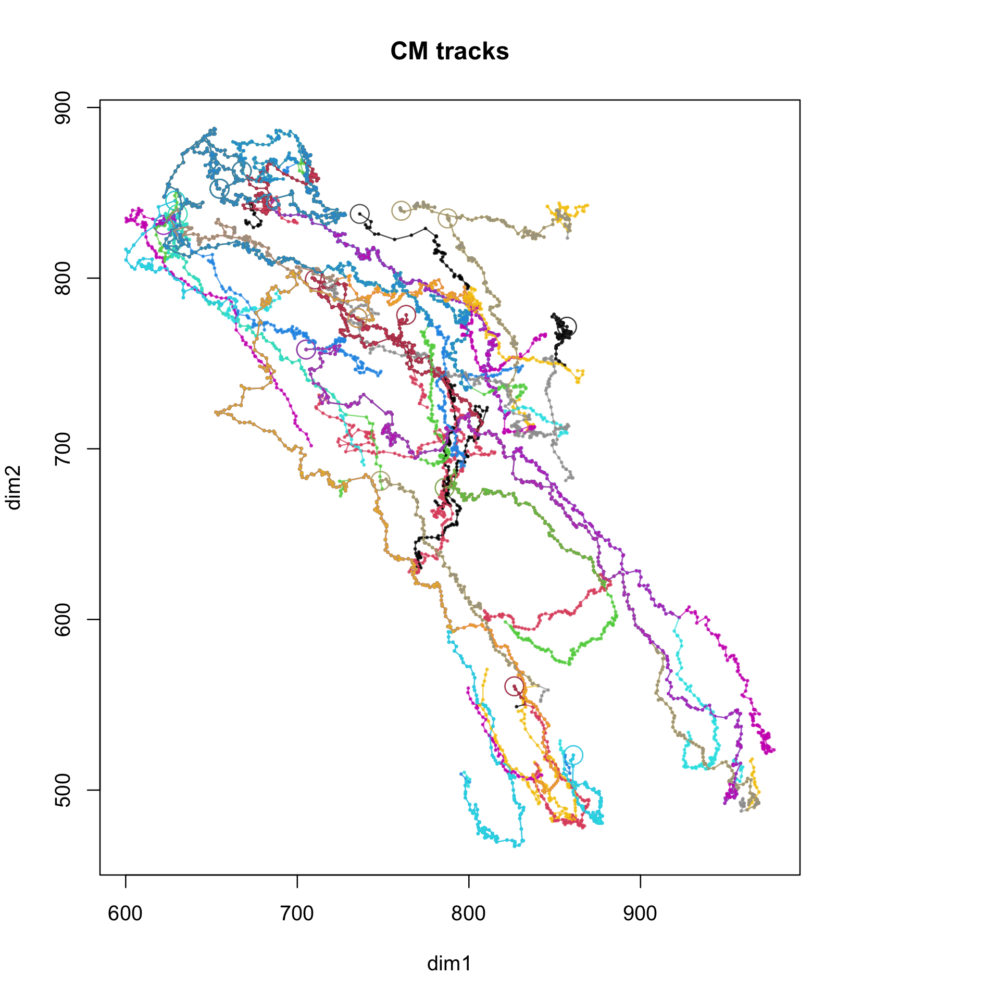
plot(
analysis_state$corrected_track_list$ET,
main = "ET tracks",
lwd = 1,
cex = 0.25,
pch.start = 1,
pch.end = NULL,
pch = 19,
col = scales::alpha(as.factor(seq_along(analysis_state$corrected_track_list$ET)), 0.7)
)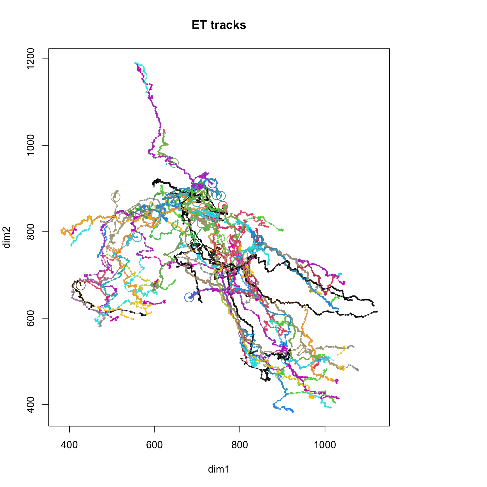
par(old_par)Interpretation:
if (rgl_available) {
plot3d(analysis_state$corrected_track_list$CM, main = "CM tracks", tick.marks = FALSE)
plot3d(analysis_state$corrected_track_list$ET, main = "ET tracks", tick.marks = FALSE)
} else {
cat("3D track rendering was skipped because `rgl` could not load on this machine (missing X11/OpenGL runtime).")
}3D track rendering was skipped because `rgl` could not load on this machine (missing X11/OpenGL runtime).Why keep 3D plots in the review notebook:
The notebook computes behavior metrics over windows of length:
knitr::kable(data.frame(window = windows), caption = "Temporal windows used for subtrack measurements")| window |
|---|
| 1 |
| 5 |
| 10 |
| 15 |
| 20 |
| 25 |
| 30 |
| 35 |
| 40 |
| 45 |
| 50 |
| 60 |
| 70 |
| 80 |
| 90 |
| 100 |
How to explain this in a review:
1 means “use very local motion
behavior”.20 means “summarize the subtrack spanning
20 steps”.if (is.null(analysis_state$measurements_long)) {
cat("The refactored notebook is using the saved cleaned wide feature table from `../data/` instead of recomputing every windowed measurement during render. This keeps the lab-review notebook reproducible and fast on the current machine while preserving the downstream legacy results.")
} else {
scrollable_kable(
head(analysis_state$measurements_long, 25),
caption = "Long-format table: one row per cell, starting timepoint, and window",
digits = 4
)
}The refactored notebook is using the saved cleaned wide feature table from `../data/` instead of recomputing every windowed measurement during render. This keeps the lab-review notebook reproducible and fast on the current machine while preserving the downstream legacy results.The key columns are:
window: which temporal scale was used.node_id: which trajectory the subtrack belongs to.timepoint: the starting timepoint of that
subtrack.t: the subtrack index returned by
celltrackR.trackLength, straightness,
overallAngle, and DistBorderMean.metric_names <- unique(sub("_win\\d+$", "", names(analysis_state$measurements_wide)[-(1:4)]))
for (metric_name in metric_names) {
metric_columns <- grep(paste0("^", metric_name, "_win"), names(analysis_state$measurements_wide), value = TRUE)
plot_df <- analysis_state$measurements_wide |>
dplyr::select(cell_type, node_id, timepoint, dplyr::all_of(metric_columns)) |>
tidyr::pivot_longer(
cols = dplyr::all_of(metric_columns),
names_to = "metric_window",
values_to = "value"
) |>
dplyr::mutate(window = as.integer(sub(".*_win", "", metric_window)))
mean_table <- plot_df |>
dplyr::group_by(cell_type, timepoint, window) |>
dplyr::summarise(value = mean(value, na.rm = TRUE), .groups = "drop")
ggplot(plot_df, aes(x = as.numeric(timepoint), colour = cell_type)) +
geom_line(aes(y = value, group = node_id), alpha = 0.25) +
geom_line(data = mean_table, aes(y = value), linewidth = 1.1) +
facet_wrap(~ window, ncol = 2, scales = "free_y") +
labs(title = metric_name, y = metric_name, x = "Timepoint") +
theme_bw() +
theme(legend.position = "top") |>
print()
}<theme> List of 1
$ legend.position: chr "top"
@ complete: logi FALSE
@ validate: logi TRUE
<theme> List of 1
$ legend.position: chr "top"
@ complete: logi FALSE
@ validate: logi TRUE
<theme> List of 1
$ legend.position: chr "top"
@ complete: logi FALSE
@ validate: logi TRUE
<theme> List of 1
$ legend.position: chr "top"
@ complete: logi FALSE
@ validate: logi TRUE
<theme> List of 1
$ legend.position: chr "top"
@ complete: logi FALSE
@ validate: logi TRUE
<theme> List of 1
$ legend.position: chr "top"
@ complete: logi FALSE
@ validate: logi TRUE
<theme> List of 1
$ legend.position: chr "top"
@ complete: logi FALSE
@ validate: logi TRUE
<theme> List of 1
$ legend.position: chr "top"
@ complete: logi FALSE
@ validate: logi TRUE
<theme> List of 1
$ legend.position: chr "top"
@ complete: logi FALSE
@ validate: logi TRUE
<theme> List of 1
$ legend.position: chr "top"
@ complete: logi FALSE
@ validate: logi TRUE
<theme> List of 1
$ legend.position: chr "top"
@ complete: logi FALSE
@ validate: logi TRUE
<theme> List of 1
$ legend.position: chr "top"
@ complete: logi FALSE
@ validate: logi TRUE
<theme> List of 1
$ legend.position: chr "top"
@ complete: logi FALSE
@ validate: logi TRUE
<theme> List of 1
$ legend.position: chr "top"
@ complete: logi FALSE
@ validate: logi TRUE
<theme> List of 1
$ legend.position: chr "top"
@ complete: logi FALSE
@ validate: logi TRUEHow to read these plots:
scrollable_kable(
head(analysis_state$measurements_wide, 20),
caption = "Wide table used for longitudinal modeling",
digits = 4
)| cell_type | node_id | timepoint | t | trackLength_win1 | trackLength_win5 | trackLength_win10 | trackLength_win15 | trackLength_win20 | trackLength_win25 | trackLength_win30 | trackLength_win35 | trackLength_win40 | maxDisplacement_win1 | maxDisplacement_win5 | maxDisplacement_win10 | maxDisplacement_win15 | maxDisplacement_win20 | maxDisplacement_win25 | maxDisplacement_win30 | maxDisplacement_win35 | maxDisplacement_win40 | speed_win1 | speed_win5 | speed_win10 | speed_win15 | speed_win20 | speed_win25 | speed_win30 | speed_win35 | speed_win40 | displacement_win1 | displacement_win5 | displacement_win10 | displacement_win15 | displacement_win20 | displacement_win25 | displacement_win30 | displacement_win35 | displacement_win40 | squareDisplacement_win1 | squareDisplacement_win5 | squareDisplacement_win10 | squareDisplacement_win15 | squareDisplacement_win20 | squareDisplacement_win25 | squareDisplacement_win30 | squareDisplacement_win35 | squareDisplacement_win40 | displacementRatio_win1 | displacementRatio_win5 | displacementRatio_win10 | displacementRatio_win15 | displacementRatio_win20 | displacementRatio_win25 | displacementRatio_win30 | displacementRatio_win35 | displacementRatio_win40 | outreachRatio_win1 | outreachRatio_win5 | outreachRatio_win10 | outreachRatio_win15 | outreachRatio_win20 | outreachRatio_win25 | outreachRatio_win30 | outreachRatio_win35 | outreachRatio_win40 | straightness_win1 | straightness_win5 | straightness_win10 | straightness_win15 | straightness_win20 | straightness_win25 | straightness_win30 | straightness_win35 | straightness_win40 | asphericity_win1 | asphericity_win5 | asphericity_win10 | asphericity_win15 | asphericity_win20 | asphericity_win25 | asphericity_win30 | asphericity_win35 | asphericity_win40 | overallAngle_win1 | overallAngle_win5 | overallAngle_win10 | overallAngle_win15 | overallAngle_win20 | overallAngle_win25 | overallAngle_win30 | overallAngle_win35 | overallAngle_win40 | meanTurningAngle_win5 | meanTurningAngle_win10 | meanTurningAngle_win15 | meanTurningAngle_win20 | meanTurningAngle_win25 | meanTurningAngle_win30 | meanTurningAngle_win35 | meanTurningAngle_win40 | overallDot_win1 | overallDot_win5 | overallDot_win10 | overallDot_win15 | overallDot_win20 | overallDot_win25 | overallDot_win30 | overallDot_win35 | overallDot_win40 | overallNormDot_win1 | overallNormDot_win5 | overallNormDot_win10 | overallNormDot_win15 | overallNormDot_win20 | overallNormDot_win25 | overallNormDot_win30 | overallNormDot_win35 | overallNormDot_win40 | fractalDimension_win1 | fractalDimension_win5 | fractalDimension_win10 | fractalDimension_win15 | fractalDimension_win20 | fractalDimension_win25 | fractalDimension_win30 | fractalDimension_win35 | fractalDimension_win40 | DistBorderMean_win1 | DistBorderMean_win5 | DistBorderMean_win10 | DistBorderMean_win15 | DistBorderMean_win20 | DistBorderMean_win25 | DistBorderMean_win30 | DistBorderMean_win35 | DistBorderMean_win40 |
|---|---|---|---|---|---|---|---|---|---|---|---|---|---|---|---|---|---|---|---|---|---|---|---|---|---|---|---|---|---|---|---|---|---|---|---|---|---|---|---|---|---|---|---|---|---|---|---|---|---|---|---|---|---|---|---|---|---|---|---|---|---|---|---|---|---|---|---|---|---|---|---|---|---|---|---|---|---|---|---|---|---|---|---|---|---|---|---|---|---|---|---|---|---|---|---|---|---|---|---|---|---|---|---|---|---|---|---|---|---|---|---|---|---|---|---|---|---|---|---|---|---|---|---|---|---|---|---|---|---|---|---|---|---|---|---|---|---|
| CM | 52737 | 256 | 1 | 8.2354 | 26.4485 | 83.0684 | 94.6162 | 108.5897 | 120.6118 | 131.4277 | 146.5649 | 158.6388 | 8.2354 | 16.2624 | 61.1541 | 68.7285 | 76.3575 | 83.7773 | 90.1491 | 100.4470 | 110.1298 | 8.2354 | 5.2897 | 8.3068 | 6.3077 | 5.4295 | 4.8245 | 4.3809 | 4.1876 | 3.9660 | 8.2354 | 16.2624 | 61.1541 | 68.7285 | 76.3575 | 83.7773 | 90.1491 | 100.2107 | 109.8669 | 67.8214 | 264.4667 | 3739.8181 | 4723.6051 | 5830.4663 | 7018.641 | 8126.861 | 10042.178 | 12070.732 | 1 | 1.0000 | 1.0000 | 1.0000 | 1.0000 | 1.0000 | 1.0000 | 0.9976 | 0.9976 | 1 | 0.6149 | 0.7362 | 0.7264 | 0.7032 | 0.6946 | 0.6859 | 0.6853 | 0.6942 | 1 | 0.6149 | 0.7362 | 0.7264 | 0.7032 | 0.6946 | 0.6859 | 0.6837 | 0.6926 | 1 | 0.4249 | 0.8223 | 0.8987 | 0.8911 | 0.9000 | 0.9002 | 0.8945 | 0.9046 | 0 | 22.0798 | 79.7227 | 43.6446 | 60.5323 | 105.2191 | 63.9178 | 119.4404 | 67.1995 | 70.0194 | 56.2718 | 49.6449 | 62.3409 | 65.7632 | 63.9590 | 63.5930 | 63.0782 | 67.8214 | 44.9309 | 28.8319 | 15.9233 | 8.4321 | -5.7462 | 7.2540 | -4.6366 | 2.0471 | 1 | 0.9267 | 0.1784 | 0.7236 | 0.4919 | -0.2625 | 0.4397 | -0.4915 | 0.3875 | 1.2224 | 1.0995 | 1.0995 | 1.0000 | 1.0995 | 1.0000 | 1.0000 | 1.2224 | 1.2224 | 48.7462 | 49.5365 | 49.1855 | 41.9360 | 37.5577 | 36.3253 | 35.2835 | 35.6119 | 36.5984 |
| CM | 52737 | 257 | 2 | 3.6488 | 20.5872 | 75.4099 | 91.9758 | 101.6642 | 113.4839 | 127.9707 | 142.8799 | 151.3925 | 3.6488 | 12.8081 | 57.5195 | 69.7367 | 72.8659 | 81.5789 | 91.4977 | 100.9738 | 107.0677 | 3.6488 | 4.1174 | 7.5410 | 6.1317 | 5.0832 | 4.5394 | 4.2657 | 4.0823 | 3.7848 | 3.6488 | 12.8081 | 57.5195 | 69.7367 | 71.8432 | 81.5789 | 91.4977 | 100.9738 | 107.0677 | 13.3135 | 164.0478 | 3308.4951 | 4863.2021 | 5161.4421 | 6655.110 | 8371.821 | 10195.710 | 11463.492 | 1 | 1.0000 | 1.0000 | 1.0000 | 0.9860 | 1.0000 | 1.0000 | 1.0000 | 1.0000 | 1 | 0.6221 | 0.7628 | 0.7582 | 0.7167 | 0.7189 | 0.7150 | 0.7067 | 0.7072 | 1 | 0.6221 | 0.7628 | 0.7582 | 0.7067 | 0.7189 | 0.7150 | 0.7067 | 0.7072 | 1 | 0.4650 | 0.8781 | 0.9052 | 0.8880 | 0.9003 | 0.8963 | 0.8905 | 0.9018 | 0 | 96.3852 | 71.5650 | 74.1032 | 80.4907 | 75.3605 | 53.7109 | 80.7192 | 82.5488 | 62.6673 | 49.1759 | 48.4071 | 64.0974 | 64.6982 | 61.7978 | 63.0479 | 63.6028 | 13.3135 | -0.9634 | 0.6657 | 5.5917 | 0.7896 | 1.0213 | 10.3191 | 2.6776 | 0.4680 | 1 | -0.1112 | 0.3162 | 0.2739 | 0.1652 | 0.2527 | 0.5919 | 0.1613 | 0.1297 | 1.2224 | 1.0995 | 1.0000 | 1.0000 | 1.0000 | 1.0000 | 1.0000 | 1.1155 | 1.1155 | 53.6292 | 49.7567 | 46.7868 | 40.3932 | 36.4870 | 35.4523 | 34.8450 | 35.4076 | 36.5493 |
| CM | 52737 | 258 | 3 | 5.3320 | 26.8856 | 73.4481 | 92.2014 | 101.0702 | 112.4025 | 128.0026 | 141.4479 | 149.2494 | 5.3320 | 18.1882 | 57.9372 | 69.3073 | 72.8959 | 82.9435 | 92.4471 | 101.3453 | 106.4207 | 5.3320 | 5.3771 | 7.3448 | 6.1468 | 5.0535 | 4.4961 | 4.2668 | 4.0414 | 3.7312 | 5.3320 | 18.1882 | 57.9372 | 69.3073 | 72.8959 | 82.9435 | 92.4471 | 101.3453 | 106.4207 | 28.4301 | 330.8122 | 3356.7188 | 4803.4971 | 5313.8085 | 6879.630 | 8546.463 | 10270.877 | 11325.356 | 1 | 1.0000 | 1.0000 | 1.0000 | 1.0000 | 1.0000 | 1.0000 | 1.0000 | 1.0000 | 1 | 0.6765 | 0.7888 | 0.7517 | 0.7212 | 0.7379 | 0.7222 | 0.7165 | 0.7130 | 1 | 0.6765 | 0.7888 | 0.7517 | 0.7212 | 0.7379 | 0.7222 | 0.7165 | 0.7130 | 1 | 0.6578 | 0.8975 | 0.8879 | 0.8779 | 0.8908 | 0.8830 | 0.8810 | 0.8940 | 0 | 124.7495 | 26.1573 | 67.0946 | 84.8270 | 57.2953 | 118.6139 | 43.2165 | 15.3418 | 47.6523 | 43.4259 | 46.9080 | 68.0321 | 61.9782 | 59.8987 | 61.3178 | 63.9616 | 28.4301 | -30.2312 | 8.0735 | 8.0404 | 1.4686 | 7.3963 | -9.3987 | 8.6141 | 7.7420 | 1 | -0.5700 | 0.8976 | 0.3892 | 0.0902 | 0.5403 | -0.4789 | 0.7288 | 0.9644 | 1.2224 | 1.0995 | 1.0000 | 1.0000 | 1.0000 | 1.0000 | 1.0995 | 1.2224 | 1.3219 | 50.0698 | 49.3444 | 44.3178 | 38.4985 | 35.3897 | 34.4607 | 34.2310 | 35.1166 | 36.4645 |
| CM | 52737 | 259 | 4 | 3.3447 | 36.7502 | 72.3181 | 88.5215 | 97.5547 | 110.2105 | 126.2529 | 138.1116 | 149.7113 | 3.3447 | 31.6902 | 58.2871 | 69.3914 | 72.8352 | 82.5307 | 93.9016 | 101.7392 | 110.4005 | 3.3447 | 7.3500 | 7.2318 | 5.9014 | 4.8777 | 4.4084 | 4.2084 | 3.9460 | 3.7428 | 3.3447 | 31.6902 | 58.2871 | 69.3914 | 72.8352 | 82.5307 | 93.9016 | 101.7392 | 110.4005 | 11.1873 | 1004.2681 | 3397.3807 | 4815.1598 | 5304.9653 | 6811.309 | 8817.520 | 10350.855 | 12188.267 | 1 | 1.0000 | 1.0000 | 1.0000 | 1.0000 | 1.0000 | 1.0000 | 1.0000 | 1.0000 | 1 | 0.8623 | 0.8060 | 0.7839 | 0.7466 | 0.7488 | 0.7438 | 0.7366 | 0.7374 | 1 | 0.8623 | 0.8060 | 0.7839 | 0.7466 | 0.7488 | 0.7438 | 0.7366 | 0.7374 | 1 | 0.8202 | 0.8855 | 0.8662 | 0.8629 | 0.8738 | 0.8662 | 0.8714 | 0.8875 | 0 | 47.8684 | 35.2515 | 33.3762 | 47.2784 | 42.3021 | 30.8058 | 9.1914 | 12.3067 | 44.0719 | 41.9558 | 48.0745 | 66.8152 | 61.2935 | 58.0856 | 60.5917 | 63.8903 | 11.1873 | 34.0975 | 11.4774 | 4.6143 | 4.1219 | 7.7677 | 10.2914 | 6.5893 | 18.9338 | 1 | 0.6708 | 0.8166 | 0.8351 | 0.6784 | 0.7396 | 0.8589 | 0.9872 | 0.9770 | 1.2224 | 1.0995 | 1.0000 | 1.0000 | 1.0995 | 1.0000 | 1.0995 | 1.2224 | 1.1155 | 47.4836 | 50.3903 | 42.1925 | 36.5821 | 34.5270 | 33.6764 | 33.7875 | 34.9179 | 36.4853 |
| CM | 52737 | 260 | 5 | 5.8876 | 42.8846 | 71.3834 | 85.9475 | 97.3929 | 108.8634 | 124.8586 | 137.4365 | 148.7731 | 5.8876 | 37.5714 | 57.6417 | 66.4455 | 72.6734 | 79.5077 | 90.8062 | 100.5476 | 109.6378 | 5.8876 | 8.5769 | 7.1383 | 5.7298 | 4.8696 | 4.3545 | 4.1620 | 3.9268 | 3.7193 | 5.8876 | 37.5714 | 57.6417 | 65.7610 | 72.6734 | 78.8638 | 89.9812 | 100.5476 | 109.6378 | 34.6642 | 1411.6132 | 3322.5702 | 4324.5077 | 5281.4227 | 6219.505 | 8096.610 | 10109.812 | 12020.441 | 1 | 1.0000 | 1.0000 | 0.9897 | 1.0000 | 0.9919 | 0.9909 | 1.0000 | 1.0000 | 1 | 0.8761 | 0.8075 | 0.7731 | 0.7462 | 0.7303 | 0.7273 | 0.7316 | 0.7369 | 1 | 0.8761 | 0.8075 | 0.7651 | 0.7462 | 0.7244 | 0.7207 | 0.7316 | 0.7369 | 1 | 0.8640 | 0.8755 | 0.8489 | 0.8518 | 0.8597 | 0.8509 | 0.8664 | 0.8858 | 0 | 63.9852 | 60.2046 | 160.0629 | 70.1089 | 85.6313 | 79.7037 | 84.0863 | 53.4752 | 40.4342 | 41.5494 | 55.1865 | 67.5648 | 61.7109 | 59.3283 | 60.4359 | 63.1226 | 34.6642 | 24.4784 | 7.0506 | -4.2659 | 6.3761 | 0.8959 | 2.0525 | 1.6194 | 8.4330 | 1 | 0.4386 | 0.4969 | -0.9401 | 0.3402 | 0.0762 | 0.1787 | 0.1030 | 0.5952 | 1.2224 | 1.0000 | 1.0000 | 1.0000 | 1.0995 | 1.0000 | 1.0995 | 1.2224 | 1.1155 | 47.7537 | 49.8825 | 40.1493 | 34.9396 | 33.7848 | 33.0188 | 33.5109 | 34.8379 | 36.5248 |
| CM | 52737 | 261 | 6 | 2.3741 | 56.6199 | 68.1677 | 82.1412 | 94.1633 | 104.9792 | 120.1164 | 132.1903 | 144.8812 | 2.3741 | 48.6335 | 55.6578 | 63.0631 | 70.7769 | 76.8709 | 86.5740 | 96.4242 | 107.4243 | 2.3741 | 11.3240 | 6.8168 | 5.4761 | 4.7082 | 4.1992 | 4.0039 | 3.7769 | 3.6220 | 2.3741 | 48.6335 | 55.6578 | 63.0631 | 70.7769 | 76.8709 | 86.2677 | 96.1130 | 107.4243 | 5.6363 | 2365.2180 | 3097.7958 | 3976.9547 | 5009.3673 | 5909.139 | 7442.122 | 9237.714 | 11539.990 | 1 | 1.0000 | 1.0000 | 1.0000 | 1.0000 | 1.0000 | 0.9965 | 0.9968 | 1.0000 | 1 | 0.8589 | 0.8165 | 0.7677 | 0.7516 | 0.7322 | 0.7208 | 0.7294 | 0.7415 | 1 | 0.8589 | 0.8165 | 0.7677 | 0.7516 | 0.7322 | 0.7182 | 0.7271 | 0.7415 | 1 | 0.8489 | 0.8733 | 0.8363 | 0.8483 | 0.8552 | 0.8450 | 0.8684 | 0.8912 | 0 | 51.4209 | 47.8621 | 72.2966 | 66.9910 | 47.2821 | 71.1931 | 117.0868 | 49.9517 | 46.0331 | 41.4127 | 61.5831 | 66.1054 | 63.8540 | 63.4430 | 62.8746 | 62.4292 | 5.6363 | 29.0512 | 4.2559 | 1.5026 | 2.4665 | 3.2266 | 0.8767 | -0.6934 | 3.0485 | 1 | 0.6236 | 0.6709 | 0.3041 | 0.3909 | 0.6784 | 0.3224 | -0.4553 | 0.6434 | 1.2224 | 1.0000 | 1.0000 | 1.0000 | 0.8931 | 1.0000 | 1.0995 | 1.5025 | 1.2224 | 49.8471 | 48.8345 | 38.1358 | 33.5648 | 33.0225 | 32.4329 | 33.2911 | 34.7501 | 36.5786 |
| CM | 52737 | 262 | 7 | 9.9472 | 54.8227 | 71.3886 | 81.0770 | 92.8967 | 107.3835 | 122.2926 | 130.8053 | 143.4437 | 9.9472 | 46.9629 | 58.4122 | 61.1280 | 69.9443 | 79.4911 | 88.8545 | 94.9281 | 105.6220 | 9.9472 | 10.9645 | 7.1389 | 5.4051 | 4.6448 | 4.2953 | 4.0764 | 3.7373 | 3.5861 | 9.9472 | 46.9629 | 58.4122 | 60.0597 | 69.9443 | 79.4911 | 88.8545 | 94.9281 | 104.7198 | 98.9463 | 2205.5135 | 3411.9813 | 3607.1677 | 4892.2029 | 6318.842 | 7895.118 | 9011.353 | 10966.232 | 1 | 1.0000 | 1.0000 | 0.9825 | 1.0000 | 1.0000 | 1.0000 | 1.0000 | 0.9915 | 1 | 0.8566 | 0.8182 | 0.7540 | 0.7529 | 0.7403 | 0.7266 | 0.7257 | 0.7363 | 1 | 0.8566 | 0.8182 | 0.7408 | 0.7529 | 0.7403 | 0.7266 | 0.7257 | 0.7300 | 1 | 0.8651 | 0.8579 | 0.8170 | 0.8469 | 0.8555 | 0.8474 | 0.8760 | 0.9014 | 0 | 62.3077 | 80.6487 | 144.8884 | 44.9126 | 48.3530 | 51.4251 | 5.6231 | 132.5201 | 40.5227 | 44.1340 | 66.9542 | 66.9612 | 62.9852 | 64.2460 | 64.7064 | 66.0569 | 98.9463 | 2.6669 | 9.0430 | -10.6585 | 7.8020 | 31.5862 | 28.2230 | 9.7908 | -6.2968 | 1 | 0.4647 | 0.1625 | -0.8180 | 0.7082 | 0.6645 | 0.6235 | 0.9952 | -0.6758 | 1.2224 | 1.0000 | 1.0000 | 1.0000 | 1.0995 | 1.0000 | 1.0995 | 1.4150 | 1.2224 | 51.5677 | 43.8169 | 35.7114 | 32.0637 | 31.8762 | 31.8626 | 33.0161 | 34.6626 | 36.5084 |
| CM | 52737 | 263 | 8 | 15.1965 | 46.5625 | 65.3158 | 74.1846 | 85.5169 | 101.1170 | 114.5623 | 122.3637 | 135.1449 | 15.1965 | 41.9683 | 53.5999 | 57.1502 | 67.3730 | 76.5180 | 85.2860 | 90.5064 | 100.3323 | 15.1965 | 9.3125 | 6.5316 | 4.9456 | 4.2758 | 4.0447 | 3.8187 | 3.4961 | 3.3786 | 15.1965 | 41.9683 | 53.5999 | 57.1502 | 67.3730 | 76.5180 | 85.2860 | 90.5064 | 100.1578 | 230.9342 | 1761.3342 | 2872.9469 | 3266.1405 | 4539.1161 | 5854.998 | 7273.709 | 8191.417 | 10031.589 | 1 | 1.0000 | 1.0000 | 1.0000 | 1.0000 | 1.0000 | 1.0000 | 1.0000 | 0.9983 | 1 | 0.9013 | 0.8206 | 0.7704 | 0.7878 | 0.7567 | 0.7445 | 0.7397 | 0.7424 | 1 | 0.9013 | 0.8206 | 0.7704 | 0.7878 | 0.7567 | 0.7445 | 0.7397 | 0.7411 | 1 | 0.9002 | 0.8435 | 0.8314 | 0.8718 | 0.8764 | 0.8673 | 0.8958 | 0.9195 | 0 | 45.0071 | 99.5837 | 21.9013 | 29.4054 | 64.8166 | 27.4148 | 55.0715 | 93.1492 | 36.0391 | 45.5594 | 74.7095 | 65.3053 | 62.0995 | 63.3838 | 66.1125 | 67.8328 | 230.9342 | 18.1248 | -9.8024 | 43.0718 | 33.9883 | 23.8006 | 29.9048 | 13.1003 | -1.3761 | 1 | 0.7070 | -0.1665 | 0.9278 | 0.8712 | 0.4255 | 0.8877 | 0.5726 | -0.0549 | 1.2224 | 1.0000 | 1.0000 | 1.0995 | 1.0000 | 1.0995 | 1.0995 | 1.2224 | 1.1155 | 55.2994 | 39.2913 | 33.0756 | 30.7382 | 30.7398 | 31.2084 | 32.7453 | 34.6245 | 36.4612 |
| CM | 58887 | 0 | 1 | 7.2419 | 19.1687 | 41.6138 | 64.6599 | 80.8347 | 105.8520 | 119.5723 | 147.4667 | 165.7270 | 7.2419 | 17.5896 | 20.9124 | 24.9833 | 32.8710 | 52.8081 | 55.2820 | 55.2820 | 61.0765 | 7.2419 | 3.8337 | 4.1614 | 4.3107 | 4.0417 | 4.2341 | 3.9857 | 4.2133 | 4.1432 | 7.2419 | 17.5896 | 18.3056 | 24.9833 | 31.2346 | 52.8081 | 48.6279 | 52.2738 | 60.2936 | 52.4455 | 309.3936 | 335.0966 | 624.1628 | 975.6015 | 2788.695 | 2364.677 | 2732.550 | 3635.320 | 1 | 1.0000 | 0.8753 | 1.0000 | 0.9502 | 1.0000 | 0.8796 | 0.9456 | 0.9872 | 1 | 0.9176 | 0.5025 | 0.3864 | 0.4066 | 0.4989 | 0.4623 | 0.3749 | 0.3685 | 1 | 0.9176 | 0.4399 | 0.3864 | 0.3864 | 0.4989 | 0.4067 | 0.3545 | 0.3638 | 1 | 0.9373 | 0.2778 | 0.4369 | 0.6606 | 0.7365 | 0.7791 | 0.7952 | 0.8262 | 0 | 72.4315 | 169.7854 | 91.1482 | 114.7388 | 74.4939 | 26.7573 | 88.2336 | 40.6132 | 33.3563 | 64.6733 | 62.3655 | 60.5944 | 57.7264 | 59.2754 | 65.6531 | 63.7078 | 52.4455 | 4.3963 | -20.2473 | -0.4993 | -6.6264 | 10.2440 | 11.3891 | 0.9832 | 27.0184 | 1 | 0.3018 | -0.9842 | -0.0200 | -0.4185 | 0.2673 | 0.8929 | 0.0308 | 0.7591 | 1.0000 | 1.2224 | 1.2224 | 1.2224 | 1.1699 | 0.9069 | 1.0000 | 1.0704 | 1.2895 | 26.5745 | 27.8413 | 29.1438 | 31.2699 | 30.9214 | 29.8989 | 28.3841 | 27.4164 | 26.6656 |
| CM | 58887 | 1 | 2 | 2.4614 | 14.7477 | 38.2750 | 60.6116 | 77.5666 | 100.1948 | 116.4709 | 142.8923 | 162.9692 | 2.4614 | 10.6005 | 15.6247 | 27.4217 | 36.3347 | 54.1587 | 55.7163 | 55.7163 | 62.3591 | 2.4614 | 2.9495 | 3.8275 | 4.0408 | 3.8783 | 4.0078 | 3.8824 | 4.0826 | 4.0742 | 2.4614 | 10.4164 | 15.6247 | 27.4217 | 36.3347 | 54.1587 | 45.5215 | 55.4584 | 62.3591 | 6.0584 | 108.5015 | 244.1310 | 751.9515 | 1320.2098 | 2933.161 | 2072.208 | 3075.629 | 3888.652 | 1 | 0.9826 | 1.0000 | 1.0000 | 1.0000 | 1.0000 | 0.8170 | 0.9954 | 1.0000 | 1 | 0.7188 | 0.4082 | 0.4524 | 0.4684 | 0.5405 | 0.4784 | 0.3899 | 0.3826 | 1 | 0.7063 | 0.4082 | 0.4524 | 0.4684 | 0.5405 | 0.3908 | 0.3881 | 0.3826 | 1 | 0.8400 | 0.3951 | 0.6634 | 0.7809 | 0.7847 | 0.8088 | 0.8214 | 0.8367 | 0 | 73.9237 | 80.8397 | 61.0909 | 79.0262 | 106.3719 | 71.3401 | 89.3056 | 23.4233 | 60.7012 | 74.1727 | 63.6930 | 66.3971 | 59.0519 | 60.3846 | 65.7251 | 63.7740 | 6.0584 | 1.9227 | 1.5294 | 3.8000 | 1.8619 | -1.0995 | 3.2607 | 0.0796 | 10.1276 | 1 | 0.2769 | 0.1592 | 0.4834 | 0.1904 | -0.2819 | 0.3200 | 0.0121 | 0.9176 | 1.0000 | 1.2224 | 1.2224 | 1.0000 | 1.2801 | 0.9069 | 1.0875 | 1.2224 | 1.3923 | 29.7720 | 27.9543 | 30.2188 | 31.5631 | 31.0417 | 29.6499 | 28.2041 | 27.2055 | 26.5313 |
| CM | 58887 | 2 | 3 | 4.3919 | 21.8762 | 41.6273 | 61.2797 | 81.8743 | 101.2956 | 118.7247 | 142.7788 | 166.6379 | 4.3919 | 10.4507 | 16.4591 | 29.0106 | 42.0964 | 55.3459 | 55.5536 | 57.4830 | 62.0092 | 4.3919 | 4.3752 | 4.1627 | 4.0853 | 4.0937 | 4.0518 | 3.9575 | 4.0794 | 4.1659 | 4.3919 | 10.4507 | 16.4591 | 29.0106 | 42.0964 | 55.3459 | 48.3394 | 57.4830 | 59.5522 | 19.2891 | 109.2168 | 270.9032 | 841.6123 | 1772.1096 | 3063.172 | 2336.699 | 3304.291 | 3546.470 | 1 | 1.0000 | 1.0000 | 1.0000 | 1.0000 | 1.0000 | 0.8701 | 1.0000 | 0.9604 | 1 | 0.4777 | 0.3954 | 0.4734 | 0.5142 | 0.5464 | 0.4679 | 0.4026 | 0.3721 | 1 | 0.4777 | 0.3954 | 0.4734 | 0.5142 | 0.5464 | 0.4072 | 0.4026 | 0.3574 | 1 | 0.3323 | 0.5684 | 0.7530 | 0.8194 | 0.7970 | 0.8082 | 0.8294 | 0.8174 | 0 | 120.7136 | 142.0378 | 118.7674 | 94.0754 | 126.1587 | 74.4745 | 136.4933 | 17.8172 | 58.2777 | 75.9066 | 65.5154 | 65.4901 | 59.4079 | 63.7287 | 65.6036 | 64.2738 | 19.2891 | -21.5118 | -20.1309 | -6.6145 | -2.1128 | -9.2308 | 5.5432 | -7.4792 | 25.6317 | 1 | -0.5107 | -0.7884 | -0.4813 | -0.0711 | -0.5900 | 0.2677 | -0.7253 | 0.9520 | 1.0000 | 1.0995 | 1.2224 | 1.0000 | 1.2801 | 0.9069 | 1.0875 | 1.0704 | 1.0000 | 27.9968 | 27.5599 | 30.8300 | 31.6713 | 31.0046 | 29.3135 | 28.0412 | 26.9594 | 26.2377 |
| CM | 58887 | 3 | 4 | 3.0623 | 20.5985 | 43.5593 | 62.0777 | 81.6766 | 97.2678 | 120.6711 | 143.2888 | 165.3943 | 3.0623 | 10.1405 | 22.0560 | 35.5785 | 47.1610 | 57.5228 | 57.5228 | 64.2013 | 64.2013 | 3.0623 | 4.1197 | 4.3559 | 4.1385 | 4.0838 | 3.8907 | 4.0224 | 4.0940 | 4.1349 | 3.0623 | 9.1739 | 22.0560 | 35.5785 | 47.1610 | 57.5228 | 56.3295 | 64.2013 | 61.2442 | 9.3774 | 84.1612 | 486.4663 | 1265.8279 | 2224.1573 | 3308.873 | 3173.009 | 4121.801 | 3750.847 | 1 | 0.9047 | 1.0000 | 1.0000 | 1.0000 | 1.0000 | 0.9793 | 1.0000 | 0.9539 | 1 | 0.4923 | 0.5063 | 0.5731 | 0.5774 | 0.5914 | 0.4767 | 0.4481 | 0.3882 | 1 | 0.4454 | 0.5063 | 0.5731 | 0.5774 | 0.5914 | 0.4668 | 0.4481 | 0.3703 | 1 | 0.7297 | 0.6685 | 0.8069 | 0.8384 | 0.8027 | 0.8061 | 0.8360 | 0.7863 | 0 | 28.9391 | 155.2339 | 164.4781 | 74.7273 | 110.3745 | 116.5917 | 137.5857 | 48.6817 | 85.4713 | 77.8108 | 66.7950 | 66.9132 | 60.2660 | 64.9375 | 65.1491 | 64.5746 | 9.3774 | 8.3458 | -17.5844 | -15.3135 | 3.3832 | -0.3882 | -8.6883 | -11.0824 | 6.3653 | 1 | 0.8751 | -0.9080 | -0.9635 | 0.2634 | -0.3482 | -0.4476 | -0.7383 | 0.6602 | 1.2224 | 1.2224 | 1.2224 | 1.0000 | 1.0000 | 0.9069 | 1.0875 | 1.2895 | 1.1375 | 28.0357 | 27.9621 | 31.7049 | 31.8610 | 30.9115 | 28.9645 | 27.8149 | 26.8053 | 25.9355 |
| CM | 58887 | 4 | 5 | 2.0112 | 21.6154 | 44.0618 | 61.4907 | 83.4033 | 100.6536 | 125.9050 | 143.6548 | 167.6893 | 2.0112 | 12.0573 | 27.4243 | 39.3852 | 51.8033 | 59.2460 | 59.2460 | 66.0304 | 66.0304 | 2.0112 | 4.3231 | 4.4062 | 4.0994 | 4.1702 | 4.0261 | 4.1968 | 4.1044 | 4.1922 | 2.0112 | 12.0573 | 27.4243 | 39.3852 | 51.8033 | 53.2486 | 52.4199 | 63.7312 | 64.9121 | 4.0448 | 145.3774 | 752.0933 | 1551.1938 | 2683.5860 | 2835.415 | 2747.842 | 4061.663 | 4213.575 | 1 | 1.0000 | 1.0000 | 1.0000 | 1.0000 | 0.8988 | 0.8848 | 0.9652 | 0.9831 | 1 | 0.5578 | 0.6224 | 0.6405 | 0.6211 | 0.5886 | 0.4706 | 0.4596 | 0.3938 | 1 | 0.5578 | 0.6224 | 0.6405 | 0.6211 | 0.5290 | 0.4163 | 0.4436 | 0.3871 | 1 | 0.7432 | 0.7470 | 0.8371 | 0.8210 | 0.8007 | 0.8032 | 0.8361 | 0.7374 | 0 | 150.3751 | 153.8516 | 154.0064 | 86.9716 | 67.8216 | 84.9645 | 14.7449 | 65.4458 | 86.5539 | 74.3090 | 64.9536 | 65.1258 | 62.4924 | 67.2282 | 67.2500 | 63.2636 | 4.0448 | -7.1315 | -6.4357 | -4.4746 | 0.5088 | 4.8954 | 1.4645 | 6.6678 | 4.4774 | 1 | -0.8693 | -0.8977 | -0.8988 | 0.0528 | 0.3775 | 0.0878 | 0.9671 | 0.4156 | 1.2224 | 1.2224 | 1.2224 | 1.0000 | 1.1926 | 0.9069 | 1.0875 | 1.2224 | 0.9260 | 26.8277 | 28.7936 | 32.3236 | 31.8967 | 30.6810 | 28.7092 | 27.5337 | 26.6486 | 25.6903 |
| CM | 58887 | 5 | 6 | 2.8209 | 22.4451 | 45.4913 | 61.6661 | 86.6833 | 100.4037 | 128.2980 | 146.5583 | 168.2457 | 2.8209 | 13.7143 | 30.7018 | 40.7977 | 57.0155 | 60.2433 | 60.2433 | 67.0825 | 67.0825 | 2.8209 | 4.4890 | 4.5491 | 4.1111 | 4.3342 | 4.0161 | 4.2766 | 4.1874 | 4.2061 | 2.8209 | 13.4020 | 30.7018 | 39.7104 | 57.0155 | 53.5854 | 57.5093 | 64.9574 | 65.9808 | 7.9576 | 179.6124 | 942.6023 | 1576.9121 | 3250.7644 | 2871.390 | 3307.320 | 4219.463 | 4353.468 | 1 | 0.9772 | 1.0000 | 0.9733 | 1.0000 | 0.8895 | 0.9546 | 0.9683 | 0.9836 | 1 | 0.6110 | 0.6749 | 0.6616 | 0.6577 | 0.6000 | 0.4696 | 0.4577 | 0.3987 | 1 | 0.5971 | 0.6749 | 0.6440 | 0.6577 | 0.5337 | 0.4482 | 0.4432 | 0.3922 | 1 | 0.6808 | 0.7753 | 0.8368 | 0.7823 | 0.7942 | 0.7985 | 0.8291 | 0.6838 | 0 | 104.6605 | 42.6881 | 141.8323 | 30.9010 | 89.4135 | 19.3022 | 76.4013 | 74.0057 | 81.6875 | 68.6452 | 63.9988 | 59.4803 | 60.9865 | 68.1688 | 65.5675 | 60.8152 | 7.9576 | -2.0282 | 7.1342 | -4.8493 | 12.8072 | 0.0509 | 11.7255 | 3.2597 | 1.9958 | 1 | -0.2531 | 0.7351 | -0.7862 | 0.8581 | 0.0102 | 0.9438 | 0.2351 | 0.2755 | 1.2224 | 1.2224 | 1.2224 | 1.0000 | 1.1926 | 0.9069 | 1.0000 | 1.2895 | 1.0704 | 27.1395 | 30.4463 | 32.9842 | 31.9481 | 30.4133 | 28.4926 | 27.3456 | 26.4977 | 25.4931 |
| CM | 58887 | 6 | 7 | 9.5899 | 23.5273 | 45.8639 | 62.8189 | 85.4471 | 101.7232 | 128.1446 | 148.2215 | 167.0936 | 9.5899 | 14.5274 | 30.3546 | 40.5995 | 55.7806 | 57.6440 | 57.6440 | 64.5203 | 64.5203 | 9.5899 | 4.7055 | 4.5864 | 4.1879 | 4.2724 | 4.0689 | 4.2715 | 4.2349 | 4.1773 | 9.5899 | 14.5274 | 30.3546 | 40.5995 | 55.7806 | 47.3237 | 57.5747 | 63.3124 | 63.1224 | 91.9669 | 211.0461 | 921.4016 | 1648.3198 | 3111.4773 | 2239.528 | 3314.850 | 4008.465 | 3984.432 | 1 | 1.0000 | 1.0000 | 1.0000 | 1.0000 | 0.8210 | 0.9988 | 0.9813 | 0.9783 | 1 | 0.6175 | 0.6618 | 0.6463 | 0.6528 | 0.5667 | 0.4498 | 0.4353 | 0.3861 | 1 | 0.6175 | 0.6618 | 0.6463 | 0.6528 | 0.4652 | 0.4493 | 0.4271 | 0.3778 | 1 | 0.6091 | 0.7947 | 0.8582 | 0.7679 | 0.7918 | 0.8019 | 0.8203 | 0.6417 | 0 | 11.9355 | 39.6805 | 32.3357 | 42.3426 | 134.0095 | 24.1479 | 85.8611 | 118.5327 | 101.1824 | 69.8752 | 71.3371 | 60.7590 | 62.0137 | 67.9942 | 65.4224 | 63.3144 | 91.9669 | 36.6215 | 23.5705 | 32.1985 | 11.2332 | -27.5873 | 23.3425 | 3.1037 | -7.6442 | 1 | 0.9784 | 0.7696 | 0.8449 | 0.7391 | -0.6948 | 0.9125 | 0.0722 | -0.4777 | 1.2224 | 1.2224 | 1.2224 | 1.0000 | 1.2801 | 1.0995 | 1.0000 | 1.4150 | 1.1375 | 27.8001 | 32.4832 | 33.3675 | 32.0708 | 30.0738 | 28.2541 | 27.0807 | 26.3281 | 25.3320 |
| CM | 58887 | 7 | 8 | 3.1142 | 19.7511 | 39.4034 | 59.9981 | 79.4194 | 96.8485 | 120.9026 | 144.7617 | 164.9583 | 3.1142 | 9.1954 | 23.0497 | 36.5018 | 48.5864 | 48.8006 | 50.9491 | 55.6225 | 60.1951 | 3.1142 | 3.9502 | 3.9403 | 3.9999 | 3.9710 | 3.8739 | 4.0301 | 4.1360 | 4.1240 | 3.1142 | 9.1954 | 23.0497 | 36.5018 | 48.5864 | 41.1224 | 50.9491 | 51.9490 | 60.1951 | 9.6985 | 84.5553 | 531.2893 | 1332.3785 | 2360.6365 | 1691.049 | 2595.809 | 2698.697 | 3623.451 | 1 | 1.0000 | 1.0000 | 1.0000 | 1.0000 | 0.8427 | 1.0000 | 0.9340 | 1.0000 | 1 | 0.4656 | 0.5850 | 0.6084 | 0.6118 | 0.5039 | 0.4214 | 0.3842 | 0.3649 | 1 | 0.4656 | 0.5850 | 0.6084 | 0.6118 | 0.4246 | 0.4214 | 0.3589 | 0.3649 | 1 | 0.4121 | 0.8184 | 0.8705 | 0.7764 | 0.7883 | 0.8143 | 0.7982 | 0.6199 | 0 | 167.9376 | 162.2755 | 132.5669 | 151.9303 | 118.4437 | 141.8835 | 49.7139 | 160.3402 | 80.2529 | 61.6742 | 63.0117 | 55.9812 | 61.9160 | 64.4267 | 63.0745 | 61.2389 | 9.6985 | -17.7054 | -9.2832 | -14.2601 | -9.7886 | -6.9941 | -5.7528 | 12.3440 | -21.8621 | 1 | -0.9779 | -0.9525 | -0.6765 | -0.8824 | -0.4763 | -0.7868 | 0.6466 | -0.9417 | 1.2224 | 1.0995 | 1.2224 | 1.0000 | 1.0000 | 1.0995 | 1.1926 | 1.2895 | 1.0704 | 30.0073 | 34.1000 | 33.7270 | 32.1529 | 29.7519 | 28.1375 | 26.8593 | 26.0488 | 25.1962 |
| CM | 58887 | 8 | 9 | 4.0792 | 22.9608 | 41.4792 | 61.0781 | 76.6692 | 100.0726 | 122.6903 | 144.7957 | 164.8595 | 4.0792 | 16.9787 | 30.4728 | 41.2364 | 51.5272 | 51.5272 | 58.3678 | 58.3678 | 63.0643 | 4.0792 | 4.5922 | 4.1479 | 4.0719 | 3.8335 | 4.0029 | 4.0897 | 4.1370 | 4.1215 | 4.0792 | 16.9787 | 30.4728 | 41.2364 | 51.5272 | 49.9649 | 58.3678 | 54.9353 | 63.0643 | 16.6396 | 288.2759 | 928.5904 | 1700.4395 | 2655.0529 | 2496.495 | 3406.798 | 3017.885 | 3977.106 | 1 | 1.0000 | 1.0000 | 1.0000 | 1.0000 | 0.9697 | 1.0000 | 0.9412 | 1.0000 | 1 | 0.7395 | 0.7347 | 0.6751 | 0.6721 | 0.5149 | 0.4757 | 0.4031 | 0.3825 | 1 | 0.7395 | 0.7347 | 0.6751 | 0.6721 | 0.4993 | 0.4757 | 0.3794 | 0.3825 | 1 | 0.7798 | 0.8645 | 0.8571 | 0.7882 | 0.7882 | 0.8247 | 0.7609 | 0.6071 | 0 | 76.7624 | 91.9097 | 51.7588 | 131.3383 | 71.0373 | 71.3416 | 111.4903 | 23.5916 | 70.7847 | 57.5524 | 61.0137 | 54.1697 | 61.0845 | 61.9969 | 61.8015 | 62.5118 | 16.6396 | 5.9071 | -0.7055 | 10.5899 | -0.9810 | 8.4016 | 6.3972 | -4.7047 | 11.2727 | 1 | 0.2290 | -0.0333 | 0.6190 | -0.6605 | 0.3250 | 0.3199 | -0.3663 | 0.9164 | 1.2224 | 1.2224 | 1.2224 | 1.0000 | 1.2801 | 1.0995 | 1.0875 | 1.2224 | 1.1520 | 32.1931 | 35.4478 | 33.8105 | 31.8946 | 29.2151 | 27.7854 | 26.6125 | 25.6460 | 24.8501 |
| CM | 58887 | 9 | 10 | 2.8409 | 22.4464 | 39.8753 | 61.7879 | 79.0381 | 104.2896 | 122.0394 | 146.0739 | 164.2515 | 2.8409 | 18.9596 | 31.5274 | 43.1694 | 51.2123 | 51.2123 | 57.9340 | 57.9340 | 65.0605 | 2.8409 | 4.4893 | 3.9875 | 4.1192 | 3.9519 | 4.1716 | 4.0680 | 4.1735 | 4.1063 | 2.8409 | 18.9596 | 31.5274 | 43.1694 | 45.5073 | 44.6178 | 55.9770 | 57.6195 | 65.0605 | 8.0706 | 359.4680 | 993.9773 | 1863.5933 | 2070.9167 | 1990.751 | 3133.427 | 3320.009 | 4232.864 | 1 | 1.0000 | 1.0000 | 1.0000 | 0.8886 | 0.8712 | 0.9662 | 0.9946 | 1.0000 | 1 | 0.8447 | 0.7906 | 0.6987 | 0.6479 | 0.4911 | 0.4747 | 0.3966 | 0.3961 | 1 | 0.8447 | 0.7906 | 0.6987 | 0.5758 | 0.4278 | 0.4587 | 0.3945 | 0.3961 | 1 | 0.9035 | 0.9005 | 0.8117 | 0.7972 | 0.7947 | 0.8345 | 0.7071 | 0.6077 | 0 | 74.5668 | 51.2866 | 129.6745 | 75.4307 | 47.3414 | 95.7186 | 150.3095 | 111.4265 | 55.0367 | 51.1907 | 56.3397 | 55.3254 | 62.5409 | 63.3747 | 59.3719 | 60.5060 | 8.0706 | 2.6950 | 4.3980 | -8.6857 | 4.6080 | 15.9706 | -0.9704 | -13.2213 | -3.6023 | 1 | 0.2661 | 0.6254 | -0.6384 | 0.2516 | 0.6776 | -0.0996 | -0.8687 | -0.3653 | 1.2224 | 1.2224 | 1.2224 | 1.0000 | 1.2801 | 1.0995 | 1.0875 | 1.2224 | 1.1520 | 35.0914 | 35.8537 | 33.4483 | 31.3102 | 28.6881 | 27.2817 | 26.2911 | 25.2470 | 24.5209 |
| CM | 58887 | 10 | 11 | 3.9031 | 23.0461 | 39.2209 | 64.2381 | 77.9585 | 105.8529 | 124.1132 | 145.8006 | 167.5248 | 3.9031 | 19.3384 | 30.1963 | 46.9960 | 50.7720 | 50.7720 | 57.3691 | 58.6294 | 67.3811 | 3.9031 | 4.6092 | 3.9221 | 4.2825 | 3.8979 | 4.2341 | 4.1371 | 4.1657 | 4.1881 | 3.9031 | 19.3384 | 29.5618 | 46.9960 | 44.0461 | 48.0785 | 56.0231 | 58.6294 | 67.3811 | 15.2344 | 373.9745 | 873.8982 | 2208.6249 | 1940.0618 | 2311.539 | 3138.591 | 3437.403 | 4540.210 | 1 | 1.0000 | 0.9790 | 1.0000 | 0.8675 | 0.9469 | 0.9765 | 1.0000 | 1.0000 | 1 | 0.8391 | 0.7699 | 0.7316 | 0.6513 | 0.4796 | 0.4622 | 0.4021 | 0.4022 | 1 | 0.8391 | 0.7537 | 0.7316 | 0.5650 | 0.4542 | 0.4514 | 0.4021 | 0.4022 | 1 | 0.8829 | 0.8834 | 0.7610 | 0.8037 | 0.8029 | 0.8381 | 0.6523 | 0.6185 | 0 | 47.1555 | 141.3172 | 38.0718 | 93.0509 | 24.2308 | 84.4725 | 80.9072 | 41.4260 | 48.2644 | 52.3593 | 50.3840 | 54.6803 | 64.6728 | 62.2257 | 57.2660 | 58.7151 | 15.2344 | 9.1319 | -6.6619 | 16.2580 | -0.3659 | 15.6757 | 1.8477 | 1.5838 | 17.8938 | 1 | 0.6800 | -0.7806 | 0.7872 | -0.0532 | 0.9119 | 0.0963 | 0.1580 | 0.7498 | 1.2224 | 1.2224 | 1.0995 | 1.0875 | 1.2801 | 1.0995 | 1.0875 | 1.3219 | 1.2479 | 37.3242 | 35.5222 | 32.6990 | 30.4023 | 28.0042 | 26.7255 | 25.8396 | 24.7855 | 24.2301 |
| CM | 58887 | 11 | 12 | 5.8137 | 22.3366 | 39.2915 | 61.9198 | 78.1958 | 104.6173 | 124.6942 | 143.5663 | 167.3057 | 5.8137 | 18.0288 | 29.6870 | 44.9526 | 47.3412 | 47.3412 | 53.9214 | 55.5172 | 66.8280 | 5.8137 | 4.4673 | 3.9292 | 4.1280 | 3.9098 | 4.1847 | 4.1565 | 4.1019 | 4.1826 | 5.8137 | 18.0288 | 29.6870 | 44.9526 | 36.6746 | 47.3050 | 53.8365 | 55.5172 | 66.8280 | 33.7988 | 325.0372 | 881.3179 | 2020.7403 | 1345.0244 | 2237.759 | 2898.374 | 3082.155 | 4465.975 | 1 | 1.0000 | 1.0000 | 1.0000 | 0.7747 | 0.9992 | 0.9984 | 1.0000 | 1.0000 | 1 | 0.8071 | 0.7556 | 0.7260 | 0.6054 | 0.4525 | 0.4324 | 0.3867 | 0.3994 | 1 | 0.8071 | 0.7556 | 0.7260 | 0.4690 | 0.4522 | 0.4317 | 0.3867 | 0.3994 | 1 | 0.7579 | 0.8658 | 0.7477 | 0.7986 | 0.8083 | 0.8281 | 0.6098 | 0.6360 | 0 | 58.2316 | 40.1805 | 15.1283 | 164.8144 | 30.6764 | 101.8753 | 78.5066 | 70.2769 | 44.7069 | 60.9634 | 50.3123 | 54.6463 | 63.4076 | 61.1832 | 59.3886 | 60.3328 | 33.7988 | 9.7750 | 17.6503 | 8.8940 | -23.2307 | 13.3378 | -5.3646 | 1.9331 | 7.2279 | 1 | 0.5265 | 0.7640 | 0.9653 | -0.9651 | 0.8601 | -0.2058 | 0.1993 | 0.3375 | 1.2224 | 1.2224 | 1.0995 | 1.0000 | 0.9175 | 1.0995 | 1.1926 | 1.2895 | 1.2224 | 35.8838 | 34.2518 | 31.8646 | 29.2707 | 27.1968 | 26.0002 | 25.3022 | 24.3104 | 23.9645 |
Important review point:
Nobs values in the model
output are much larger than the row count in the later clustering
table.cleaning_summary <- data.frame(
raw_wide_rows = nrow(analysis_state$measurements_wide),
raw_wide_cols = ncol(analysis_state$measurements_wide),
clean_wide_rows = nrow(analysis_state$clean_wide),
clean_wide_cols = ncol(analysis_state$clean_wide),
clustering_rows = nrow(analysis_state$collapsed_duplicates$clustering_table),
clustering_cols = ncol(analysis_state$collapsed_duplicates$clustering_table)
)
knitr::kable(cleaning_summary, caption = "Why the clustering table is smaller")| raw_wide_rows | raw_wide_cols | clean_wide_rows | clean_wide_cols | clustering_rows | clustering_cols |
|---|---|---|---|---|---|
| 15639 | 138 | 15639 | 138 | 15639 | 138 |
Why the second filtering stage exists:
wide_description <- DataExplorer::introduce(analysis_state$measurements_wide)
knitr::kable(as.matrix(t(wide_description)), caption = "High-level description of the raw wide table")| rows | 15639 |
| columns | 138 |
| discrete_columns | 1 |
| continuous_columns | 137 |
| all_missing_columns | 0 |
| total_missing_values | 0 |
| complete_rows | 15639 |
| total_observations | 2158182 |
| memory_usage | 16735072 |
plot_intro(analysis_state$measurements_wide)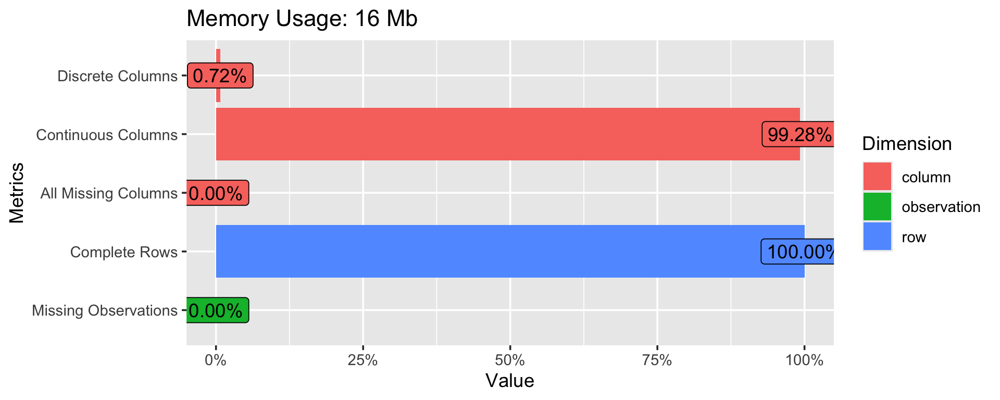
plot_missing(
analysis_state$measurements_wide,
geom_label_args = list(
size = 2.5,
label.padding = grid::unit(0.01, "lines"),
hjust = -0.1,
label.size = 0
)
)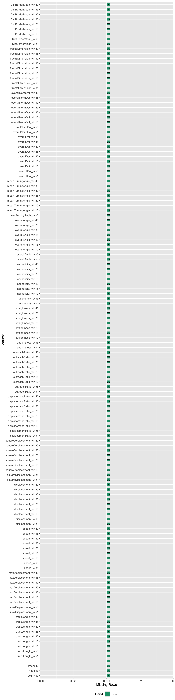
The central statistical issue is that these rows are repeated measurements from the same tracked cells.
node_id contributes many rows over time.So we need a model that can do two things simultaneously:
If we ignored that structure and used an ordinary linear model treating every row as independent:
That is exactly what the mixed-effects model protects us from.
For each feature column in the wide table, the refactor fits:
response_value ~ cell_type * ns(timepoint, 5) + (1 + timepoint || node_id)How to explain each term:
response_value: the current behavioral feature,
standardized to mean 0 and variance 1.cell_type: tests the baseline difference between ET and
the CM reference group.ns(timepoint, 5): allows a smooth but non-linear time
effect with 5 spline basis functions.cell_type * ns(timepoint, 5): asks whether the time
trajectory differs between cell types.(1 + timepoint || node_id): gives each tracked cell its
own intercept and time slope, with uncorrelated random effects.At a high level, the model splits the story into two layers:
set.seed(42)
toy_cells <- paste0("Cell_", seq_len(10))
toy_time <- rep(seq(0, 9), times = length(toy_cells))
toy_group <- rep(rep(c("CM", "ET"), each = 5), each = 10)
toy_cell <- rep(toy_cells, each = 10)
random_intercept <- rep(rnorm(length(toy_cells), sd = 0.7), each = 10)
random_slope <- rep(rnorm(length(toy_cells), sd = 0.12), each = 10)
group_shift <- ifelse(toy_group == "ET", 0.7, 0)
toy_df <- data.frame(
cell = toy_cell,
cell_type = toy_group,
timepoint = toy_time
) |>
dplyr::mutate(
response = 2 + 0.18 * timepoint - 0.02 * timepoint^2 + group_shift +
random_intercept + random_slope * timepoint + rnorm(dplyr::n(), sd = 0.18)
)
toy_mean <- toy_df |>
dplyr::group_by(cell_type, timepoint) |>
dplyr::summarise(response = mean(response), .groups = "drop")
ggplot(toy_df, aes(timepoint, response, group = cell, color = cell_type)) +
geom_line(alpha = 0.35, linewidth = 0.5) +
geom_point(alpha = 0.3, size = 0.8) +
geom_line(data = toy_mean, aes(group = cell_type), linewidth = 1.4) +
facet_wrap(~ cell_type) +
theme_bw() +
labs(
title = "Toy example: individual cells fluctuate around a group-average trajectory",
subtitle = "Thin lines are individual cells; thick lines are the average pattern the fixed effects try to capture",
x = "Timepoint",
y = "Example feature value"
)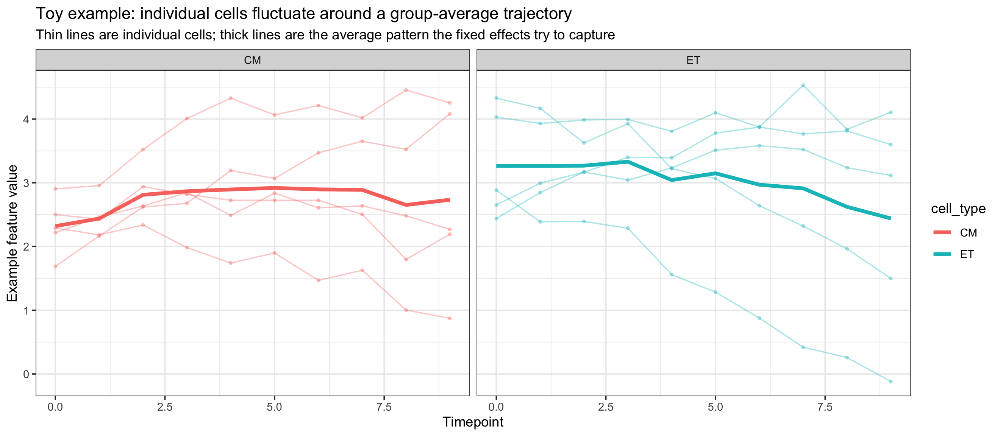
How to explain this figure:
schematic_df <- tibble::tribble(
~component, ~x, ~y, ~label,
"Observed rows", 1.1, 3.0, "Observed repeated rows\n(cell-timepoint measurements)",
"Fixed effects", 4.0, 4.0, "Fixed effects\naverage CM baseline\naverage ET-CM contrast\naverage time trend",
"Random effects", 4.0, 2.0, "Random effects by node_id\ncell-specific intercept\ncell-specific slope",
"Inference", 7.2, 3.0, "Model output\ncoefficients\nconfidence intervals\np-values"
)
arrow_df <- tibble::tribble(
~x, ~y, ~xend, ~yend,
2.0, 3.0, 3.2, 3.8,
2.0, 3.0, 3.2, 2.2,
4.9, 4.0, 6.5, 3.2,
4.9, 2.0, 6.5, 2.8
)
ggplot() +
geom_curve(
data = arrow_df,
aes(x = x, y = y, xend = xend, yend = yend),
curvature = 0.08,
linewidth = 0.6,
color = "grey35",
arrow = grid::arrow(length = grid::unit(0.18, "cm"))
) +
geom_label(
data = schematic_df,
aes(x = x, y = y, label = label, fill = component),
label.size = 0.25,
size = 4,
label.padding = grid::unit(0.3, "lines"),
color = "black"
) +
scale_fill_manual(
values = c(
"Observed rows" = "#d9ead3",
"Fixed effects" = "#f9d5a7",
"Random effects" = "#cfe2f3",
"Inference" = "#ead1dc"
)
) +
coord_cartesian(xlim = c(0, 8.2), ylim = c(1.1, 4.9), clip = "off") +
theme_void() +
theme(legend.position = "none") +
labs(title = "Conceptual anatomy of the mixed-effects model")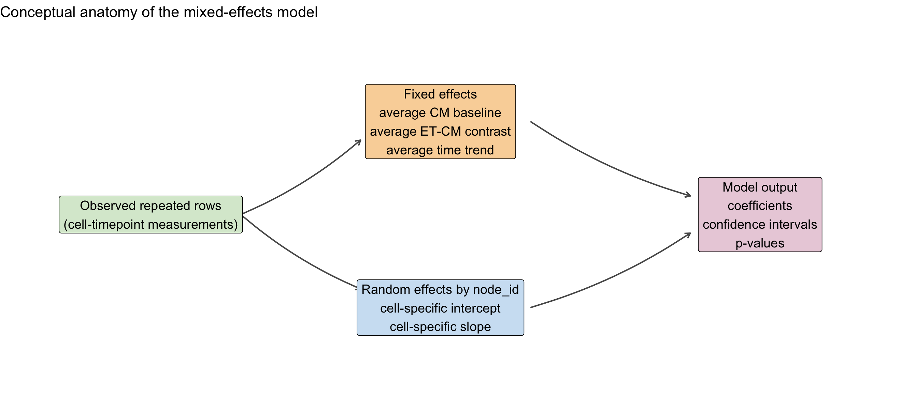
This is the punchline:
The original notebook already recognized that many behavioral features change non-linearly across time. A spline is a smooth, flexible way to model that curve without forcing one single straight line.
toy_time_df <- data.frame(timepoint = seq(0, 100, by = 1))
spline_basis <- as.data.frame(splines::ns(toy_time_df$timepoint, df = 5))
names(spline_basis) <- paste0("Basis_", seq_len(ncol(spline_basis)))
spline_plot_df <- cbind(toy_time_df, spline_basis) |>
tidyr::pivot_longer(
cols = starts_with("Basis_"),
names_to = "basis",
values_to = "value"
)
ggplot(spline_plot_df, aes(timepoint, value, color = basis)) +
geom_line(linewidth = 1) +
theme_bw() +
labs(
title = "Natural spline basis functions for time",
subtitle = "The model combines these basis functions to represent a curved time trajectory",
x = "Timepoint",
y = "Basis value",
color = "Spline basis"
)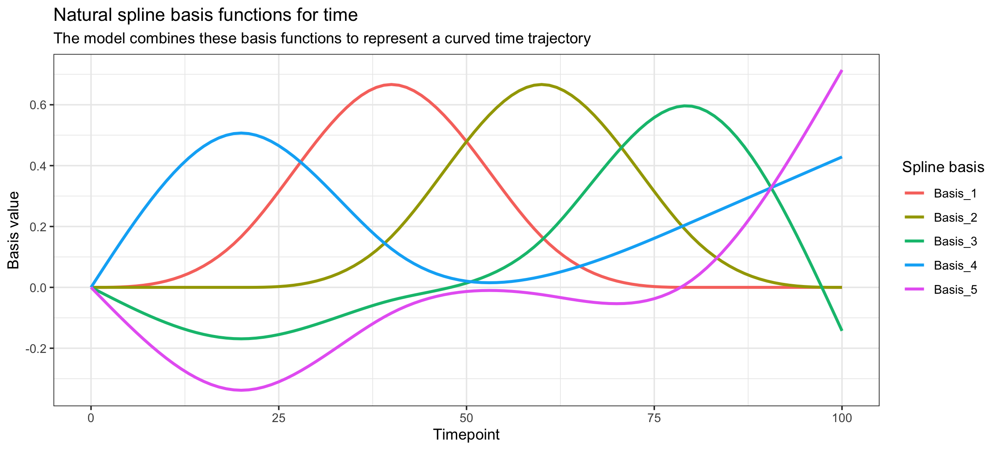
The important interpretation is:
cell_type asks whether ET
bends differently over time than CM.The safest short explanations are:
cell_typeET: ET-vs-CM difference near the reference end
of the modeled time axis.cell_typeET:ns(timepoint, 5)k: part of the ET-vs-CM
difference in how the trajectory changes shape over time.Two cautions matter in a review:
These behavioral features live on very different scales:
Standardizing each feature before fitting helps because:
scrollable_kable(
analysis_state$model_results,
caption = "Mixed-model results",
digits = 4
)| Param | Effect | Nobs | Nsamp | Coef | CI_low | CI_upp | pval | Model | pval.adj |
|---|---|---|---|---|---|---|---|---|---|
| trackLength_win1 | cell_typeET | 41464 | 173 | -0.0603 | -0.1641 | 0.0435 | 0.2553 | lmer | 1.0000 |
| trackLength_win1 | cell_typeET:ns(timepoint, 5)1 | 41464 | 173 | -0.0624 | -0.1800 | 0.0553 | 0.2990 | lmer | 1.0000 |
| trackLength_win1 | cell_typeET:ns(timepoint, 5)2 | 41464 | 173 | 0.6175 | 0.4193 | 0.8158 | 0.0000 | lmer | 0.0000 |
| trackLength_win1 | cell_typeET:ns(timepoint, 5)3 | 41464 | 173 | 0.7658 | 0.5734 | 0.9581 | 0.0000 | lmer | 0.0000 |
| trackLength_win1 | cell_typeET:ns(timepoint, 5)4 | 41464 | 173 | 0.4259 | 0.1564 | 0.6954 | 0.0020 | lmer | 1.0000 |
| trackLength_win1 | cell_typeET:ns(timepoint, 5)5 | 41464 | 173 | 0.1470 | -0.0278 | 0.3219 | 0.1019 | lmer | 1.0000 |
| trackLength_win5 | cell_typeET | 40773 | 171 | -0.1689 | -0.3598 | 0.0220 | 0.0847 | lmer | 1.0000 |
| trackLength_win5 | cell_typeET:ns(timepoint, 5)1 | 40773 | 171 | -0.1136 | -0.3638 | 0.1367 | 0.3755 | lmer | 1.0000 |
| trackLength_win5 | cell_typeET:ns(timepoint, 5)2 | 40773 | 171 | 0.9404 | 0.5344 | 1.3464 | 0.0000 | lmer | 0.0173 |
| trackLength_win5 | cell_typeET:ns(timepoint, 5)3 | 40773 | 171 | 1.4087 | 1.0632 | 1.7543 | 0.0000 | lmer | 0.0000 |
| trackLength_win5 | cell_typeET:ns(timepoint, 5)4 | 40773 | 171 | 0.8279 | 0.3127 | 1.3432 | 0.0020 | lmer | 1.0000 |
| trackLength_win5 | cell_typeET:ns(timepoint, 5)5 | 40773 | 171 | 0.2098 | -0.1442 | 0.5638 | 0.2481 | lmer | 1.0000 |
| trackLength_win10 | cell_typeET | 39920 | 170 | -0.2764 | -0.5104 | -0.0423 | 0.0219 | lmer | 1.0000 |
| trackLength_win10 | cell_typeET:ns(timepoint, 5)1 | 39920 | 170 | -0.1360 | -0.4518 | 0.1798 | 0.4007 | lmer | 1.0000 |
| trackLength_win10 | cell_typeET:ns(timepoint, 5)2 | 39920 | 170 | 1.2622 | 0.6814 | 1.8429 | 0.0001 | lmer | 0.0579 |
| trackLength_win10 | cell_typeET:ns(timepoint, 5)3 | 39920 | 170 | 1.7073 | 1.2606 | 2.1539 | 0.0000 | lmer | 0.0000 |
| trackLength_win10 | cell_typeET:ns(timepoint, 5)4 | 39920 | 170 | 1.1242 | 0.4835 | 1.7648 | 0.0008 | lmer | 0.7695 |
| trackLength_win10 | cell_typeET:ns(timepoint, 5)5 | 39920 | 170 | 0.2552 | -0.2114 | 0.7219 | 0.2862 | lmer | 1.0000 |
| trackLength_win15 | cell_typeET | 39070 | 170 | -0.3451 | -0.5921 | -0.0981 | 0.0068 | lmer | 1.0000 |
| trackLength_win15 | cell_typeET:ns(timepoint, 5)1 | 39070 | 170 | -0.1554 | -0.5102 | 0.1993 | 0.3930 | lmer | 1.0000 |
| trackLength_win15 | cell_typeET:ns(timepoint, 5)2 | 39070 | 170 | 1.5485 | 0.8695 | 2.2276 | 0.0000 | lmer | 0.0296 |
| trackLength_win15 | cell_typeET:ns(timepoint, 5)3 | 39070 | 170 | 1.8457 | 1.3331 | 2.3583 | 0.0000 | lmer | 0.0000 |
| trackLength_win15 | cell_typeET:ns(timepoint, 5)4 | 39070 | 170 | 1.3224 | 0.6278 | 2.0170 | 0.0003 | lmer | 0.2891 |
| trackLength_win15 | cell_typeET:ns(timepoint, 5)5 | 39070 | 170 | 0.3368 | -0.2034 | 0.8771 | 0.2244 | lmer | 1.0000 |
| trackLength_win20 | cell_typeET | 38222 | 169 | -0.3829 | -0.6386 | -0.1272 | 0.0038 | lmer | 1.0000 |
| trackLength_win20 | cell_typeET:ns(timepoint, 5)1 | 38222 | 169 | -0.1831 | -0.6017 | 0.2356 | 0.3948 | lmer | 1.0000 |
| trackLength_win20 | cell_typeET:ns(timepoint, 5)2 | 38222 | 169 | 1.6741 | 0.9365 | 2.4116 | 0.0000 | lmer | 0.0329 |
| trackLength_win20 | cell_typeET:ns(timepoint, 5)3 | 38222 | 169 | 1.9579 | 1.4115 | 2.5044 | 0.0000 | lmer | 0.0000 |
| trackLength_win20 | cell_typeET:ns(timepoint, 5)4 | 38222 | 169 | 1.4884 | 0.7532 | 2.2236 | 0.0001 | lmer | 0.1309 |
| trackLength_win20 | cell_typeET:ns(timepoint, 5)5 | 38222 | 169 | 0.4150 | -0.1709 | 1.0009 | 0.1680 | lmer | 1.0000 |
| trackLength_win25 | cell_typeET | 37381 | 167 | -0.3872 | -0.6537 | -0.1208 | 0.0050 | lmer | 1.0000 |
| trackLength_win25 | cell_typeET:ns(timepoint, 5)1 | 37381 | 167 | -0.2279 | -0.7231 | 0.2673 | 0.3711 | lmer | 1.0000 |
| trackLength_win25 | cell_typeET:ns(timepoint, 5)2 | 37381 | 167 | 1.6273 | 0.9206 | 2.3339 | 0.0000 | lmer | 0.0231 |
| trackLength_win25 | cell_typeET:ns(timepoint, 5)3 | 37381 | 167 | 2.0368 | 1.4669 | 2.6066 | 0.0000 | lmer | 0.0000 |
| trackLength_win25 | cell_typeET:ns(timepoint, 5)4 | 37381 | 167 | 1.6124 | 0.8375 | 2.3873 | 0.0001 | lmer | 0.0945 |
| trackLength_win25 | cell_typeET:ns(timepoint, 5)5 | 37381 | 167 | 0.5113 | -0.1060 | 1.1286 | 0.1079 | lmer | 1.0000 |
| trackLength_win30 | cell_typeET | 36549 | 166 | -0.4132 | -0.6802 | -0.1462 | 0.0028 | lmer | 1.0000 |
| trackLength_win30 | cell_typeET:ns(timepoint, 5)1 | 36549 | 166 | -0.2703 | -0.8599 | 0.3193 | 0.3728 | lmer | 1.0000 |
| trackLength_win30 | cell_typeET:ns(timepoint, 5)2 | 36549 | 166 | 1.6769 | 1.0086 | 2.3451 | 0.0000 | lmer | 0.0042 |
| trackLength_win30 | cell_typeET:ns(timepoint, 5)3 | 36549 | 166 | 2.0725 | 1.4802 | 2.6648 | 0.0000 | lmer | 0.0000 |
| trackLength_win30 | cell_typeET:ns(timepoint, 5)4 | 36549 | 166 | 1.7800 | 1.0082 | 2.5518 | 0.0000 | lmer | 0.0214 |
| trackLength_win30 | cell_typeET:ns(timepoint, 5)5 | 36549 | 166 | 0.6428 | 0.0098 | 1.2758 | 0.0499 | lmer | 1.0000 |
| trackLength_win35 | cell_typeET | 35726 | 164 | -0.4261 | -0.7010 | -0.1513 | 0.0028 | lmer | 1.0000 |
| trackLength_win35 | cell_typeET:ns(timepoint, 5)1 | 35726 | 164 | -0.2367 | -0.8759 | 0.4025 | 0.4711 | lmer | 1.0000 |
| trackLength_win35 | cell_typeET:ns(timepoint, 5)2 | 35726 | 164 | 1.6889 | 1.0417 | 2.3361 | 0.0000 | lmer | 0.0015 |
| trackLength_win35 | cell_typeET:ns(timepoint, 5)3 | 35726 | 164 | 2.1274 | 1.4989 | 2.7559 | 0.0000 | lmer | 0.0000 |
| trackLength_win35 | cell_typeET:ns(timepoint, 5)4 | 35726 | 164 | 1.8148 | 1.0796 | 2.5501 | 0.0000 | lmer | 0.0048 |
| trackLength_win35 | cell_typeET:ns(timepoint, 5)5 | 35726 | 164 | 0.7325 | 0.1088 | 1.3563 | 0.0238 | lmer | 1.0000 |
| trackLength_win40 | cell_typeET | 34910 | 163 | -0.4517 | -0.7325 | -0.1709 | 0.0019 | lmer | 1.0000 |
| trackLength_win40 | cell_typeET:ns(timepoint, 5)1 | 34910 | 163 | -0.2147 | -0.9565 | 0.5272 | 0.5727 | lmer | 1.0000 |
| trackLength_win40 | cell_typeET:ns(timepoint, 5)2 | 34910 | 163 | 1.6978 | 1.0572 | 2.3383 | 0.0000 | lmer | 0.0010 |
| trackLength_win40 | cell_typeET:ns(timepoint, 5)3 | 34910 | 163 | 2.1516 | 1.4957 | 2.8074 | 0.0000 | lmer | 0.0000 |
| trackLength_win40 | cell_typeET:ns(timepoint, 5)4 | 34910 | 163 | 1.8312 | 1.1142 | 2.5483 | 0.0000 | lmer | 0.0024 |
| trackLength_win40 | cell_typeET:ns(timepoint, 5)5 | 34910 | 163 | 0.7691 | 0.1799 | 1.3583 | 0.0121 | lmer | 1.0000 |
| trackLength_win45 | cell_typeET | 34097 | 162 | -0.4456 | -0.7310 | -0.1601 | 0.0026 | lmer | 1.0000 |
| trackLength_win45 | cell_typeET:ns(timepoint, 5)1 | 34097 | 162 | -0.1185 | -1.0256 | 0.7886 | 0.7988 | lmer | 1.0000 |
| trackLength_win45 | cell_typeET:ns(timepoint, 5)2 | 34097 | 162 | 1.6745 | 1.0385 | 2.3104 | 0.0000 | lmer | 0.0012 |
| trackLength_win45 | cell_typeET:ns(timepoint, 5)3 | 34097 | 162 | 2.1439 | 1.4621 | 2.8256 | 0.0000 | lmer | 0.0000 |
| trackLength_win45 | cell_typeET:ns(timepoint, 5)4 | 34097 | 162 | 1.8486 | 1.1398 | 2.5574 | 0.0000 | lmer | 0.0019 |
| trackLength_win45 | cell_typeET:ns(timepoint, 5)5 | 34097 | 162 | 0.8122 | 0.2377 | 1.3867 | 0.0067 | lmer | 1.0000 |
| trackLength_win50 | cell_typeET | 33300 | 158 | -0.4006 | -0.6853 | -0.1159 | 0.0065 | lmer | 1.0000 |
| trackLength_win50 | cell_typeET:ns(timepoint, 5)1 | 33300 | 158 | 0.0248 | -0.8013 | 0.8510 | 0.9533 | lmer | 1.0000 |
| trackLength_win50 | cell_typeET:ns(timepoint, 5)2 | 33300 | 158 | 1.5391 | 0.9056 | 2.1726 | 0.0000 | lmer | 0.0067 |
| trackLength_win50 | cell_typeET:ns(timepoint, 5)3 | 33300 | 158 | 2.1503 | 1.4466 | 2.8540 | 0.0000 | lmer | 0.0000 |
| trackLength_win50 | cell_typeET:ns(timepoint, 5)4 | 33300 | 158 | 1.7717 | 1.0812 | 2.4623 | 0.0000 | lmer | 0.0025 |
| trackLength_win50 | cell_typeET:ns(timepoint, 5)5 | 33300 | 158 | 0.8801 | 0.3171 | 1.4430 | 0.0028 | lmer | 1.0000 |
| trackLength_win60 | cell_typeET | 31735 | 155 | -0.3714 | -0.6344 | -0.1083 | 0.0064 | lmer | 1.0000 |
| trackLength_win60 | cell_typeET:ns(timepoint, 5)1 | 31735 | 155 | 0.0573 | -0.2804 | 0.3949 | 0.7406 | lmer | 1.0000 |
| trackLength_win60 | cell_typeET:ns(timepoint, 5)2 | 31735 | 155 | 1.3685 | 0.7621 | 1.9750 | 0.0000 | lmer | 0.0295 |
| trackLength_win60 | cell_typeET:ns(timepoint, 5)3 | 31735 | 155 | 2.1727 | 1.4814 | 2.8639 | 0.0000 | lmer | 0.0000 |
| trackLength_win60 | cell_typeET:ns(timepoint, 5)4 | 31735 | 155 | 1.7792 | 1.1488 | 2.4096 | 0.0000 | lmer | 0.0002 |
| trackLength_win60 | cell_typeET:ns(timepoint, 5)5 | 31735 | 155 | 1.1047 | 0.6097 | 1.5998 | 0.0000 | lmer | 0.0324 |
| trackLength_win70 | cell_typeET | 30192 | 153 | -0.3666 | -0.6117 | -0.1216 | 0.0039 | lmer | 1.0000 |
| trackLength_win70 | cell_typeET:ns(timepoint, 5)1 | 30192 | 153 | 0.1159 | -0.1763 | 0.4081 | 0.4386 | lmer | 1.0000 |
| trackLength_win70 | cell_typeET:ns(timepoint, 5)2 | 30192 | 153 | 1.2997 | 0.7789 | 1.8205 | 0.0000 | lmer | 0.0044 |
| trackLength_win70 | cell_typeET:ns(timepoint, 5)3 | 30192 | 153 | 2.1880 | 1.6047 | 2.7713 | 0.0000 | lmer | 0.0000 |
| trackLength_win70 | cell_typeET:ns(timepoint, 5)4 | 30192 | 153 | 1.9971 | 1.4328 | 2.5615 | 0.0000 | lmer | 0.0000 |
| trackLength_win70 | cell_typeET:ns(timepoint, 5)5 | 30192 | 153 | 1.3018 | 0.8807 | 1.7229 | 0.0000 | lmer | 0.0000 |
| trackLength_win80 | cell_typeET | 28665 | 152 | -0.2789 | -0.5134 | -0.0443 | 0.0212 | lmer | 1.0000 |
| trackLength_win80 | cell_typeET:ns(timepoint, 5)1 | 28665 | 152 | 0.1382 | -0.1646 | 0.4410 | 0.3733 | lmer | 1.0000 |
| trackLength_win80 | cell_typeET:ns(timepoint, 5)2 | 28665 | 152 | 1.2362 | 0.7665 | 1.7059 | 0.0000 | lmer | 0.0014 |
| trackLength_win80 | cell_typeET:ns(timepoint, 5)3 | 28665 | 152 | 2.1230 | 1.6128 | 2.6331 | 0.0000 | lmer | 0.0000 |
| trackLength_win80 | cell_typeET:ns(timepoint, 5)4 | 28665 | 152 | 1.9696 | 1.4736 | 2.4657 | 0.0000 | lmer | 0.0000 |
| trackLength_win80 | cell_typeET:ns(timepoint, 5)5 | 28665 | 152 | 1.3936 | 1.0331 | 1.7542 | 0.0000 | lmer | 0.0000 |
| trackLength_win90 | cell_typeET | 27187 | 144 | -0.2127 | -0.4469 | 0.0216 | 0.0776 | lmer | 1.0000 |
| trackLength_win90 | cell_typeET:ns(timepoint, 5)1 | 27187 | 144 | 0.2134 | -0.1565 | 0.5833 | 0.2620 | lmer | 1.0000 |
| trackLength_win90 | cell_typeET:ns(timepoint, 5)2 | 27187 | 144 | 1.2694 | 0.8452 | 1.6937 | 0.0000 | lmer | 0.0001 |
| trackLength_win90 | cell_typeET:ns(timepoint, 5)3 | 27187 | 144 | 2.0279 | 1.5625 | 2.4934 | 0.0000 | lmer | 0.0000 |
| trackLength_win90 | cell_typeET:ns(timepoint, 5)4 | 27187 | 144 | 1.9175 | 1.4672 | 2.3678 | 0.0000 | lmer | 0.0000 |
| trackLength_win90 | cell_typeET:ns(timepoint, 5)5 | 27187 | 144 | 1.5212 | 1.1599 | 1.8825 | 0.0000 | lmer | 0.0000 |
| trackLength_win100 | cell_typeET | 25747 | 141 | -0.1775 | -0.4111 | 0.0561 | 0.1392 | lmer | 1.0000 |
| trackLength_win100 | cell_typeET:ns(timepoint, 5)1 | 25747 | 141 | 0.1735 | -0.2216 | 0.5686 | 0.3929 | lmer | 1.0000 |
| trackLength_win100 | cell_typeET:ns(timepoint, 5)2 | 25747 | 141 | 1.2926 | 0.8884 | 1.6968 | 0.0000 | lmer | 0.0000 |
| trackLength_win100 | cell_typeET:ns(timepoint, 5)3 | 25747 | 141 | 2.0242 | 1.5723 | 2.4760 | 0.0000 | lmer | 0.0000 |
| trackLength_win100 | cell_typeET:ns(timepoint, 5)4 | 25747 | 141 | 1.9389 | 1.5160 | 2.3619 | 0.0000 | lmer | 0.0000 |
| trackLength_win100 | cell_typeET:ns(timepoint, 5)5 | 25747 | 141 | 1.6169 | 1.2231 | 2.0108 | 0.0000 | lmer | 0.0000 |
| maxDisplacement_win1 | cell_typeET | 41464 | 173 | -0.0603 | -0.1641 | 0.0435 | 0.2553 | lmer | 1.0000 |
| maxDisplacement_win1 | cell_typeET:ns(timepoint, 5)1 | 41464 | 173 | -0.0624 | -0.1800 | 0.0553 | 0.2990 | lmer | 1.0000 |
| maxDisplacement_win1 | cell_typeET:ns(timepoint, 5)2 | 41464 | 173 | 0.6175 | 0.4193 | 0.8158 | 0.0000 | lmer | 0.0000 |
| maxDisplacement_win1 | cell_typeET:ns(timepoint, 5)3 | 41464 | 173 | 0.7658 | 0.5734 | 0.9581 | 0.0000 | lmer | 0.0000 |
| maxDisplacement_win1 | cell_typeET:ns(timepoint, 5)4 | 41464 | 173 | 0.4259 | 0.1564 | 0.6954 | 0.0020 | lmer | 1.0000 |
| maxDisplacement_win1 | cell_typeET:ns(timepoint, 5)5 | 41464 | 173 | 0.1470 | -0.0278 | 0.3219 | 0.1019 | lmer | 1.0000 |
| maxDisplacement_win5 | cell_typeET | 40773 | 171 | -0.0359 | -0.2016 | 0.1298 | 0.6717 | lmer | 1.0000 |
| maxDisplacement_win5 | cell_typeET:ns(timepoint, 5)1 | 40773 | 171 | -0.0817 | -0.3036 | 0.1402 | 0.4718 | lmer | 1.0000 |
| maxDisplacement_win5 | cell_typeET:ns(timepoint, 5)2 | 40773 | 171 | 0.5371 | 0.1748 | 0.8994 | 0.0044 | lmer | 1.0000 |
| maxDisplacement_win5 | cell_typeET:ns(timepoint, 5)3 | 40773 | 171 | 1.2192 | 0.8985 | 1.5399 | 0.0000 | lmer | 0.0000 |
| maxDisplacement_win5 | cell_typeET:ns(timepoint, 5)4 | 40773 | 171 | 0.5304 | 0.0755 | 0.9852 | 0.0236 | lmer | 1.0000 |
| maxDisplacement_win5 | cell_typeET:ns(timepoint, 5)5 | 40773 | 171 | 0.0533 | -0.2367 | 0.3433 | 0.7194 | lmer | 1.0000 |
| maxDisplacement_win10 | cell_typeET | 39920 | 170 | -0.2589 | -0.4742 | -0.0436 | 0.0196 | lmer | 1.0000 |
| maxDisplacement_win10 | cell_typeET:ns(timepoint, 5)1 | 39920 | 170 | 0.0579 | -0.2283 | 0.3440 | 0.6926 | lmer | 1.0000 |
| maxDisplacement_win10 | cell_typeET:ns(timepoint, 5)2 | 39920 | 170 | 0.7275 | 0.1942 | 1.2609 | 0.0090 | lmer | 1.0000 |
| maxDisplacement_win10 | cell_typeET:ns(timepoint, 5)3 | 39920 | 170 | 1.4254 | 1.0058 | 1.8449 | 0.0000 | lmer | 0.0000 |
| maxDisplacement_win10 | cell_typeET:ns(timepoint, 5)4 | 39920 | 170 | 1.0918 | 0.4859 | 1.6978 | 0.0005 | lmer | 0.5599 |
| maxDisplacement_win10 | cell_typeET:ns(timepoint, 5)5 | 39920 | 170 | 0.1011 | -0.2724 | 0.4746 | 0.5968 | lmer | 1.0000 |
| maxDisplacement_win15 | cell_typeET | 39070 | 170 | -0.3774 | -0.6227 | -0.1322 | 0.0030 | lmer | 1.0000 |
| maxDisplacement_win15 | cell_typeET:ns(timepoint, 5)1 | 39070 | 170 | 0.0886 | -0.2408 | 0.4181 | 0.5991 | lmer | 1.0000 |
| maxDisplacement_win15 | cell_typeET:ns(timepoint, 5)2 | 39070 | 170 | 0.8917 | 0.2483 | 1.5350 | 0.0081 | lmer | 1.0000 |
| maxDisplacement_win15 | cell_typeET:ns(timepoint, 5)3 | 39070 | 170 | 1.4363 | 0.9471 | 1.9254 | 0.0000 | lmer | 0.0001 |
| maxDisplacement_win15 | cell_typeET:ns(timepoint, 5)4 | 39070 | 170 | 1.3445 | 0.6534 | 2.0356 | 0.0002 | lmer | 0.2124 |
| maxDisplacement_win15 | cell_typeET:ns(timepoint, 5)5 | 39070 | 170 | 0.2461 | -0.1797 | 0.6718 | 0.2598 | lmer | 1.0000 |
| maxDisplacement_win20 | cell_typeET | 38222 | 169 | -0.3533 | -0.6122 | -0.0944 | 0.0082 | lmer | 1.0000 |
| maxDisplacement_win20 | cell_typeET:ns(timepoint, 5)1 | 38222 | 169 | 0.0248 | -0.3543 | 0.4039 | 0.8984 | lmer | 1.0000 |
| maxDisplacement_win20 | cell_typeET:ns(timepoint, 5)2 | 38222 | 169 | 0.8871 | 0.1280 | 1.6462 | 0.0252 | lmer | 1.0000 |
| maxDisplacement_win20 | cell_typeET:ns(timepoint, 5)3 | 38222 | 169 | 1.3912 | 0.8588 | 1.9236 | 0.0000 | lmer | 0.0016 |
| maxDisplacement_win20 | cell_typeET:ns(timepoint, 5)4 | 38222 | 169 | 1.2692 | 0.5241 | 2.0144 | 0.0011 | lmer | 1.0000 |
| maxDisplacement_win20 | cell_typeET:ns(timepoint, 5)5 | 38222 | 169 | 0.3335 | -0.1148 | 0.7818 | 0.1478 | lmer | 1.0000 |
| maxDisplacement_win25 | cell_typeET | 37381 | 167 | -0.2441 | -0.5134 | 0.0253 | 0.0776 | lmer | 1.0000 |
| maxDisplacement_win25 | cell_typeET:ns(timepoint, 5)1 | 37381 | 167 | -0.1182 | -0.6152 | 0.3788 | 0.6430 | lmer | 1.0000 |
| maxDisplacement_win25 | cell_typeET:ns(timepoint, 5)2 | 37381 | 167 | 0.7481 | -0.1027 | 1.5988 | 0.0902 | lmer | 1.0000 |
| maxDisplacement_win25 | cell_typeET:ns(timepoint, 5)3 | 37381 | 167 | 1.2886 | 0.7074 | 1.8697 | 0.0000 | lmer | 0.0401 |
| maxDisplacement_win25 | cell_typeET:ns(timepoint, 5)4 | 37381 | 167 | 1.0324 | 0.2406 | 1.8242 | 0.0118 | lmer | 1.0000 |
| maxDisplacement_win25 | cell_typeET:ns(timepoint, 5)5 | 37381 | 167 | 0.4262 | -0.0659 | 0.9183 | 0.0930 | lmer | 1.0000 |
| maxDisplacement_win30 | cell_typeET | 36549 | 166 | -0.1477 | -0.4287 | 0.1333 | 0.3044 | lmer | 1.0000 |
| maxDisplacement_win30 | cell_typeET:ns(timepoint, 5)1 | 36549 | 166 | -0.3233 | -0.9779 | 0.3313 | 0.3379 | lmer | 1.0000 |
| maxDisplacement_win30 | cell_typeET:ns(timepoint, 5)2 | 36549 | 166 | 0.7001 | -0.1368 | 1.5370 | 0.1058 | lmer | 1.0000 |
| maxDisplacement_win30 | cell_typeET:ns(timepoint, 5)3 | 36549 | 166 | 1.1497 | 0.5445 | 1.7549 | 0.0003 | lmer | 0.3582 |
| maxDisplacement_win30 | cell_typeET:ns(timepoint, 5)4 | 36549 | 166 | 0.9119 | 0.1237 | 1.7002 | 0.0250 | lmer | 1.0000 |
| maxDisplacement_win30 | cell_typeET:ns(timepoint, 5)5 | 36549 | 166 | 0.5619 | 0.0451 | 1.0787 | 0.0359 | lmer | 1.0000 |
| maxDisplacement_win35 | cell_typeET | 35726 | 164 | -0.1128 | -0.4041 | 0.1786 | 0.4493 | lmer | 1.0000 |
| maxDisplacement_win35 | cell_typeET:ns(timepoint, 5)1 | 35726 | 164 | -0.4328 | -1.1865 | 0.3210 | 0.2659 | lmer | 1.0000 |
| maxDisplacement_win35 | cell_typeET:ns(timepoint, 5)2 | 35726 | 164 | 0.7809 | -0.0443 | 1.6062 | 0.0671 | lmer | 1.0000 |
| maxDisplacement_win35 | cell_typeET:ns(timepoint, 5)3 | 35726 | 164 | 1.0127 | 0.3856 | 1.6398 | 0.0022 | lmer | 1.0000 |
| maxDisplacement_win35 | cell_typeET:ns(timepoint, 5)4 | 35726 | 164 | 0.8643 | 0.0802 | 1.6484 | 0.0325 | lmer | 1.0000 |
| maxDisplacement_win35 | cell_typeET:ns(timepoint, 5)5 | 35726 | 164 | 0.7026 | 0.1656 | 1.2397 | 0.0120 | lmer | 1.0000 |
| maxDisplacement_win40 | cell_typeET | 34910 | 163 | -0.0840 | -0.3836 | 0.2156 | 0.5835 | lmer | 1.0000 |
| maxDisplacement_win40 | cell_typeET:ns(timepoint, 5)1 | 34910 | 163 | -0.4862 | -1.3556 | 0.3833 | 0.2786 | lmer | 1.0000 |
| maxDisplacement_win40 | cell_typeET:ns(timepoint, 5)2 | 34910 | 163 | 0.7986 | -0.0133 | 1.6104 | 0.0569 | lmer | 1.0000 |
| maxDisplacement_win40 | cell_typeET:ns(timepoint, 5)3 | 34910 | 163 | 0.9091 | 0.2489 | 1.5694 | 0.0085 | lmer | 1.0000 |
| maxDisplacement_win40 | cell_typeET:ns(timepoint, 5)4 | 34910 | 163 | 0.7878 | -0.0145 | 1.5901 | 0.0564 | lmer | 1.0000 |
| maxDisplacement_win40 | cell_typeET:ns(timepoint, 5)5 | 34910 | 163 | 0.8118 | 0.2364 | 1.3873 | 0.0070 | lmer | 1.0000 |
| maxDisplacement_win45 | cell_typeET | 34097 | 162 | -0.0695 | -0.3791 | 0.2402 | 0.6607 | lmer | 1.0000 |
| maxDisplacement_win45 | cell_typeET:ns(timepoint, 5)1 | 34097 | 162 | -0.5860 | -1.7274 | 0.5554 | 0.3189 | lmer | 1.0000 |
| maxDisplacement_win45 | cell_typeET:ns(timepoint, 5)2 | 34097 | 162 | 0.7894 | -0.0252 | 1.6040 | 0.0604 | lmer | 1.0000 |
| maxDisplacement_win45 | cell_typeET:ns(timepoint, 5)3 | 34097 | 162 | 0.8025 | 0.0862 | 1.5189 | 0.0313 | lmer | 1.0000 |
| maxDisplacement_win45 | cell_typeET:ns(timepoint, 5)4 | 34097 | 162 | 0.7888 | -0.0416 | 1.6192 | 0.0652 | lmer | 1.0000 |
| maxDisplacement_win45 | cell_typeET:ns(timepoint, 5)5 | 34097 | 162 | 0.8767 | 0.2600 | 1.4935 | 0.0068 | lmer | 1.0000 |
| maxDisplacement_win50 | cell_typeET | 33300 | 158 | -0.0124 | -0.3221 | 0.2973 | 0.9377 | lmer | 1.0000 |
| maxDisplacement_win50 | cell_typeET:ns(timepoint, 5)1 | 33300 | 158 | -0.5572 | -1.9365 | 0.8222 | 0.4321 | lmer | 1.0000 |
| maxDisplacement_win50 | cell_typeET:ns(timepoint, 5)2 | 33300 | 158 | 0.5958 | -0.2067 | 1.3983 | 0.1487 | lmer | 1.0000 |
| maxDisplacement_win50 | cell_typeET:ns(timepoint, 5)3 | 33300 | 158 | 0.7560 | -0.0135 | 1.5256 | 0.0581 | lmer | 1.0000 |
| maxDisplacement_win50 | cell_typeET:ns(timepoint, 5)4 | 33300 | 158 | 0.6983 | -0.1229 | 1.5196 | 0.0986 | lmer | 1.0000 |
| maxDisplacement_win50 | cell_typeET:ns(timepoint, 5)5 | 33300 | 158 | 0.9792 | 0.3510 | 1.6073 | 0.0032 | lmer | 1.0000 |
| maxDisplacement_win60 | cell_typeET | 31735 | 155 | 0.1340 | -0.1647 | 0.4326 | 0.3807 | lmer | 1.0000 |
| maxDisplacement_win60 | cell_typeET:ns(timepoint, 5)1 | 31735 | 155 | -0.1607 | -1.0256 | 0.7042 | 0.7207 | lmer | 1.0000 |
| maxDisplacement_win60 | cell_typeET:ns(timepoint, 5)2 | 31735 | 155 | 0.1252 | -0.5827 | 0.8330 | 0.7296 | lmer | 1.0000 |
| maxDisplacement_win60 | cell_typeET:ns(timepoint, 5)3 | 31735 | 155 | 0.7295 | 0.0696 | 1.3895 | 0.0333 | lmer | 1.0000 |
| maxDisplacement_win60 | cell_typeET:ns(timepoint, 5)4 | 31735 | 155 | 0.3618 | -0.3305 | 1.0541 | 0.3074 | lmer | 1.0000 |
| maxDisplacement_win60 | cell_typeET:ns(timepoint, 5)5 | 31735 | 155 | 1.2154 | 0.6924 | 1.7385 | 0.0000 | lmer | 0.0172 |
| maxDisplacement_win70 | cell_typeET | 30192 | 153 | 0.1945 | -0.0861 | 0.4752 | 0.1763 | lmer | 1.0000 |
| maxDisplacement_win70 | cell_typeET:ns(timepoint, 5)1 | 30192 | 153 | -0.0350 | -0.5383 | 0.4682 | 0.8918 | lmer | 1.0000 |
| maxDisplacement_win70 | cell_typeET:ns(timepoint, 5)2 | 30192 | 153 | -0.1873 | -0.8198 | 0.4451 | 0.5627 | lmer | 1.0000 |
| maxDisplacement_win70 | cell_typeET:ns(timepoint, 5)3 | 30192 | 153 | 0.6167 | 0.0612 | 1.1722 | 0.0319 | lmer | 1.0000 |
| maxDisplacement_win70 | cell_typeET:ns(timepoint, 5)4 | 30192 | 153 | 0.2898 | -0.3194 | 0.8989 | 0.3526 | lmer | 1.0000 |
| maxDisplacement_win70 | cell_typeET:ns(timepoint, 5)5 | 30192 | 153 | 1.4041 | 0.8975 | 1.9108 | 0.0000 | lmer | 0.0004 |
| maxDisplacement_win80 | cell_typeET | 28665 | 152 | 0.2903 | 0.0234 | 0.5571 | 0.0347 | lmer | 1.0000 |
| maxDisplacement_win80 | cell_typeET:ns(timepoint, 5)1 | 28665 | 152 | -0.0429 | -0.5554 | 0.4696 | 0.8701 | lmer | 1.0000 |
| maxDisplacement_win80 | cell_typeET:ns(timepoint, 5)2 | 28665 | 152 | -0.3103 | -0.8926 | 0.2721 | 0.2991 | lmer | 1.0000 |
| maxDisplacement_win80 | cell_typeET:ns(timepoint, 5)3 | 28665 | 152 | 0.5740 | 0.1337 | 1.0144 | 0.0118 | lmer | 1.0000 |
| maxDisplacement_win80 | cell_typeET:ns(timepoint, 5)4 | 28665 | 152 | 0.0528 | -0.5252 | 0.6309 | 0.8581 | lmer | 1.0000 |
| maxDisplacement_win80 | cell_typeET:ns(timepoint, 5)5 | 28665 | 152 | 1.3465 | 0.8416 | 1.8514 | 0.0000 | lmer | 0.0009 |
| maxDisplacement_win90 | cell_typeET | 27187 | 144 | 0.2320 | -0.0084 | 0.4724 | 0.0606 | lmer | 1.0000 |
| maxDisplacement_win90 | cell_typeET:ns(timepoint, 5)1 | 27187 | 144 | -0.2055 | -0.6977 | 0.2868 | 0.4155 | lmer | 1.0000 |
| maxDisplacement_win90 | cell_typeET:ns(timepoint, 5)2 | 27187 | 144 | -0.0031 | -0.4787 | 0.4726 | 0.9899 | lmer | 1.0000 |
| maxDisplacement_win90 | cell_typeET:ns(timepoint, 5)3 | 27187 | 144 | 0.5523 | 0.1565 | 0.9481 | 0.0072 | lmer | 1.0000 |
| maxDisplacement_win90 | cell_typeET:ns(timepoint, 5)4 | 27187 | 144 | 0.1107 | -0.4177 | 0.6391 | 0.6820 | lmer | 1.0000 |
| maxDisplacement_win90 | cell_typeET:ns(timepoint, 5)5 | 27187 | 144 | 1.3435 | 0.8734 | 1.8135 | 0.0000 | lmer | 0.0002 |
| maxDisplacement_win100 | cell_typeET | 25747 | 141 | 0.1382 | -0.0863 | 0.3627 | 0.2296 | lmer | 1.0000 |
| maxDisplacement_win100 | cell_typeET:ns(timepoint, 5)1 | 25747 | 141 | -0.2620 | -0.7534 | 0.2293 | 0.2989 | lmer | 1.0000 |
| maxDisplacement_win100 | cell_typeET:ns(timepoint, 5)2 | 25747 | 141 | 0.1903 | -0.2030 | 0.5835 | 0.3451 | lmer | 1.0000 |
| maxDisplacement_win100 | cell_typeET:ns(timepoint, 5)3 | 25747 | 141 | 0.6962 | 0.3159 | 1.0764 | 0.0005 | lmer | 0.4994 |
| maxDisplacement_win100 | cell_typeET:ns(timepoint, 5)4 | 25747 | 141 | 0.3939 | -0.0822 | 0.8700 | 0.1075 | lmer | 1.0000 |
| maxDisplacement_win100 | cell_typeET:ns(timepoint, 5)5 | 25747 | 141 | 1.3598 | 0.9184 | 1.8013 | 0.0000 | lmer | 0.0000 |
| speed_win1 | cell_typeET | 41464 | 173 | -0.0603 | -0.1641 | 0.0435 | 0.2553 | lmer | 1.0000 |
| speed_win1 | cell_typeET:ns(timepoint, 5)1 | 41464 | 173 | -0.0624 | -0.1800 | 0.0553 | 0.2990 | lmer | 1.0000 |
| speed_win1 | cell_typeET:ns(timepoint, 5)2 | 41464 | 173 | 0.6175 | 0.4193 | 0.8158 | 0.0000 | lmer | 0.0000 |
| speed_win1 | cell_typeET:ns(timepoint, 5)3 | 41464 | 173 | 0.7658 | 0.5734 | 0.9581 | 0.0000 | lmer | 0.0000 |
| speed_win1 | cell_typeET:ns(timepoint, 5)4 | 41464 | 173 | 0.4259 | 0.1564 | 0.6954 | 0.0020 | lmer | 1.0000 |
| speed_win1 | cell_typeET:ns(timepoint, 5)5 | 41464 | 173 | 0.1470 | -0.0278 | 0.3219 | 0.1019 | lmer | 1.0000 |
| speed_win5 | cell_typeET | 40773 | 171 | -0.1689 | -0.3598 | 0.0220 | 0.0847 | lmer | 1.0000 |
| speed_win5 | cell_typeET:ns(timepoint, 5)1 | 40773 | 171 | -0.1136 | -0.3638 | 0.1367 | 0.3756 | lmer | 1.0000 |
| speed_win5 | cell_typeET:ns(timepoint, 5)2 | 40773 | 171 | 0.9404 | 0.5344 | 1.3464 | 0.0000 | lmer | 0.0173 |
| speed_win5 | cell_typeET:ns(timepoint, 5)3 | 40773 | 171 | 1.4087 | 1.0632 | 1.7543 | 0.0000 | lmer | 0.0000 |
| speed_win5 | cell_typeET:ns(timepoint, 5)4 | 40773 | 171 | 0.8279 | 0.3126 | 1.3432 | 0.0020 | lmer | 1.0000 |
| speed_win5 | cell_typeET:ns(timepoint, 5)5 | 40773 | 171 | 0.2098 | -0.1442 | 0.5638 | 0.2481 | lmer | 1.0000 |
| speed_win10 | cell_typeET | 39920 | 170 | -0.2764 | -0.5104 | -0.0423 | 0.0219 | lmer | 1.0000 |
| speed_win10 | cell_typeET:ns(timepoint, 5)1 | 39920 | 170 | -0.1360 | -0.4519 | 0.1798 | 0.4007 | lmer | 1.0000 |
| speed_win10 | cell_typeET:ns(timepoint, 5)2 | 39920 | 170 | 1.2622 | 0.6814 | 1.8429 | 0.0001 | lmer | 0.0579 |
| speed_win10 | cell_typeET:ns(timepoint, 5)3 | 39920 | 170 | 1.7073 | 1.2606 | 2.1539 | 0.0000 | lmer | 0.0000 |
| speed_win10 | cell_typeET:ns(timepoint, 5)4 | 39920 | 170 | 1.1242 | 0.4835 | 1.7648 | 0.0008 | lmer | 0.7695 |
| speed_win10 | cell_typeET:ns(timepoint, 5)5 | 39920 | 170 | 0.2552 | -0.2115 | 0.7219 | 0.2862 | lmer | 1.0000 |
| speed_win15 | cell_typeET | 39070 | 170 | -0.3451 | -0.5921 | -0.0981 | 0.0068 | lmer | 1.0000 |
| speed_win15 | cell_typeET:ns(timepoint, 5)1 | 39070 | 170 | -0.1555 | -0.5102 | 0.1992 | 0.3929 | lmer | 1.0000 |
| speed_win15 | cell_typeET:ns(timepoint, 5)2 | 39070 | 170 | 1.5486 | 0.8696 | 2.2275 | 0.0000 | lmer | 0.0296 |
| speed_win15 | cell_typeET:ns(timepoint, 5)3 | 39070 | 170 | 1.8457 | 1.3331 | 2.3583 | 0.0000 | lmer | 0.0000 |
| speed_win15 | cell_typeET:ns(timepoint, 5)4 | 39070 | 170 | 1.3224 | 0.6277 | 2.0170 | 0.0003 | lmer | 0.2891 |
| speed_win15 | cell_typeET:ns(timepoint, 5)5 | 39070 | 170 | 0.3369 | -0.2033 | 0.8771 | 0.2242 | lmer | 1.0000 |
| speed_win20 | cell_typeET | 38222 | 169 | -0.3829 | -0.6387 | -0.1271 | 0.0038 | lmer | 1.0000 |
| speed_win20 | cell_typeET:ns(timepoint, 5)1 | 38222 | 169 | -0.1831 | -0.6018 | 0.2356 | 0.3948 | lmer | 1.0000 |
| speed_win20 | cell_typeET:ns(timepoint, 5)2 | 38222 | 169 | 1.6740 | 0.9366 | 2.4115 | 0.0000 | lmer | 0.0329 |
| speed_win20 | cell_typeET:ns(timepoint, 5)3 | 38222 | 169 | 1.9580 | 1.4115 | 2.5044 | 0.0000 | lmer | 0.0000 |
| speed_win20 | cell_typeET:ns(timepoint, 5)4 | 38222 | 169 | 1.4884 | 0.7532 | 2.2236 | 0.0001 | lmer | 0.1309 |
| speed_win20 | cell_typeET:ns(timepoint, 5)5 | 38222 | 169 | 0.4150 | -0.1709 | 1.0009 | 0.1680 | lmer | 1.0000 |
| speed_win25 | cell_typeET | 37381 | 167 | -0.3873 | -0.6537 | -0.1208 | 0.0050 | lmer | 1.0000 |
| speed_win25 | cell_typeET:ns(timepoint, 5)1 | 37381 | 167 | -0.2278 | -0.7227 | 0.2670 | 0.3709 | lmer | 1.0000 |
| speed_win25 | cell_typeET:ns(timepoint, 5)2 | 37381 | 167 | 1.6273 | 0.9204 | 2.3343 | 0.0000 | lmer | 0.0233 |
| speed_win25 | cell_typeET:ns(timepoint, 5)3 | 37381 | 167 | 2.0368 | 1.4669 | 2.6067 | 0.0000 | lmer | 0.0000 |
| speed_win25 | cell_typeET:ns(timepoint, 5)4 | 37381 | 167 | 1.6125 | 0.8374 | 2.3877 | 0.0001 | lmer | 0.0948 |
| speed_win25 | cell_typeET:ns(timepoint, 5)5 | 37381 | 167 | 0.5111 | -0.1059 | 1.1282 | 0.1078 | lmer | 1.0000 |
| speed_win30 | cell_typeET | 36549 | 166 | -0.4132 | -0.6802 | -0.1462 | 0.0028 | lmer | 1.0000 |
| speed_win30 | cell_typeET:ns(timepoint, 5)1 | 36549 | 166 | -0.2703 | -0.8598 | 0.3193 | 0.3727 | lmer | 1.0000 |
| speed_win30 | cell_typeET:ns(timepoint, 5)2 | 36549 | 166 | 1.6769 | 1.0086 | 2.3452 | 0.0000 | lmer | 0.0042 |
| speed_win30 | cell_typeET:ns(timepoint, 5)3 | 36549 | 166 | 2.0725 | 1.4802 | 2.6648 | 0.0000 | lmer | 0.0000 |
| speed_win30 | cell_typeET:ns(timepoint, 5)4 | 36549 | 166 | 1.7801 | 1.0083 | 2.5520 | 0.0000 | lmer | 0.0214 |
| speed_win30 | cell_typeET:ns(timepoint, 5)5 | 36549 | 166 | 0.6428 | 0.0097 | 1.2758 | 0.0500 | lmer | 1.0000 |
| speed_win35 | cell_typeET | 35726 | 164 | -0.4261 | -0.7010 | -0.1513 | 0.0028 | lmer | 1.0000 |
| speed_win35 | cell_typeET:ns(timepoint, 5)1 | 35726 | 164 | -0.2367 | -0.8760 | 0.4026 | 0.4710 | lmer | 1.0000 |
| speed_win35 | cell_typeET:ns(timepoint, 5)2 | 35726 | 164 | 1.6889 | 1.0416 | 2.3361 | 0.0000 | lmer | 0.0015 |
| speed_win35 | cell_typeET:ns(timepoint, 5)3 | 35726 | 164 | 2.1273 | 1.4988 | 2.7558 | 0.0000 | lmer | 0.0000 |
| speed_win35 | cell_typeET:ns(timepoint, 5)4 | 35726 | 164 | 1.8149 | 1.0796 | 2.5501 | 0.0000 | lmer | 0.0048 |
| speed_win35 | cell_typeET:ns(timepoint, 5)5 | 35726 | 164 | 0.7325 | 0.1088 | 1.3562 | 0.0238 | lmer | 1.0000 |
| speed_win40 | cell_typeET | 34910 | 163 | -0.4517 | -0.7325 | -0.1709 | 0.0019 | lmer | 1.0000 |
| speed_win40 | cell_typeET:ns(timepoint, 5)1 | 34910 | 163 | -0.2147 | -0.9565 | 0.5272 | 0.5728 | lmer | 1.0000 |
| speed_win40 | cell_typeET:ns(timepoint, 5)2 | 34910 | 163 | 1.6978 | 1.0572 | 2.3383 | 0.0000 | lmer | 0.0010 |
| speed_win40 | cell_typeET:ns(timepoint, 5)3 | 34910 | 163 | 2.1516 | 1.4957 | 2.8074 | 0.0000 | lmer | 0.0000 |
| speed_win40 | cell_typeET:ns(timepoint, 5)4 | 34910 | 163 | 1.8313 | 1.1142 | 2.5483 | 0.0000 | lmer | 0.0024 |
| speed_win40 | cell_typeET:ns(timepoint, 5)5 | 34910 | 163 | 0.7691 | 0.1799 | 1.3583 | 0.0121 | lmer | 1.0000 |
| speed_win45 | cell_typeET | 34097 | 162 | -0.4456 | -0.7310 | -0.1601 | 0.0026 | lmer | 1.0000 |
| speed_win45 | cell_typeET:ns(timepoint, 5)1 | 34097 | 162 | -0.1185 | -1.0256 | 0.7886 | 0.7988 | lmer | 1.0000 |
| speed_win45 | cell_typeET:ns(timepoint, 5)2 | 34097 | 162 | 1.6745 | 1.0385 | 2.3104 | 0.0000 | lmer | 0.0012 |
| speed_win45 | cell_typeET:ns(timepoint, 5)3 | 34097 | 162 | 2.1439 | 1.4621 | 2.8256 | 0.0000 | lmer | 0.0000 |
| speed_win45 | cell_typeET:ns(timepoint, 5)4 | 34097 | 162 | 1.8486 | 1.1398 | 2.5574 | 0.0000 | lmer | 0.0019 |
| speed_win45 | cell_typeET:ns(timepoint, 5)5 | 34097 | 162 | 0.8122 | 0.2377 | 1.3867 | 0.0067 | lmer | 1.0000 |
| speed_win50 | cell_typeET | 33300 | 158 | -0.4006 | -0.6853 | -0.1159 | 0.0065 | lmer | 1.0000 |
| speed_win50 | cell_typeET:ns(timepoint, 5)1 | 33300 | 158 | 0.0248 | -0.8014 | 0.8510 | 0.9533 | lmer | 1.0000 |
| speed_win50 | cell_typeET:ns(timepoint, 5)2 | 33300 | 158 | 1.5391 | 0.9057 | 2.1725 | 0.0000 | lmer | 0.0067 |
| speed_win50 | cell_typeET:ns(timepoint, 5)3 | 33300 | 158 | 2.1503 | 1.4465 | 2.8540 | 0.0000 | lmer | 0.0000 |
| speed_win50 | cell_typeET:ns(timepoint, 5)4 | 33300 | 158 | 1.7718 | 1.0811 | 2.4624 | 0.0000 | lmer | 0.0025 |
| speed_win50 | cell_typeET:ns(timepoint, 5)5 | 33300 | 158 | 0.8801 | 0.3171 | 1.4430 | 0.0028 | lmer | 1.0000 |
| speed_win60 | cell_typeET | 31735 | 155 | -0.3713 | -0.6344 | -0.1083 | 0.0064 | lmer | 1.0000 |
| speed_win60 | cell_typeET:ns(timepoint, 5)1 | 31735 | 155 | 0.0572 | -0.2804 | 0.3949 | 0.7407 | lmer | 1.0000 |
| speed_win60 | cell_typeET:ns(timepoint, 5)2 | 31735 | 155 | 1.3685 | 0.7621 | 1.9750 | 0.0000 | lmer | 0.0295 |
| speed_win60 | cell_typeET:ns(timepoint, 5)3 | 31735 | 155 | 2.1727 | 1.4814 | 2.8639 | 0.0000 | lmer | 0.0000 |
| speed_win60 | cell_typeET:ns(timepoint, 5)4 | 31735 | 155 | 1.7792 | 1.1488 | 2.4096 | 0.0000 | lmer | 0.0002 |
| speed_win60 | cell_typeET:ns(timepoint, 5)5 | 31735 | 155 | 1.1048 | 0.6097 | 1.5999 | 0.0000 | lmer | 0.0324 |
| speed_win70 | cell_typeET | 30192 | 153 | -0.3666 | -0.6116 | -0.1216 | 0.0039 | lmer | 1.0000 |
| speed_win70 | cell_typeET:ns(timepoint, 5)1 | 30192 | 153 | 0.1159 | -0.1763 | 0.4081 | 0.4387 | lmer | 1.0000 |
| speed_win70 | cell_typeET:ns(timepoint, 5)2 | 30192 | 153 | 1.2997 | 0.7789 | 1.8205 | 0.0000 | lmer | 0.0044 |
| speed_win70 | cell_typeET:ns(timepoint, 5)3 | 30192 | 153 | 2.1880 | 1.6047 | 2.7713 | 0.0000 | lmer | 0.0000 |
| speed_win70 | cell_typeET:ns(timepoint, 5)4 | 30192 | 153 | 1.9971 | 1.4328 | 2.5614 | 0.0000 | lmer | 0.0000 |
| speed_win70 | cell_typeET:ns(timepoint, 5)5 | 30192 | 153 | 1.3017 | 0.8807 | 1.7228 | 0.0000 | lmer | 0.0000 |
| speed_win80 | cell_typeET | 28665 | 152 | -0.2789 | -0.5134 | -0.0443 | 0.0212 | lmer | 1.0000 |
| speed_win80 | cell_typeET:ns(timepoint, 5)1 | 28665 | 152 | 0.1382 | -0.1646 | 0.4410 | 0.3733 | lmer | 1.0000 |
| speed_win80 | cell_typeET:ns(timepoint, 5)2 | 28665 | 152 | 1.2362 | 0.7665 | 1.7059 | 0.0000 | lmer | 0.0014 |
| speed_win80 | cell_typeET:ns(timepoint, 5)3 | 28665 | 152 | 2.1230 | 1.6128 | 2.6331 | 0.0000 | lmer | 0.0000 |
| speed_win80 | cell_typeET:ns(timepoint, 5)4 | 28665 | 152 | 1.9696 | 1.4736 | 2.4656 | 0.0000 | lmer | 0.0000 |
| speed_win80 | cell_typeET:ns(timepoint, 5)5 | 28665 | 152 | 1.3936 | 1.0331 | 1.7542 | 0.0000 | lmer | 0.0000 |
| speed_win90 | cell_typeET | 27187 | 144 | -0.2127 | -0.4469 | 0.0216 | 0.0776 | lmer | 1.0000 |
| speed_win90 | cell_typeET:ns(timepoint, 5)1 | 27187 | 144 | 0.2134 | -0.1565 | 0.5833 | 0.2620 | lmer | 1.0000 |
| speed_win90 | cell_typeET:ns(timepoint, 5)2 | 27187 | 144 | 1.2694 | 0.8452 | 1.6937 | 0.0000 | lmer | 0.0001 |
| speed_win90 | cell_typeET:ns(timepoint, 5)3 | 27187 | 144 | 2.0279 | 1.5625 | 2.4934 | 0.0000 | lmer | 0.0000 |
| speed_win90 | cell_typeET:ns(timepoint, 5)4 | 27187 | 144 | 1.9175 | 1.4672 | 2.3678 | 0.0000 | lmer | 0.0000 |
| speed_win90 | cell_typeET:ns(timepoint, 5)5 | 27187 | 144 | 1.5212 | 1.1599 | 1.8825 | 0.0000 | lmer | 0.0000 |
| speed_win100 | cell_typeET | 25747 | 141 | -0.1775 | -0.4111 | 0.0561 | 0.1392 | lmer | 1.0000 |
| speed_win100 | cell_typeET:ns(timepoint, 5)1 | 25747 | 141 | 0.1736 | -0.2217 | 0.5689 | 0.3929 | lmer | 1.0000 |
| speed_win100 | cell_typeET:ns(timepoint, 5)2 | 25747 | 141 | 1.2926 | 0.8884 | 1.6968 | 0.0000 | lmer | 0.0000 |
| speed_win100 | cell_typeET:ns(timepoint, 5)3 | 25747 | 141 | 2.0242 | 1.5724 | 2.4760 | 0.0000 | lmer | 0.0000 |
| speed_win100 | cell_typeET:ns(timepoint, 5)4 | 25747 | 141 | 1.9390 | 1.5161 | 2.3619 | 0.0000 | lmer | 0.0000 |
| speed_win100 | cell_typeET:ns(timepoint, 5)5 | 25747 | 141 | 1.6169 | 1.2232 | 2.0107 | 0.0000 | lmer | 0.0000 |
| displacement_win1 | cell_typeET | 41464 | 173 | -0.0603 | -0.1641 | 0.0435 | 0.2553 | lmer | 1.0000 |
| displacement_win1 | cell_typeET:ns(timepoint, 5)1 | 41464 | 173 | -0.0624 | -0.1800 | 0.0553 | 0.2990 | lmer | 1.0000 |
| displacement_win1 | cell_typeET:ns(timepoint, 5)2 | 41464 | 173 | 0.6175 | 0.4193 | 0.8158 | 0.0000 | lmer | 0.0000 |
| displacement_win1 | cell_typeET:ns(timepoint, 5)3 | 41464 | 173 | 0.7658 | 0.5734 | 0.9581 | 0.0000 | lmer | 0.0000 |
| displacement_win1 | cell_typeET:ns(timepoint, 5)4 | 41464 | 173 | 0.4259 | 0.1564 | 0.6954 | 0.0020 | lmer | 1.0000 |
| displacement_win1 | cell_typeET:ns(timepoint, 5)5 | 41464 | 173 | 0.1470 | -0.0278 | 0.3219 | 0.1019 | lmer | 1.0000 |
| displacement_win5 | cell_typeET | 40773 | 171 | -0.0315 | -0.1880 | 0.1250 | 0.6933 | lmer | 1.0000 |
| displacement_win5 | cell_typeET:ns(timepoint, 5)1 | 40773 | 171 | -0.0683 | -0.2836 | 0.1470 | 0.5352 | lmer | 1.0000 |
| displacement_win5 | cell_typeET:ns(timepoint, 5)2 | 40773 | 171 | 0.5144 | 0.1658 | 0.8631 | 0.0046 | lmer | 1.0000 |
| displacement_win5 | cell_typeET:ns(timepoint, 5)3 | 40773 | 171 | 1.1762 | 0.8633 | 1.4890 | 0.0000 | lmer | 0.0000 |
| displacement_win5 | cell_typeET:ns(timepoint, 5)4 | 40773 | 171 | 0.4917 | 0.0584 | 0.9251 | 0.0276 | lmer | 1.0000 |
| displacement_win5 | cell_typeET:ns(timepoint, 5)5 | 40773 | 171 | 0.0533 | -0.2249 | 0.3314 | 0.7081 | lmer | 1.0000 |
| displacement_win10 | cell_typeET | 39920 | 170 | -0.2937 | -0.5163 | -0.0711 | 0.0105 | lmer | 1.0000 |
| displacement_win10 | cell_typeET:ns(timepoint, 5)1 | 39920 | 170 | 0.1009 | -0.1782 | 0.3800 | 0.4801 | lmer | 1.0000 |
| displacement_win10 | cell_typeET:ns(timepoint, 5)2 | 39920 | 170 | 0.7164 | 0.2006 | 1.2322 | 0.0078 | lmer | 1.0000 |
| displacement_win10 | cell_typeET:ns(timepoint, 5)3 | 39920 | 170 | 1.3954 | 0.9901 | 1.8007 | 0.0000 | lmer | 0.0000 |
| displacement_win10 | cell_typeET:ns(timepoint, 5)4 | 39920 | 170 | 1.1118 | 0.5050 | 1.7186 | 0.0004 | lmer | 0.4543 |
| displacement_win10 | cell_typeET:ns(timepoint, 5)5 | 39920 | 170 | 0.1069 | -0.2495 | 0.4632 | 0.5579 | lmer | 1.0000 |
| displacement_win15 | cell_typeET | 39070 | 170 | -0.4194 | -0.6731 | -0.1657 | 0.0014 | lmer | 1.0000 |
| displacement_win15 | cell_typeET:ns(timepoint, 5)1 | 39070 | 170 | 0.1288 | -0.1977 | 0.4553 | 0.4411 | lmer | 1.0000 |
| displacement_win15 | cell_typeET:ns(timepoint, 5)2 | 39070 | 170 | 0.9033 | 0.2856 | 1.5211 | 0.0053 | lmer | 1.0000 |
| displacement_win15 | cell_typeET:ns(timepoint, 5)3 | 39070 | 170 | 1.4050 | 0.9341 | 1.8760 | 0.0000 | lmer | 0.0001 |
| displacement_win15 | cell_typeET:ns(timepoint, 5)4 | 39070 | 170 | 1.3919 | 0.7004 | 2.0834 | 0.0001 | lmer | 0.1309 |
| displacement_win15 | cell_typeET:ns(timepoint, 5)5 | 39070 | 170 | 0.2303 | -0.1793 | 0.6398 | 0.2730 | lmer | 1.0000 |
| displacement_win20 | cell_typeET | 38222 | 169 | -0.3429 | -0.5997 | -0.0861 | 0.0097 | lmer | 1.0000 |
| displacement_win20 | cell_typeET:ns(timepoint, 5)1 | 38222 | 169 | 0.0375 | -0.3466 | 0.4217 | 0.8486 | lmer | 1.0000 |
| displacement_win20 | cell_typeET:ns(timepoint, 5)2 | 38222 | 169 | 0.8492 | 0.1206 | 1.5778 | 0.0255 | lmer | 1.0000 |
| displacement_win20 | cell_typeET:ns(timepoint, 5)3 | 38222 | 169 | 1.3555 | 0.8370 | 1.8741 | 0.0000 | lmer | 0.0016 |
| displacement_win20 | cell_typeET:ns(timepoint, 5)4 | 38222 | 169 | 1.2082 | 0.4819 | 1.9346 | 0.0014 | lmer | 1.0000 |
| displacement_win20 | cell_typeET:ns(timepoint, 5)5 | 38222 | 169 | 0.3025 | -0.1372 | 0.7422 | 0.1804 | lmer | 1.0000 |
| displacement_win25 | cell_typeET | 37381 | 167 | -0.2245 | -0.4921 | 0.0431 | 0.1020 | lmer | 1.0000 |
| displacement_win25 | cell_typeET:ns(timepoint, 5)1 | 37381 | 167 | -0.1354 | -0.6638 | 0.3931 | 0.6179 | lmer | 1.0000 |
| displacement_win25 | cell_typeET:ns(timepoint, 5)2 | 37381 | 167 | 0.7189 | -0.0878 | 1.5255 | 0.0856 | lmer | 1.0000 |
| displacement_win25 | cell_typeET:ns(timepoint, 5)3 | 37381 | 167 | 1.2484 | 0.6747 | 1.8221 | 0.0000 | lmer | 0.0531 |
| displacement_win25 | cell_typeET:ns(timepoint, 5)4 | 37381 | 167 | 0.9488 | 0.1799 | 1.7178 | 0.0170 | lmer | 1.0000 |
| displacement_win25 | cell_typeET:ns(timepoint, 5)5 | 37381 | 167 | 0.3913 | -0.0966 | 0.8793 | 0.1195 | lmer | 1.0000 |
| displacement_win30 | cell_typeET | 36549 | 166 | -0.1248 | -0.4058 | 0.1563 | 0.3856 | lmer | 1.0000 |
| displacement_win30 | cell_typeET:ns(timepoint, 5)1 | 36549 | 166 | -0.3712 | -1.1052 | 0.3628 | 0.3266 | lmer | 1.0000 |
| displacement_win30 | cell_typeET:ns(timepoint, 5)2 | 36549 | 166 | 0.6574 | -0.1496 | 1.4643 | 0.1147 | lmer | 1.0000 |
| displacement_win30 | cell_typeET:ns(timepoint, 5)3 | 36549 | 166 | 1.1094 | 0.5033 | 1.7154 | 0.0005 | lmer | 0.5553 |
| displacement_win30 | cell_typeET:ns(timepoint, 5)4 | 36549 | 166 | 0.8085 | 0.0322 | 1.5848 | 0.0433 | lmer | 1.0000 |
| displacement_win30 | cell_typeET:ns(timepoint, 5)5 | 36549 | 166 | 0.5260 | 0.0051 | 1.0470 | 0.0510 | lmer | 1.0000 |
| displacement_win35 | cell_typeET | 35726 | 164 | -0.0969 | -0.3934 | 0.1995 | 0.5225 | lmer | 1.0000 |
| displacement_win35 | cell_typeET:ns(timepoint, 5)1 | 35726 | 164 | -0.4930 | -1.3685 | 0.3825 | 0.2749 | lmer | 1.0000 |
| displacement_win35 | cell_typeET:ns(timepoint, 5)2 | 35726 | 164 | 0.7192 | -0.0984 | 1.5368 | 0.0881 | lmer | 1.0000 |
| displacement_win35 | cell_typeET:ns(timepoint, 5)3 | 35726 | 164 | 0.9977 | 0.3614 | 1.6341 | 0.0028 | lmer | 1.0000 |
| displacement_win35 | cell_typeET:ns(timepoint, 5)4 | 35726 | 164 | 0.7660 | -0.0159 | 1.5480 | 0.0570 | lmer | 1.0000 |
| displacement_win35 | cell_typeET:ns(timepoint, 5)5 | 35726 | 164 | 0.6635 | 0.1172 | 1.2099 | 0.0195 | lmer | 1.0000 |
| displacement_win40 | cell_typeET | 34910 | 163 | -0.0979 | -0.4018 | 0.2061 | 0.5290 | lmer | 1.0000 |
| displacement_win40 | cell_typeET:ns(timepoint, 5)1 | 34910 | 163 | -0.5623 | -1.6195 | 0.4949 | 0.3019 | lmer | 1.0000 |
| displacement_win40 | cell_typeET:ns(timepoint, 5)2 | 34910 | 163 | 0.7648 | -0.0511 | 1.5807 | 0.0691 | lmer | 1.0000 |
| displacement_win40 | cell_typeET:ns(timepoint, 5)3 | 34910 | 163 | 0.9153 | 0.2373 | 1.5932 | 0.0099 | lmer | 1.0000 |
| displacement_win40 | cell_typeET:ns(timepoint, 5)4 | 34910 | 163 | 0.7694 | -0.0353 | 1.5741 | 0.0634 | lmer | 1.0000 |
| displacement_win40 | cell_typeET:ns(timepoint, 5)5 | 34910 | 163 | 0.7652 | 0.1763 | 1.3541 | 0.0128 | lmer | 1.0000 |
| displacement_win45 | cell_typeET | 34097 | 162 | -0.1163 | -0.4303 | 0.1977 | 0.4690 | lmer | 1.0000 |
| displacement_win45 | cell_typeET:ns(timepoint, 5)1 | 34097 | 162 | -0.6625 | -2.0324 | 0.7074 | 0.3470 | lmer | 1.0000 |
| displacement_win45 | cell_typeET:ns(timepoint, 5)2 | 34097 | 162 | 0.7987 | -0.0293 | 1.6267 | 0.0615 | lmer | 1.0000 |
| displacement_win45 | cell_typeET:ns(timepoint, 5)3 | 34097 | 162 | 0.8175 | 0.0800 | 1.5551 | 0.0331 | lmer | 1.0000 |
| displacement_win45 | cell_typeET:ns(timepoint, 5)4 | 34097 | 162 | 0.8578 | 0.0230 | 1.6926 | 0.0468 | lmer | 1.0000 |
| displacement_win45 | cell_typeET:ns(timepoint, 5)5 | 34097 | 162 | 0.8281 | 0.1960 | 1.4602 | 0.0124 | lmer | 1.0000 |
| displacement_win50 | cell_typeET | 33300 | 158 | -0.0411 | -0.3529 | 0.2708 | 0.7966 | lmer | 1.0000 |
| displacement_win50 | cell_typeET:ns(timepoint, 5)1 | 33300 | 158 | -0.6066 | -2.2238 | 1.0107 | 0.4651 | lmer | 1.0000 |
| displacement_win50 | cell_typeET:ns(timepoint, 5)2 | 33300 | 158 | 0.5806 | -0.2372 | 1.3983 | 0.1671 | lmer | 1.0000 |
| displacement_win50 | cell_typeET:ns(timepoint, 5)3 | 33300 | 158 | 0.7649 | -0.0198 | 1.5496 | 0.0600 | lmer | 1.0000 |
| displacement_win50 | cell_typeET:ns(timepoint, 5)4 | 33300 | 158 | 0.7068 | -0.1020 | 1.5155 | 0.0899 | lmer | 1.0000 |
| displacement_win50 | cell_typeET:ns(timepoint, 5)5 | 33300 | 158 | 0.9390 | 0.3044 | 1.5736 | 0.0050 | lmer | 1.0000 |
| displacement_win60 | cell_typeET | 31735 | 155 | 0.1190 | -0.1807 | 0.4187 | 0.4377 | lmer | 1.0000 |
| displacement_win60 | cell_typeET:ns(timepoint, 5)1 | 31735 | 155 | -0.1263 | -1.3765 | 1.1238 | 0.8454 | lmer | 1.0000 |
| displacement_win60 | cell_typeET:ns(timepoint, 5)2 | 31735 | 155 | 0.0869 | -0.6442 | 0.8179 | 0.8164 | lmer | 1.0000 |
| displacement_win60 | cell_typeET:ns(timepoint, 5)3 | 31735 | 155 | 0.7451 | 0.0835 | 1.4067 | 0.0302 | lmer | 1.0000 |
| displacement_win60 | cell_typeET:ns(timepoint, 5)4 | 31735 | 155 | 0.3258 | -0.3454 | 0.9970 | 0.3431 | lmer | 1.0000 |
| displacement_win60 | cell_typeET:ns(timepoint, 5)5 | 31735 | 155 | 1.1808 | 0.6503 | 1.7113 | 0.0000 | lmer | 0.0358 |
| displacement_win70 | cell_typeET | 30192 | 153 | 0.1980 | -0.0805 | 0.4766 | 0.1656 | lmer | 1.0000 |
| displacement_win70 | cell_typeET:ns(timepoint, 5)1 | 30192 | 153 | -0.0402 | -0.5396 | 0.4593 | 0.8751 | lmer | 1.0000 |
| displacement_win70 | cell_typeET:ns(timepoint, 5)2 | 30192 | 153 | -0.2095 | -0.8383 | 0.4194 | 0.5153 | lmer | 1.0000 |
| displacement_win70 | cell_typeET:ns(timepoint, 5)3 | 30192 | 153 | 0.6142 | 0.0708 | 1.1576 | 0.0290 | lmer | 1.0000 |
| displacement_win70 | cell_typeET:ns(timepoint, 5)4 | 30192 | 153 | 0.2417 | -0.3465 | 0.8300 | 0.4219 | lmer | 1.0000 |
| displacement_win70 | cell_typeET:ns(timepoint, 5)5 | 30192 | 153 | 1.3698 | 0.8584 | 1.8812 | 0.0000 | lmer | 0.0009 |
| displacement_win80 | cell_typeET | 28665 | 152 | 0.2883 | 0.0253 | 0.5512 | 0.0333 | lmer | 1.0000 |
| displacement_win80 | cell_typeET:ns(timepoint, 5)1 | 28665 | 152 | -0.0199 | -0.5358 | 0.4960 | 0.9399 | lmer | 1.0000 |
| displacement_win80 | cell_typeET:ns(timepoint, 5)2 | 28665 | 152 | -0.3456 | -0.9300 | 0.2388 | 0.2496 | lmer | 1.0000 |
| displacement_win80 | cell_typeET:ns(timepoint, 5)3 | 28665 | 152 | 0.5822 | 0.1403 | 1.0241 | 0.0110 | lmer | 1.0000 |
| displacement_win80 | cell_typeET:ns(timepoint, 5)4 | 28665 | 152 | 0.0122 | -0.5543 | 0.5786 | 0.9664 | lmer | 1.0000 |
| displacement_win80 | cell_typeET:ns(timepoint, 5)5 | 28665 | 152 | 1.3467 | 0.8332 | 1.8603 | 0.0000 | lmer | 0.0013 |
| displacement_win90 | cell_typeET | 27187 | 144 | 0.2518 | 0.0165 | 0.4872 | 0.0377 | lmer | 1.0000 |
| displacement_win90 | cell_typeET:ns(timepoint, 5)1 | 27187 | 144 | -0.1784 | -0.6921 | 0.3354 | 0.4980 | lmer | 1.0000 |
| displacement_win90 | cell_typeET:ns(timepoint, 5)2 | 27187 | 144 | -0.0383 | -0.5026 | 0.4261 | 0.8720 | lmer | 1.0000 |
| displacement_win90 | cell_typeET:ns(timepoint, 5)3 | 27187 | 144 | 0.5555 | 0.1579 | 0.9531 | 0.0071 | lmer | 1.0000 |
| displacement_win90 | cell_typeET:ns(timepoint, 5)4 | 27187 | 144 | 0.0481 | -0.4904 | 0.5865 | 0.8614 | lmer | 1.0000 |
| displacement_win90 | cell_typeET:ns(timepoint, 5)5 | 27187 | 144 | 1.3646 | 0.8714 | 1.8577 | 0.0000 | lmer | 0.0004 |
| displacement_win100 | cell_typeET | 25747 | 141 | 0.1333 | -0.0922 | 0.3588 | 0.2487 | lmer | 1.0000 |
| displacement_win100 | cell_typeET:ns(timepoint, 5)1 | 25747 | 141 | -0.2670 | -0.7646 | 0.2307 | 0.2962 | lmer | 1.0000 |
| displacement_win100 | cell_typeET:ns(timepoint, 5)2 | 25747 | 141 | 0.1722 | -0.2150 | 0.5593 | 0.3854 | lmer | 1.0000 |
| displacement_win100 | cell_typeET:ns(timepoint, 5)3 | 25747 | 141 | 0.7048 | 0.3181 | 1.0916 | 0.0005 | lmer | 0.5323 |
| displacement_win100 | cell_typeET:ns(timepoint, 5)4 | 25747 | 141 | 0.4103 | -0.0741 | 0.8946 | 0.0995 | lmer | 1.0000 |
| displacement_win100 | cell_typeET:ns(timepoint, 5)5 | 25747 | 141 | 1.4076 | 0.9374 | 1.8779 | 0.0000 | lmer | 0.0001 |
| squareDisplacement_win1 | cell_typeET | 41464 | 173 | -0.0405 | -0.1398 | 0.0588 | 0.4241 | lmer | 1.0000 |
| squareDisplacement_win1 | cell_typeET:ns(timepoint, 5)1 | 41464 | 173 | -0.0462 | -0.1762 | 0.0838 | 0.4861 | lmer | 1.0000 |
| squareDisplacement_win1 | cell_typeET:ns(timepoint, 5)2 | 41464 | 173 | 0.4720 | 0.2543 | 0.6896 | 0.0000 | lmer | 0.0351 |
| squareDisplacement_win1 | cell_typeET:ns(timepoint, 5)3 | 41464 | 173 | 0.7307 | 0.5268 | 0.9345 | 0.0000 | lmer | 0.0000 |
| squareDisplacement_win1 | cell_typeET:ns(timepoint, 5)4 | 41464 | 173 | 0.3420 | 0.0945 | 0.5895 | 0.0068 | lmer | 1.0000 |
| squareDisplacement_win1 | cell_typeET:ns(timepoint, 5)5 | 41464 | 173 | 0.0661 | -0.0963 | 0.2285 | 0.4270 | lmer | 1.0000 |
| squareDisplacement_win5 | cell_typeET | 40773 | 171 | 0.0096 | -0.1437 | 0.1629 | 0.9023 | lmer | 1.0000 |
| squareDisplacement_win5 | cell_typeET:ns(timepoint, 5)1 | 40773 | 171 | -0.1394 | -0.3388 | 0.0599 | 0.1729 | lmer | 1.0000 |
| squareDisplacement_win5 | cell_typeET:ns(timepoint, 5)2 | 40773 | 171 | 0.3832 | -0.0418 | 0.8083 | 0.0800 | lmer | 1.0000 |
| squareDisplacement_win5 | cell_typeET:ns(timepoint, 5)3 | 40773 | 171 | 1.1698 | 0.8285 | 1.5111 | 0.0000 | lmer | 0.0000 |
| squareDisplacement_win5 | cell_typeET:ns(timepoint, 5)4 | 40773 | 171 | 0.3921 | 0.0009 | 0.7834 | 0.0514 | lmer | 1.0000 |
| squareDisplacement_win5 | cell_typeET:ns(timepoint, 5)5 | 40773 | 171 | -0.0487 | -0.3182 | 0.2209 | 0.7241 | lmer | 1.0000 |
| squareDisplacement_win10 | cell_typeET | 39920 | 170 | -0.2328 | -0.4492 | -0.0163 | 0.0365 | lmer | 1.0000 |
| squareDisplacement_win10 | cell_typeET:ns(timepoint, 5)1 | 39920 | 170 | 0.0292 | -0.2431 | 0.3015 | 0.8338 | lmer | 1.0000 |
| squareDisplacement_win10 | cell_typeET:ns(timepoint, 5)2 | 39920 | 170 | 0.5196 | -0.1632 | 1.2025 | 0.1395 | lmer | 1.0000 |
| squareDisplacement_win10 | cell_typeET:ns(timepoint, 5)3 | 39920 | 170 | 1.4693 | 1.0036 | 1.9351 | 0.0000 | lmer | 0.0000 |
| squareDisplacement_win10 | cell_typeET:ns(timepoint, 5)4 | 39920 | 170 | 0.9581 | 0.3827 | 1.5335 | 0.0014 | lmer | 1.0000 |
| squareDisplacement_win10 | cell_typeET:ns(timepoint, 5)5 | 39920 | 170 | -0.0146 | -0.3723 | 0.3432 | 0.9366 | lmer | 1.0000 |
| squareDisplacement_win15 | cell_typeET | 39070 | 170 | -0.3637 | -0.6039 | -0.1235 | 0.0034 | lmer | 1.0000 |
| squareDisplacement_win15 | cell_typeET:ns(timepoint, 5)1 | 39070 | 170 | 0.1039 | -0.2072 | 0.4150 | 0.5147 | lmer | 1.0000 |
| squareDisplacement_win15 | cell_typeET:ns(timepoint, 5)2 | 39070 | 170 | 0.7106 | -0.0548 | 1.4759 | 0.0727 | lmer | 1.0000 |
| squareDisplacement_win15 | cell_typeET:ns(timepoint, 5)3 | 39070 | 170 | 1.5144 | 0.9843 | 2.0444 | 0.0000 | lmer | 0.0002 |
| squareDisplacement_win15 | cell_typeET:ns(timepoint, 5)4 | 39070 | 170 | 1.2717 | 0.6323 | 1.9111 | 0.0001 | lmer | 0.1578 |
| squareDisplacement_win15 | cell_typeET:ns(timepoint, 5)5 | 39070 | 170 | 0.1100 | -0.3018 | 0.5219 | 0.6017 | lmer | 1.0000 |
| squareDisplacement_win20 | cell_typeET | 38222 | 169 | -0.3184 | -0.5636 | -0.0731 | 0.0119 | lmer | 1.0000 |
| squareDisplacement_win20 | cell_typeET:ns(timepoint, 5)1 | 38222 | 169 | 0.0600 | -0.3542 | 0.4742 | 0.7781 | lmer | 1.0000 |
| squareDisplacement_win20 | cell_typeET:ns(timepoint, 5)2 | 38222 | 169 | 0.6658 | -0.2570 | 1.5885 | 0.1627 | lmer | 1.0000 |
| squareDisplacement_win20 | cell_typeET:ns(timepoint, 5)3 | 38222 | 169 | 1.4941 | 0.9087 | 2.0794 | 0.0000 | lmer | 0.0024 |
| squareDisplacement_win20 | cell_typeET:ns(timepoint, 5)4 | 38222 | 169 | 1.1816 | 0.5090 | 1.8541 | 0.0008 | lmer | 0.7742 |
| squareDisplacement_win20 | cell_typeET:ns(timepoint, 5)5 | 38222 | 169 | 0.1923 | -0.2586 | 0.6432 | 0.4054 | lmer | 1.0000 |
| squareDisplacement_win25 | cell_typeET | 37381 | 167 | -0.2115 | -0.4642 | 0.0413 | 0.1030 | lmer | 1.0000 |
| squareDisplacement_win25 | cell_typeET:ns(timepoint, 5)1 | 37381 | 167 | -0.0822 | -0.8827 | 0.7183 | 0.8420 | lmer | 1.0000 |
| squareDisplacement_win25 | cell_typeET:ns(timepoint, 5)2 | 37381 | 167 | 0.5348 | -0.4745 | 1.5440 | 0.3038 | lmer | 1.0000 |
| squareDisplacement_win25 | cell_typeET:ns(timepoint, 5)3 | 37381 | 167 | 1.4055 | 0.7487 | 2.0622 | 0.0001 | lmer | 0.0662 |
| squareDisplacement_win25 | cell_typeET:ns(timepoint, 5)4 | 37381 | 167 | 0.9476 | 0.2001 | 1.6951 | 0.0149 | lmer | 1.0000 |
| squareDisplacement_win25 | cell_typeET:ns(timepoint, 5)5 | 37381 | 167 | 0.2846 | -0.2657 | 0.8348 | 0.3148 | lmer | 1.0000 |
| squareDisplacement_win30 | cell_typeET | 36549 | 166 | -0.1127 | -0.3720 | 0.1465 | 0.3954 | lmer | 1.0000 |
| squareDisplacement_win30 | cell_typeET:ns(timepoint, 5)1 | 36549 | 166 | -0.2830 | -1.2752 | 0.7091 | 0.5791 | lmer | 1.0000 |
| squareDisplacement_win30 | cell_typeET:ns(timepoint, 5)2 | 36549 | 166 | 0.5464 | -0.3360 | 1.4287 | 0.2287 | lmer | 1.0000 |
| squareDisplacement_win30 | cell_typeET:ns(timepoint, 5)3 | 36549 | 166 | 1.2690 | 0.6227 | 1.9152 | 0.0002 | lmer | 0.2154 |
| squareDisplacement_win30 | cell_typeET:ns(timepoint, 5)4 | 36549 | 166 | 0.8307 | 0.1223 | 1.5392 | 0.0235 | lmer | 1.0000 |
| squareDisplacement_win30 | cell_typeET:ns(timepoint, 5)5 | 36549 | 166 | 0.4094 | -0.1522 | 0.9710 | 0.1579 | lmer | 1.0000 |
| squareDisplacement_win35 | cell_typeET | 35726 | 164 | -0.0887 | -0.3606 | 0.1831 | 0.5234 | lmer | 1.0000 |
| squareDisplacement_win35 | cell_typeET:ns(timepoint, 5)1 | 35726 | 164 | -0.4171 | -1.5593 | 0.7251 | 0.4773 | lmer | 1.0000 |
| squareDisplacement_win35 | cell_typeET:ns(timepoint, 5)2 | 35726 | 164 | 0.6412 | -0.2234 | 1.5058 | 0.1491 | lmer | 1.0000 |
| squareDisplacement_win35 | cell_typeET:ns(timepoint, 5)3 | 35726 | 164 | 1.1888 | 0.5243 | 1.8533 | 0.0007 | lmer | 0.6853 |
| squareDisplacement_win35 | cell_typeET:ns(timepoint, 5)4 | 35726 | 164 | 0.7752 | 0.0721 | 1.4782 | 0.0324 | lmer | 1.0000 |
| squareDisplacement_win35 | cell_typeET:ns(timepoint, 5)5 | 35726 | 164 | 0.5329 | -0.0451 | 1.1109 | 0.0749 | lmer | 1.0000 |
| squareDisplacement_win40 | cell_typeET | 34910 | 163 | -0.1155 | -0.3942 | 0.1632 | 0.4181 | lmer | 1.0000 |
| squareDisplacement_win40 | cell_typeET:ns(timepoint, 5)1 | 34910 | 163 | -0.5164 | -1.8968 | 0.8639 | 0.4662 | lmer | 1.0000 |
| squareDisplacement_win40 | cell_typeET:ns(timepoint, 5)2 | 34910 | 163 | 0.7387 | -0.1363 | 1.6136 | 0.1007 | lmer | 1.0000 |
| squareDisplacement_win40 | cell_typeET:ns(timepoint, 5)3 | 34910 | 163 | 1.1371 | 0.4365 | 1.8378 | 0.0020 | lmer | 1.0000 |
| squareDisplacement_win40 | cell_typeET:ns(timepoint, 5)4 | 34910 | 163 | 0.7963 | 0.0785 | 1.5140 | 0.0313 | lmer | 1.0000 |
| squareDisplacement_win40 | cell_typeET:ns(timepoint, 5)5 | 34910 | 163 | 0.6224 | 0.0000 | 1.2449 | 0.0538 | lmer | 1.0000 |
| squareDisplacement_win45 | cell_typeET | 34097 | 162 | -0.1378 | -0.4240 | 0.1484 | 0.3468 | lmer | 1.0000 |
| squareDisplacement_win45 | cell_typeET:ns(timepoint, 5)1 | 34097 | 162 | -0.6150 | -2.3792 | 1.1492 | 0.4967 | lmer | 1.0000 |
| squareDisplacement_win45 | cell_typeET:ns(timepoint, 5)2 | 34097 | 162 | 0.8028 | -0.1017 | 1.7073 | 0.0846 | lmer | 1.0000 |
| squareDisplacement_win45 | cell_typeET:ns(timepoint, 5)3 | 34097 | 162 | 1.0458 | 0.2787 | 1.8130 | 0.0091 | lmer | 1.0000 |
| squareDisplacement_win45 | cell_typeET:ns(timepoint, 5)4 | 34097 | 162 | 0.9029 | 0.1578 | 1.6480 | 0.0194 | lmer | 1.0000 |
| squareDisplacement_win45 | cell_typeET:ns(timepoint, 5)5 | 34097 | 162 | 0.6861 | -0.0054 | 1.3776 | 0.0566 | lmer | 1.0000 |
| squareDisplacement_win50 | cell_typeET | 33300 | 158 | -0.0714 | -0.3529 | 0.2101 | 0.6199 | lmer | 1.0000 |
| squareDisplacement_win50 | cell_typeET:ns(timepoint, 5)1 | 33300 | 158 | -0.4992 | -2.5301 | 1.5318 | 0.6315 | lmer | 1.0000 |
| squareDisplacement_win50 | cell_typeET:ns(timepoint, 5)2 | 33300 | 158 | 0.6042 | -0.3060 | 1.5144 | 0.1959 | lmer | 1.0000 |
| squareDisplacement_win50 | cell_typeET:ns(timepoint, 5)3 | 33300 | 158 | 0.9942 | 0.1656 | 1.8228 | 0.0212 | lmer | 1.0000 |
| squareDisplacement_win50 | cell_typeET:ns(timepoint, 5)4 | 33300 | 158 | 0.8119 | 0.0640 | 1.5599 | 0.0360 | lmer | 1.0000 |
| squareDisplacement_win50 | cell_typeET:ns(timepoint, 5)5 | 33300 | 158 | 0.7912 | 0.0697 | 1.5127 | 0.0357 | lmer | 1.0000 |
| squareDisplacement_win60 | cell_typeET | 31735 | 155 | 0.0355 | -0.2356 | 0.3066 | 0.7978 | lmer | 1.0000 |
| squareDisplacement_win60 | cell_typeET:ns(timepoint, 5)1 | 31735 | 155 | 0.0273 | -1.7390 | 1.7936 | 0.9760 | lmer | 1.0000 |
| squareDisplacement_win60 | cell_typeET:ns(timepoint, 5)2 | 31735 | 155 | 0.1786 | -0.6338 | 0.9909 | 0.6674 | lmer | 1.0000 |
| squareDisplacement_win60 | cell_typeET:ns(timepoint, 5)3 | 31735 | 155 | 1.0049 | 0.2789 | 1.7310 | 0.0081 | lmer | 1.0000 |
| squareDisplacement_win60 | cell_typeET:ns(timepoint, 5)4 | 31735 | 155 | 0.5533 | -0.0820 | 1.1886 | 0.0901 | lmer | 1.0000 |
| squareDisplacement_win60 | cell_typeET:ns(timepoint, 5)5 | 31735 | 155 | 1.0246 | 0.4552 | 1.5940 | 0.0007 | lmer | 0.6928 |
| squareDisplacement_win70 | cell_typeET | 30192 | 153 | 0.1412 | -0.1046 | 0.3871 | 0.2620 | lmer | 1.0000 |
| squareDisplacement_win70 | cell_typeET:ns(timepoint, 5)1 | 30192 | 153 | 0.1094 | -0.3094 | 0.5283 | 0.6100 | lmer | 1.0000 |
| squareDisplacement_win70 | cell_typeET:ns(timepoint, 5)2 | 30192 | 153 | -0.1668 | -0.8895 | 0.5559 | 0.6519 | lmer | 1.0000 |
| squareDisplacement_win70 | cell_typeET:ns(timepoint, 5)3 | 30192 | 153 | 0.8605 | 0.2334 | 1.4875 | 0.0083 | lmer | 1.0000 |
| squareDisplacement_win70 | cell_typeET:ns(timepoint, 5)4 | 30192 | 153 | 0.4395 | -0.1177 | 0.9966 | 0.1242 | lmer | 1.0000 |
| squareDisplacement_win70 | cell_typeET:ns(timepoint, 5)5 | 30192 | 153 | 1.2563 | 0.7296 | 1.7830 | 0.0000 | lmer | 0.0106 |
| squareDisplacement_win80 | cell_typeET | 28665 | 152 | 0.2367 | 0.0076 | 0.4659 | 0.0449 | lmer | 1.0000 |
| squareDisplacement_win80 | cell_typeET:ns(timepoint, 5)1 | 28665 | 152 | 0.1108 | -0.3054 | 0.5270 | 0.6034 | lmer | 1.0000 |
| squareDisplacement_win80 | cell_typeET:ns(timepoint, 5)2 | 28665 | 152 | -0.3613 | -1.0989 | 0.3763 | 0.3399 | lmer | 1.0000 |
| squareDisplacement_win80 | cell_typeET:ns(timepoint, 5)3 | 28665 | 152 | 0.8350 | 0.3254 | 1.3446 | 0.0017 | lmer | 1.0000 |
| squareDisplacement_win80 | cell_typeET:ns(timepoint, 5)4 | 28665 | 152 | 0.2452 | -0.3039 | 0.7944 | 0.3828 | lmer | 1.0000 |
| squareDisplacement_win80 | cell_typeET:ns(timepoint, 5)5 | 28665 | 152 | 1.2735 | 0.7225 | 1.8246 | 0.0000 | lmer | 0.0173 |
| squareDisplacement_win90 | cell_typeET | 27187 | 144 | 0.2017 | 0.0026 | 0.4009 | 0.0492 | lmer | 1.0000 |
| squareDisplacement_win90 | cell_typeET:ns(timepoint, 5)1 | 27187 | 144 | -0.1080 | -0.4876 | 0.2715 | 0.5783 | lmer | 1.0000 |
| squareDisplacement_win90 | cell_typeET:ns(timepoint, 5)2 | 27187 | 144 | 0.0254 | -0.5336 | 0.5843 | 0.9293 | lmer | 1.0000 |
| squareDisplacement_win90 | cell_typeET:ns(timepoint, 5)3 | 27187 | 144 | 0.8081 | 0.3407 | 1.2755 | 0.0010 | lmer | 0.9515 |
| squareDisplacement_win90 | cell_typeET:ns(timepoint, 5)4 | 27187 | 144 | 0.2948 | -0.2224 | 0.8120 | 0.2660 | lmer | 1.0000 |
| squareDisplacement_win90 | cell_typeET:ns(timepoint, 5)5 | 27187 | 144 | 1.2776 | 0.7730 | 1.7822 | 0.0000 | lmer | 0.0033 |
| squareDisplacement_win100 | cell_typeET | 25747 | 141 | 0.1291 | -0.0545 | 0.3127 | 0.1704 | lmer | 1.0000 |
| squareDisplacement_win100 | cell_typeET:ns(timepoint, 5)1 | 25747 | 141 | -0.1649 | -0.5430 | 0.2132 | 0.3954 | lmer | 1.0000 |
| squareDisplacement_win100 | cell_typeET:ns(timepoint, 5)2 | 25747 | 141 | 0.2342 | -0.2122 | 0.6807 | 0.3060 | lmer | 1.0000 |
| squareDisplacement_win100 | cell_typeET:ns(timepoint, 5)3 | 25747 | 141 | 0.9610 | 0.4959 | 1.4262 | 0.0001 | lmer | 0.1018 |
| squareDisplacement_win100 | cell_typeET:ns(timepoint, 5)4 | 25747 | 141 | 0.5667 | 0.1078 | 1.0256 | 0.0170 | lmer | 1.0000 |
| squareDisplacement_win100 | cell_typeET:ns(timepoint, 5)5 | 25747 | 141 | 1.2914 | 0.8275 | 1.7552 | 0.0000 | lmer | 0.0004 |
| displacementRatio_win1 | cell_type | 173 | 173 | NA | NA | NA | NA | lm-ERROR | NA |
| displacementRatio_win5 | cell_typeET | 40773 | 171 | 0.0932 | -0.0076 | 0.1941 | 0.0701 | lmer | 1.0000 |
| displacementRatio_win5 | cell_typeET:ns(timepoint, 5)1 | 40773 | 171 | -0.1067 | -0.3055 | 0.0920 | 0.2939 | lmer | 1.0000 |
| displacementRatio_win5 | cell_typeET:ns(timepoint, 5)2 | 40773 | 171 | -0.1515 | -0.3339 | 0.0309 | 0.1043 | lmer | 1.0000 |
| displacementRatio_win5 | cell_typeET:ns(timepoint, 5)3 | 40773 | 171 | -0.0023 | -0.1494 | 0.1448 | 0.9758 | lmer | 1.0000 |
| displacementRatio_win5 | cell_typeET:ns(timepoint, 5)4 | 40773 | 171 | -0.2147 | -0.5046 | 0.0752 | 0.1470 | lmer | 1.0000 |
| displacementRatio_win5 | cell_typeET:ns(timepoint, 5)5 | 40773 | 171 | -0.0925 | -0.2525 | 0.0675 | 0.2595 | lmer | 1.0000 |
| displacementRatio_win10 | cell_typeET | 39920 | 170 | -0.1797 | -0.4235 | 0.0641 | 0.1504 | lmer | 1.0000 |
| displacementRatio_win10 | cell_typeET:ns(timepoint, 5)1 | 39920 | 170 | 0.1149 | -0.1629 | 0.3927 | 0.4188 | lmer | 1.0000 |
| displacementRatio_win10 | cell_typeET:ns(timepoint, 5)2 | 39920 | 170 | 0.0009 | -0.3275 | 0.3292 | 0.9959 | lmer | 1.0000 |
| displacementRatio_win10 | cell_typeET:ns(timepoint, 5)3 | 39920 | 170 | 0.1998 | -0.0548 | 0.4543 | 0.1262 | lmer | 1.0000 |
| displacementRatio_win10 | cell_typeET:ns(timepoint, 5)4 | 39920 | 170 | 0.2270 | -0.3462 | 0.8003 | 0.4386 | lmer | 1.0000 |
| displacementRatio_win10 | cell_typeET:ns(timepoint, 5)5 | 39920 | 170 | -0.0295 | -0.2397 | 0.1807 | 0.7838 | lmer | 1.0000 |
| displacementRatio_win15 | cell_typeET | 39070 | 170 | -0.3597 | -0.6134 | -0.1059 | 0.0061 | lmer | 1.0000 |
| displacementRatio_win15 | cell_typeET:ns(timepoint, 5)1 | 39070 | 170 | 0.1141 | -0.2409 | 0.4692 | 0.5295 | lmer | 1.0000 |
| displacementRatio_win15 | cell_typeET:ns(timepoint, 5)2 | 39070 | 170 | 0.2670 | -0.0855 | 0.6194 | 0.1394 | lmer | 1.0000 |
| displacementRatio_win15 | cell_typeET:ns(timepoint, 5)3 | 39070 | 170 | 0.2524 | -0.0260 | 0.5308 | 0.0776 | lmer | 1.0000 |
| displacementRatio_win15 | cell_typeET:ns(timepoint, 5)4 | 39070 | 170 | 0.6337 | 0.0754 | 1.1921 | 0.0274 | lmer | 1.0000 |
| displacementRatio_win15 | cell_typeET:ns(timepoint, 5)5 | 39070 | 170 | -0.1096 | -0.3772 | 0.1581 | 0.4237 | lmer | 1.0000 |
| displacementRatio_win20 | cell_typeET | 38222 | 169 | -0.0034 | -0.2302 | 0.2234 | 0.9766 | lmer | 1.0000 |
| displacementRatio_win20 | cell_typeET:ns(timepoint, 5)1 | 38222 | 169 | -0.0908 | -0.4557 | 0.2741 | 0.6265 | lmer | 1.0000 |
| displacementRatio_win20 | cell_typeET:ns(timepoint, 5)2 | 38222 | 169 | -0.1865 | -0.5468 | 0.1739 | 0.3120 | lmer | 1.0000 |
| displacementRatio_win20 | cell_typeET:ns(timepoint, 5)3 | 38222 | 169 | 0.1736 | -0.1334 | 0.4806 | 0.2696 | lmer | 1.0000 |
| displacementRatio_win20 | cell_typeET:ns(timepoint, 5)4 | 38222 | 169 | -0.1643 | -0.6378 | 0.3093 | 0.4975 | lmer | 1.0000 |
| displacementRatio_win20 | cell_typeET:ns(timepoint, 5)5 | 38222 | 169 | -0.2293 | -0.5215 | 0.0628 | 0.1264 | lmer | 1.0000 |
| displacementRatio_win25 | cell_typeET | 37381 | 167 | 0.1243 | -0.1589 | 0.4075 | 0.3909 | lmer | 1.0000 |
| displacementRatio_win25 | cell_typeET:ns(timepoint, 5)1 | 37381 | 167 | -0.1960 | -0.5687 | 0.1766 | 0.3045 | lmer | 1.0000 |
| displacementRatio_win25 | cell_typeET:ns(timepoint, 5)2 | 37381 | 167 | -0.3367 | -0.7848 | 0.1115 | 0.1431 | lmer | 1.0000 |
| displacementRatio_win25 | cell_typeET:ns(timepoint, 5)3 | 37381 | 167 | 0.1534 | -0.2162 | 0.5230 | 0.4176 | lmer | 1.0000 |
| displacementRatio_win25 | cell_typeET:ns(timepoint, 5)4 | 37381 | 167 | -0.5326 | -1.1405 | 0.0754 | 0.0879 | lmer | 1.0000 |
| displacementRatio_win25 | cell_typeET:ns(timepoint, 5)5 | 37381 | 167 | -0.2875 | -0.5856 | 0.0105 | 0.0614 | lmer | 1.0000 |
| displacementRatio_win30 | cell_typeET | 36549 | 166 | 0.1476 | -0.1073 | 0.4026 | 0.2579 | lmer | 1.0000 |
| displacementRatio_win30 | cell_typeET:ns(timepoint, 5)1 | 36549 | 166 | -0.1631 | -0.5043 | 0.1782 | 0.3509 | lmer | 1.0000 |
| displacementRatio_win30 | cell_typeET:ns(timepoint, 5)2 | 36549 | 166 | -0.3502 | -0.7638 | 0.0635 | 0.0996 | lmer | 1.0000 |
| displacementRatio_win30 | cell_typeET:ns(timepoint, 5)3 | 36549 | 166 | 0.1286 | -0.3119 | 0.5692 | 0.5683 | lmer | 1.0000 |
| displacementRatio_win30 | cell_typeET:ns(timepoint, 5)4 | 36549 | 166 | -0.7348 | -1.3529 | -0.1167 | 0.0214 | lmer | 1.0000 |
| displacementRatio_win30 | cell_typeET:ns(timepoint, 5)5 | 36549 | 166 | -0.1721 | -0.5780 | 0.2339 | 0.4080 | lmer | 1.0000 |
| displacementRatio_win35 | cell_typeET | 35726 | 164 | 0.1549 | -0.0929 | 0.4027 | 0.2222 | lmer | 1.0000 |
| displacementRatio_win35 | cell_typeET:ns(timepoint, 5)1 | 35726 | 164 | -0.0827 | -0.4720 | 0.3066 | 0.6778 | lmer | 1.0000 |
| displacementRatio_win35 | cell_typeET:ns(timepoint, 5)2 | 35726 | 164 | -0.5042 | -0.9658 | -0.0426 | 0.0345 | lmer | 1.0000 |
| displacementRatio_win35 | cell_typeET:ns(timepoint, 5)3 | 35726 | 164 | 0.2077 | -0.2947 | 0.7101 | 0.4195 | lmer | 1.0000 |
| displacementRatio_win35 | cell_typeET:ns(timepoint, 5)4 | 35726 | 164 | -0.9067 | -1.5472 | -0.2663 | 0.0063 | lmer | 1.0000 |
| displacementRatio_win35 | cell_typeET:ns(timepoint, 5)5 | 35726 | 164 | -0.1852 | -0.6389 | 0.2685 | 0.4252 | lmer | 1.0000 |
| displacementRatio_win40 | cell_typeET | 34910 | 163 | 0.0145 | -0.2362 | 0.2651 | 0.9101 | lmer | 1.0000 |
| displacementRatio_win40 | cell_typeET:ns(timepoint, 5)1 | 34910 | 163 | 0.0603 | -0.3838 | 0.5043 | 0.7906 | lmer | 1.0000 |
| displacementRatio_win40 | cell_typeET:ns(timepoint, 5)2 | 34910 | 163 | -0.4052 | -0.8960 | 0.0856 | 0.1085 | lmer | 1.0000 |
| displacementRatio_win40 | cell_typeET:ns(timepoint, 5)3 | 34910 | 163 | 0.3781 | -0.1449 | 0.9011 | 0.1595 | lmer | 1.0000 |
| displacementRatio_win40 | cell_typeET:ns(timepoint, 5)4 | 34910 | 163 | -0.6937 | -1.2734 | -0.1140 | 0.0203 | lmer | 1.0000 |
| displacementRatio_win40 | cell_typeET:ns(timepoint, 5)5 | 34910 | 163 | -0.1570 | -0.6855 | 0.3714 | 0.5612 | lmer | 1.0000 |
| displacementRatio_win45 | cell_typeET | 34097 | 162 | -0.4022 | -0.7690 | -0.0354 | 0.0330 | lmer | 1.0000 |
| displacementRatio_win45 | cell_typeET:ns(timepoint, 5)1 | 34097 | 162 | 0.3805 | -0.1736 | 0.9345 | 0.1805 | lmer | 1.0000 |
| displacementRatio_win45 | cell_typeET:ns(timepoint, 5)2 | 34097 | 162 | 0.0517 | -0.4996 | 0.6029 | 0.8546 | lmer | 1.0000 |
| displacementRatio_win45 | cell_typeET:ns(timepoint, 5)3 | 34097 | 162 | 0.6527 | 0.0237 | 1.2818 | 0.0453 | lmer | 1.0000 |
| displacementRatio_win45 | cell_typeET:ns(timepoint, 5)4 | 34097 | 162 | 0.2919 | -0.3960 | 0.9799 | 0.4068 | lmer | 1.0000 |
| displacementRatio_win45 | cell_typeET:ns(timepoint, 5)5 | 34097 | 162 | -0.0021 | -0.5309 | 0.5268 | 0.9939 | lmer | 1.0000 |
| displacementRatio_win50 | cell_typeET | 33300 | 158 | -0.3022 | -0.7417 | 0.1373 | 0.1795 | lmer | 1.0000 |
| displacementRatio_win50 | cell_typeET:ns(timepoint, 5)1 | 33300 | 158 | 0.3207 | -0.2994 | 0.9408 | 0.3125 | lmer | 1.0000 |
| displacementRatio_win50 | cell_typeET:ns(timepoint, 5)2 | 33300 | 158 | -0.0798 | -0.5881 | 0.4286 | 0.7592 | lmer | 1.0000 |
| displacementRatio_win50 | cell_typeET:ns(timepoint, 5)3 | 33300 | 158 | 0.6417 | -0.0762 | 1.3595 | 0.0847 | lmer | 1.0000 |
| displacementRatio_win50 | cell_typeET:ns(timepoint, 5)4 | 33300 | 158 | 0.0423 | -0.7183 | 0.8028 | 0.9135 | lmer | 1.0000 |
| displacementRatio_win50 | cell_typeET:ns(timepoint, 5)5 | 33300 | 158 | 0.0474 | -0.5135 | 0.6083 | 0.8687 | lmer | 1.0000 |
| displacementRatio_win60 | cell_typeET | 31735 | 155 | -0.0964 | -0.7568 | 0.5640 | 0.7751 | lmer | 1.0000 |
| displacementRatio_win60 | cell_typeET:ns(timepoint, 5)1 | 31735 | 155 | 0.2222 | -0.5111 | 0.9555 | 0.5534 | lmer | 1.0000 |
| displacementRatio_win60 | cell_typeET:ns(timepoint, 5)2 | 31735 | 155 | -0.3592 | -0.9317 | 0.2134 | 0.2227 | lmer | 1.0000 |
| displacementRatio_win60 | cell_typeET:ns(timepoint, 5)3 | 31735 | 155 | 0.4222 | -0.3490 | 1.1934 | 0.2863 | lmer | 1.0000 |
| displacementRatio_win60 | cell_typeET:ns(timepoint, 5)4 | 31735 | 155 | -0.4722 | -1.7607 | 0.8162 | 0.4739 | lmer | 1.0000 |
| displacementRatio_win60 | cell_typeET:ns(timepoint, 5)5 | 31735 | 155 | 0.1743 | -0.4526 | 0.8012 | 0.5868 | lmer | 1.0000 |
| displacementRatio_win70 | cell_typeET | 30192 | 153 | 0.0716 | -0.5228 | 0.6660 | 0.8136 | lmer | 1.0000 |
| displacementRatio_win70 | cell_typeET:ns(timepoint, 5)1 | 30192 | 153 | -0.0989 | -0.8182 | 0.6204 | 0.7880 | lmer | 1.0000 |
| displacementRatio_win70 | cell_typeET:ns(timepoint, 5)2 | 30192 | 153 | -0.4901 | -0.8524 | -0.1278 | 0.0105 | lmer | 1.0000 |
| displacementRatio_win70 | cell_typeET:ns(timepoint, 5)3 | 30192 | 153 | 0.0769 | -0.7509 | 0.9047 | 0.8560 | lmer | 1.0000 |
| displacementRatio_win70 | cell_typeET:ns(timepoint, 5)4 | 30192 | 153 | -0.7195 | -1.8719 | 0.4330 | 0.2240 | lmer | 1.0000 |
| displacementRatio_win70 | cell_typeET:ns(timepoint, 5)5 | 30192 | 153 | 0.2105 | -0.4949 | 0.9159 | 0.5597 | lmer | 1.0000 |
| displacementRatio_win80 | cell_typeET | 28665 | 152 | 0.1045 | -0.3240 | 0.5330 | 0.6333 | lmer | 1.0000 |
| displacementRatio_win80 | cell_typeET:ns(timepoint, 5)1 | 28665 | 152 | -0.0365 | -0.8516 | 0.7786 | 0.9301 | lmer | 1.0000 |
| displacementRatio_win80 | cell_typeET:ns(timepoint, 5)2 | 28665 | 152 | -0.4202 | -0.7403 | -0.1002 | 0.0114 | lmer | 1.0000 |
| displacementRatio_win80 | cell_typeET:ns(timepoint, 5)3 | 28665 | 152 | 0.2109 | -0.8853 | 1.3072 | 0.7074 | lmer | 1.0000 |
| displacementRatio_win80 | cell_typeET:ns(timepoint, 5)4 | 28665 | 152 | -0.6774 | -1.6827 | 0.3279 | 0.1892 | lmer | 1.0000 |
| displacementRatio_win80 | cell_typeET:ns(timepoint, 5)5 | 28665 | 152 | 0.5397 | -0.2689 | 1.3482 | 0.1947 | lmer | 1.0000 |
| displacementRatio_win90 | cell_typeET | 27187 | 144 | 0.2754 | -0.1388 | 0.6896 | 0.1947 | lmer | 1.0000 |
| displacementRatio_win90 | cell_typeET:ns(timepoint, 5)1 | 27187 | 144 | 0.3786 | -0.9769 | 1.7341 | 0.5850 | lmer | 1.0000 |
| displacementRatio_win90 | cell_typeET:ns(timepoint, 5)2 | 27187 | 144 | -0.3387 | -0.8592 | 0.1817 | 0.2135 | lmer | 1.0000 |
| displacementRatio_win90 | cell_typeET:ns(timepoint, 5)3 | 27187 | 144 | 0.5426 | -0.8296 | 1.9149 | 0.4422 | lmer | 1.0000 |
| displacementRatio_win90 | cell_typeET:ns(timepoint, 5)4 | 27187 | 144 | -0.7489 | -1.8512 | 0.3535 | 0.1860 | lmer | 1.0000 |
| displacementRatio_win90 | cell_typeET:ns(timepoint, 5)5 | 27187 | 144 | 0.6634 | -0.2186 | 1.5453 | 0.1476 | lmer | 1.0000 |
| displacementRatio_win100 | cell_typeET | 25747 | 141 | -0.0438 | -0.5052 | 0.4176 | 0.8528 | lmer | 1.0000 |
| displacementRatio_win100 | cell_typeET:ns(timepoint, 5)1 | 25747 | 141 | 0.5073 | -0.7941 | 1.8087 | 0.4464 | lmer | 1.0000 |
| displacementRatio_win100 | cell_typeET:ns(timepoint, 5)2 | 25747 | 141 | 0.1007 | -0.4715 | 0.6729 | 0.7335 | lmer | 1.0000 |
| displacementRatio_win100 | cell_typeET:ns(timepoint, 5)3 | 25747 | 141 | 0.4435 | -0.7910 | 1.6780 | 0.4850 | lmer | 1.0000 |
| displacementRatio_win100 | cell_typeET:ns(timepoint, 5)4 | 25747 | 141 | 0.2860 | -0.6591 | 1.2312 | 0.5543 | lmer | 1.0000 |
| displacementRatio_win100 | cell_typeET:ns(timepoint, 5)5 | 25747 | 141 | 1.0035 | 0.0321 | 1.9748 | 0.0478 | lmer | 1.0000 |
| outreachRatio_win1 | cell_type | 173 | 173 | NA | NA | NA | NA | lm-ERROR | NA |
| outreachRatio_win5 | cell_typeET | 40773 | 171 | 0.2057 | 0.0988 | 0.3127 | 0.0002 | lmer | 0.1913 |
| outreachRatio_win5 | cell_typeET:ns(timepoint, 5)1 | 40773 | 171 | 0.1253 | -0.1601 | 0.4106 | 0.3911 | lmer | 1.0000 |
| outreachRatio_win5 | cell_typeET:ns(timepoint, 5)2 | 40773 | 171 | -0.5407 | -0.7934 | -0.2879 | 0.0000 | lmer | 0.0499 |
| outreachRatio_win5 | cell_typeET:ns(timepoint, 5)3 | 40773 | 171 | 0.2308 | -0.0491 | 0.5108 | 0.1082 | lmer | 1.0000 |
| outreachRatio_win5 | cell_typeET:ns(timepoint, 5)4 | 40773 | 171 | -0.3849 | -0.6788 | -0.0910 | 0.0106 | lmer | 1.0000 |
| outreachRatio_win5 | cell_typeET:ns(timepoint, 5)5 | 40773 | 171 | -0.3768 | -0.6125 | -0.1412 | 0.0022 | lmer | 1.0000 |
| outreachRatio_win10 | cell_typeET | 39920 | 170 | -0.0365 | -0.2412 | 0.1682 | 0.7273 | lmer | 1.0000 |
| outreachRatio_win10 | cell_typeET:ns(timepoint, 5)1 | 39920 | 170 | 0.2927 | -0.0754 | 0.6608 | 0.1219 | lmer | 1.0000 |
| outreachRatio_win10 | cell_typeET:ns(timepoint, 5)2 | 39920 | 170 | -0.4198 | -0.8198 | -0.0198 | 0.0422 | lmer | 1.0000 |
| outreachRatio_win10 | cell_typeET:ns(timepoint, 5)3 | 39920 | 170 | 0.1659 | -0.2468 | 0.5786 | 0.4322 | lmer | 1.0000 |
| outreachRatio_win10 | cell_typeET:ns(timepoint, 5)4 | 39920 | 170 | 0.2040 | -0.3329 | 0.7409 | 0.4575 | lmer | 1.0000 |
| outreachRatio_win10 | cell_typeET:ns(timepoint, 5)5 | 39920 | 170 | -0.3476 | -0.6831 | -0.0120 | 0.0447 | lmer | 1.0000 |
| outreachRatio_win15 | cell_typeET | 39070 | 170 | -0.1341 | -0.3878 | 0.1197 | 0.3018 | lmer | 1.0000 |
| outreachRatio_win15 | cell_typeET:ns(timepoint, 5)1 | 39070 | 170 | 0.2693 | -0.1480 | 0.6866 | 0.2088 | lmer | 1.0000 |
| outreachRatio_win15 | cell_typeET:ns(timepoint, 5)2 | 39070 | 170 | -0.3383 | -0.9096 | 0.2331 | 0.2496 | lmer | 1.0000 |
| outreachRatio_win15 | cell_typeET:ns(timepoint, 5)3 | 39070 | 170 | 0.0080 | -0.5047 | 0.5208 | 0.9756 | lmer | 1.0000 |
| outreachRatio_win15 | cell_typeET:ns(timepoint, 5)4 | 39070 | 170 | 0.3462 | -0.3218 | 1.0141 | 0.3112 | lmer | 1.0000 |
| outreachRatio_win15 | cell_typeET:ns(timepoint, 5)5 | 39070 | 170 | -0.1962 | -0.5888 | 0.1964 | 0.3295 | lmer | 1.0000 |
| outreachRatio_win20 | cell_typeET | 38222 | 169 | -0.0661 | -0.3469 | 0.2148 | 0.6454 | lmer | 1.0000 |
| outreachRatio_win20 | cell_typeET:ns(timepoint, 5)1 | 38222 | 169 | 0.1660 | -0.2927 | 0.6248 | 0.4800 | lmer | 1.0000 |
| outreachRatio_win20 | cell_typeET:ns(timepoint, 5)2 | 38222 | 169 | -0.4529 | -1.1986 | 0.2929 | 0.2385 | lmer | 1.0000 |
| outreachRatio_win20 | cell_typeET:ns(timepoint, 5)3 | 38222 | 169 | -0.1724 | -0.7711 | 0.4263 | 0.5737 | lmer | 1.0000 |
| outreachRatio_win20 | cell_typeET:ns(timepoint, 5)4 | 38222 | 169 | 0.0862 | -0.6655 | 0.8378 | 0.8225 | lmer | 1.0000 |
| outreachRatio_win20 | cell_typeET:ns(timepoint, 5)5 | 38222 | 169 | -0.1337 | -0.5669 | 0.2996 | 0.5468 | lmer | 1.0000 |
| outreachRatio_win25 | cell_typeET | 37381 | 167 | 0.0780 | -0.2145 | 0.3704 | 0.6021 | lmer | 1.0000 |
| outreachRatio_win25 | cell_typeET:ns(timepoint, 5)1 | 37381 | 167 | 0.0429 | -0.4884 | 0.5741 | 0.8748 | lmer | 1.0000 |
| outreachRatio_win25 | cell_typeET:ns(timepoint, 5)2 | 37381 | 167 | -0.6445 | -1.5501 | 0.2611 | 0.1687 | lmer | 1.0000 |
| outreachRatio_win25 | cell_typeET:ns(timepoint, 5)3 | 37381 | 167 | -0.4022 | -1.0745 | 0.2701 | 0.2439 | lmer | 1.0000 |
| outreachRatio_win25 | cell_typeET:ns(timepoint, 5)4 | 37381 | 167 | -0.2912 | -1.0770 | 0.4946 | 0.4687 | lmer | 1.0000 |
| outreachRatio_win25 | cell_typeET:ns(timepoint, 5)5 | 37381 | 167 | -0.0454 | -0.5239 | 0.4330 | 0.8527 | lmer | 1.0000 |
| outreachRatio_win30 | cell_typeET | 36549 | 166 | 0.2149 | -0.0870 | 0.5167 | 0.1649 | lmer | 1.0000 |
| outreachRatio_win30 | cell_typeET:ns(timepoint, 5)1 | 36549 | 166 | -0.1113 | -0.7032 | 0.4805 | 0.7135 | lmer | 1.0000 |
| outreachRatio_win30 | cell_typeET:ns(timepoint, 5)2 | 36549 | 166 | -0.7986 | -1.7893 | 0.1921 | 0.1200 | lmer | 1.0000 |
| outreachRatio_win30 | cell_typeET:ns(timepoint, 5)3 | 36549 | 166 | -0.6340 | -1.3315 | 0.0636 | 0.0782 | lmer | 1.0000 |
| outreachRatio_win30 | cell_typeET:ns(timepoint, 5)4 | 36549 | 166 | -0.5727 | -1.3576 | 0.2122 | 0.1546 | lmer | 1.0000 |
| outreachRatio_win30 | cell_typeET:ns(timepoint, 5)5 | 36549 | 166 | 0.0832 | -0.4109 | 0.5774 | 0.7420 | lmer | 1.0000 |
| outreachRatio_win35 | cell_typeET | 35726 | 164 | 0.2689 | -0.0338 | 0.5715 | 0.0836 | lmer | 1.0000 |
| outreachRatio_win35 | cell_typeET:ns(timepoint, 5)1 | 35726 | 164 | -0.1648 | -0.7661 | 0.4364 | 0.5926 | lmer | 1.0000 |
| outreachRatio_win35 | cell_typeET:ns(timepoint, 5)2 | 35726 | 164 | -0.7547 | -1.7159 | 0.2064 | 0.1289 | lmer | 1.0000 |
| outreachRatio_win35 | cell_typeET:ns(timepoint, 5)3 | 35726 | 164 | -0.8559 | -1.5484 | -0.1634 | 0.0173 | lmer | 1.0000 |
| outreachRatio_win35 | cell_typeET:ns(timepoint, 5)4 | 35726 | 164 | -0.6822 | -1.4629 | 0.0985 | 0.0887 | lmer | 1.0000 |
| outreachRatio_win35 | cell_typeET:ns(timepoint, 5)5 | 35726 | 164 | 0.2257 | -0.3040 | 0.7554 | 0.4060 | lmer | 1.0000 |
| outreachRatio_win40 | cell_typeET | 34910 | 163 | 0.3346 | 0.0348 | 0.6344 | 0.0302 | lmer | 1.0000 |
| outreachRatio_win40 | cell_typeET:ns(timepoint, 5)1 | 34910 | 163 | -0.1646 | -0.7650 | 0.4358 | 0.5925 | lmer | 1.0000 |
| outreachRatio_win40 | cell_typeET:ns(timepoint, 5)2 | 34910 | 163 | -0.8047 | -1.6791 | 0.0697 | 0.0756 | lmer | 1.0000 |
| outreachRatio_win40 | cell_typeET:ns(timepoint, 5)3 | 34910 | 163 | -0.9946 | -1.6653 | -0.3238 | 0.0045 | lmer | 1.0000 |
| outreachRatio_win40 | cell_typeET:ns(timepoint, 5)4 | 34910 | 163 | -0.8077 | -1.5840 | -0.0315 | 0.0431 | lmer | 1.0000 |
| outreachRatio_win40 | cell_typeET:ns(timepoint, 5)5 | 34910 | 163 | 0.3177 | -0.2503 | 0.8857 | 0.2762 | lmer | 1.0000 |
| outreachRatio_win45 | cell_typeET | 34097 | 162 | 0.3588 | 0.0600 | 0.6576 | 0.0198 | lmer | 1.0000 |
| outreachRatio_win45 | cell_typeET:ns(timepoint, 5)1 | 34097 | 162 | -0.1859 | -0.8130 | 0.4411 | 0.5628 | lmer | 1.0000 |
| outreachRatio_win45 | cell_typeET:ns(timepoint, 5)2 | 34097 | 162 | -0.8888 | -1.6991 | -0.0786 | 0.0345 | lmer | 1.0000 |
| outreachRatio_win45 | cell_typeET:ns(timepoint, 5)3 | 34097 | 162 | -1.0886 | -1.7566 | -0.4206 | 0.0019 | lmer | 1.0000 |
| outreachRatio_win45 | cell_typeET:ns(timepoint, 5)4 | 34097 | 162 | -0.8506 | -1.6253 | -0.0760 | 0.0329 | lmer | 1.0000 |
| outreachRatio_win45 | cell_typeET:ns(timepoint, 5)5 | 34097 | 162 | 0.3611 | -0.2263 | 0.9485 | 0.2318 | lmer | 1.0000 |
| outreachRatio_win50 | cell_typeET | 33300 | 158 | 0.3921 | 0.1018 | 0.6824 | 0.0090 | lmer | 1.0000 |
| outreachRatio_win50 | cell_typeET:ns(timepoint, 5)1 | 33300 | 158 | -0.2115 | -0.8778 | 0.4548 | 0.5358 | lmer | 1.0000 |
| outreachRatio_win50 | cell_typeET:ns(timepoint, 5)2 | 33300 | 158 | -1.0768 | -1.8129 | -0.3408 | 0.0051 | lmer | 1.0000 |
| outreachRatio_win50 | cell_typeET:ns(timepoint, 5)3 | 33300 | 158 | -1.1050 | -1.7752 | -0.4348 | 0.0017 | lmer | 1.0000 |
| outreachRatio_win50 | cell_typeET:ns(timepoint, 5)4 | 33300 | 158 | -0.9077 | -1.6523 | -0.1631 | 0.0181 | lmer | 1.0000 |
| outreachRatio_win50 | cell_typeET:ns(timepoint, 5)5 | 33300 | 158 | 0.4330 | -0.1432 | 1.0091 | 0.1444 | lmer | 1.0000 |
| outreachRatio_win60 | cell_typeET | 31735 | 155 | 0.5011 | 0.2408 | 0.7613 | 0.0002 | lmer | 0.2421 |
| outreachRatio_win60 | cell_typeET:ns(timepoint, 5)1 | 31735 | 155 | -0.0312 | -0.6869 | 0.6245 | 0.9259 | lmer | 1.0000 |
| outreachRatio_win60 | cell_typeET:ns(timepoint, 5)2 | 31735 | 155 | -1.4727 | -2.0767 | -0.8687 | 0.0000 | lmer | 0.0062 |
| outreachRatio_win60 | cell_typeET:ns(timepoint, 5)3 | 31735 | 155 | -1.1511 | -1.7690 | -0.5332 | 0.0004 | lmer | 0.4095 |
| outreachRatio_win60 | cell_typeET:ns(timepoint, 5)4 | 31735 | 155 | -1.2022 | -1.8332 | -0.5712 | 0.0003 | lmer | 0.2745 |
| outreachRatio_win60 | cell_typeET:ns(timepoint, 5)5 | 31735 | 155 | 0.5962 | 0.0817 | 1.1107 | 0.0252 | lmer | 1.0000 |
| outreachRatio_win70 | cell_typeET | 30192 | 153 | 0.5338 | 0.2843 | 0.7833 | 0.0000 | lmer | 0.0522 |
| outreachRatio_win70 | cell_typeET:ns(timepoint, 5)1 | 30192 | 153 | 0.0835 | -0.5225 | 0.6896 | 0.7876 | lmer | 1.0000 |
| outreachRatio_win70 | cell_typeET:ns(timepoint, 5)2 | 30192 | 153 | -1.7145 | -2.2551 | -1.1740 | 0.0000 | lmer | 0.0000 |
| outreachRatio_win70 | cell_typeET:ns(timepoint, 5)3 | 30192 | 153 | -1.2646 | -1.8420 | -0.6871 | 0.0000 | lmer | 0.0418 |
| outreachRatio_win70 | cell_typeET:ns(timepoint, 5)4 | 30192 | 153 | -1.4270 | -2.0098 | -0.8442 | 0.0000 | lmer | 0.0044 |
| outreachRatio_win70 | cell_typeET:ns(timepoint, 5)5 | 30192 | 153 | 0.6357 | 0.1353 | 1.1362 | 0.0143 | lmer | 1.0000 |
| outreachRatio_win80 | cell_typeET | 28665 | 152 | 0.5658 | 0.3215 | 0.8102 | 0.0000 | lmer | 0.0136 |
| outreachRatio_win80 | cell_typeET:ns(timepoint, 5)1 | 28665 | 152 | -0.0231 | -0.6195 | 0.5733 | 0.9396 | lmer | 1.0000 |
| outreachRatio_win80 | cell_typeET:ns(timepoint, 5)2 | 28665 | 152 | -1.7751 | -2.2888 | -1.2614 | 0.0000 | lmer | 0.0000 |
| outreachRatio_win80 | cell_typeET:ns(timepoint, 5)3 | 28665 | 152 | -1.2979 | -1.7983 | -0.7974 | 0.0000 | lmer | 0.0015 |
| outreachRatio_win80 | cell_typeET:ns(timepoint, 5)4 | 28665 | 152 | -1.6275 | -2.1871 | -1.0680 | 0.0000 | lmer | 0.0001 |
| outreachRatio_win80 | cell_typeET:ns(timepoint, 5)5 | 28665 | 152 | 0.4728 | -0.0152 | 0.9608 | 0.0601 | lmer | 1.0000 |
| outreachRatio_win90 | cell_typeET | 27187 | 144 | 0.4517 | 0.2224 | 0.6810 | 0.0002 | lmer | 0.1839 |
| outreachRatio_win90 | cell_typeET:ns(timepoint, 5)1 | 27187 | 144 | -0.2672 | -0.8255 | 0.2910 | 0.3505 | lmer | 1.0000 |
| outreachRatio_win90 | cell_typeET:ns(timepoint, 5)2 | 27187 | 144 | -1.5185 | -1.9649 | -1.0721 | 0.0000 | lmer | 0.0000 |
| outreachRatio_win90 | cell_typeET:ns(timepoint, 5)3 | 27187 | 144 | -1.2839 | -1.7585 | -0.8093 | 0.0000 | lmer | 0.0006 |
| outreachRatio_win90 | cell_typeET:ns(timepoint, 5)4 | 27187 | 144 | -1.4954 | -2.0194 | -0.9714 | 0.0000 | lmer | 0.0001 |
| outreachRatio_win90 | cell_typeET:ns(timepoint, 5)5 | 27187 | 144 | 0.3884 | -0.0579 | 0.8347 | 0.0908 | lmer | 1.0000 |
| outreachRatio_win100 | cell_typeET | 25747 | 141 | 0.3197 | 0.0942 | 0.5453 | 0.0062 | lmer | 1.0000 |
| outreachRatio_win100 | cell_typeET:ns(timepoint, 5)1 | 25747 | 141 | -0.3801 | -0.8973 | 0.1372 | 0.1529 | lmer | 1.0000 |
| outreachRatio_win100 | cell_typeET:ns(timepoint, 5)2 | 25747 | 141 | -1.2436 | -1.6334 | -0.8538 | 0.0000 | lmer | 0.0000 |
| outreachRatio_win100 | cell_typeET:ns(timepoint, 5)3 | 25747 | 141 | -1.1504 | -1.6065 | -0.6942 | 0.0000 | lmer | 0.0031 |
| outreachRatio_win100 | cell_typeET:ns(timepoint, 5)4 | 25747 | 141 | -1.1775 | -1.6755 | -0.6795 | 0.0000 | lmer | 0.0103 |
| outreachRatio_win100 | cell_typeET:ns(timepoint, 5)5 | 25747 | 141 | 0.3277 | -0.1033 | 0.7588 | 0.1388 | lmer | 1.0000 |
| straightness_win1 | cell_type | 173 | 173 | NA | NA | NA | NA | lm-ERROR | NA |
| straightness_win5 | cell_typeET | 40773 | 171 | 0.1941 | 0.0857 | 0.3025 | 0.0005 | lmer | 0.5014 |
| straightness_win5 | cell_typeET:ns(timepoint, 5)1 | 40773 | 171 | 0.1103 | -0.1718 | 0.3924 | 0.4449 | lmer | 1.0000 |
| straightness_win5 | cell_typeET:ns(timepoint, 5)2 | 40773 | 171 | -0.5021 | -0.7525 | -0.2517 | 0.0001 | lmer | 0.1323 |
| straightness_win5 | cell_typeET:ns(timepoint, 5)3 | 40773 | 171 | 0.2193 | -0.0522 | 0.4908 | 0.1155 | lmer | 1.0000 |
| straightness_win5 | cell_typeET:ns(timepoint, 5)4 | 40773 | 171 | -0.3818 | -0.6824 | -0.0811 | 0.0132 | lmer | 1.0000 |
| straightness_win5 | cell_typeET:ns(timepoint, 5)5 | 40773 | 171 | -0.3466 | -0.5808 | -0.1124 | 0.0044 | lmer | 1.0000 |
| straightness_win10 | cell_typeET | 39920 | 170 | -0.0719 | -0.3093 | 0.1656 | 0.5539 | lmer | 1.0000 |
| straightness_win10 | cell_typeET:ns(timepoint, 5)1 | 39920 | 170 | 0.2925 | -0.0638 | 0.6487 | 0.1103 | lmer | 1.0000 |
| straightness_win10 | cell_typeET:ns(timepoint, 5)2 | 39920 | 170 | -0.3819 | -0.8013 | 0.0375 | 0.0769 | lmer | 1.0000 |
| straightness_win10 | cell_typeET:ns(timepoint, 5)3 | 39920 | 170 | 0.1804 | -0.2276 | 0.5883 | 0.3878 | lmer | 1.0000 |
| straightness_win10 | cell_typeET:ns(timepoint, 5)4 | 39920 | 170 | 0.2259 | -0.3719 | 0.8236 | 0.4600 | lmer | 1.0000 |
| straightness_win10 | cell_typeET:ns(timepoint, 5)5 | 39920 | 170 | -0.3202 | -0.6461 | 0.0057 | 0.0567 | lmer | 1.0000 |
| straightness_win15 | cell_typeET | 39070 | 170 | -0.1854 | -0.4699 | 0.0991 | 0.2031 | lmer | 1.0000 |
| straightness_win15 | cell_typeET:ns(timepoint, 5)1 | 39070 | 170 | 0.2824 | -0.1274 | 0.6922 | 0.1797 | lmer | 1.0000 |
| straightness_win15 | cell_typeET:ns(timepoint, 5)2 | 39070 | 170 | -0.2669 | -0.8373 | 0.3034 | 0.3616 | lmer | 1.0000 |
| straightness_win15 | cell_typeET:ns(timepoint, 5)3 | 39070 | 170 | 0.0402 | -0.4597 | 0.5402 | 0.8749 | lmer | 1.0000 |
| straightness_win15 | cell_typeET:ns(timepoint, 5)4 | 39070 | 170 | 0.4184 | -0.2985 | 1.1352 | 0.2543 | lmer | 1.0000 |
| straightness_win15 | cell_typeET:ns(timepoint, 5)5 | 39070 | 170 | -0.2043 | -0.5859 | 0.1773 | 0.2964 | lmer | 1.0000 |
| straightness_win20 | cell_typeET | 38222 | 169 | -0.0557 | -0.3467 | 0.2353 | 0.7081 | lmer | 1.0000 |
| straightness_win20 | cell_typeET:ns(timepoint, 5)1 | 38222 | 169 | 0.1626 | -0.2899 | 0.6152 | 0.4830 | lmer | 1.0000 |
| straightness_win20 | cell_typeET:ns(timepoint, 5)2 | 38222 | 169 | -0.4457 | -1.1633 | 0.2718 | 0.2276 | lmer | 1.0000 |
| straightness_win20 | cell_typeET:ns(timepoint, 5)3 | 38222 | 169 | -0.1490 | -0.7297 | 0.4317 | 0.6162 | lmer | 1.0000 |
| straightness_win20 | cell_typeET:ns(timepoint, 5)4 | 38222 | 169 | 0.0395 | -0.7130 | 0.7920 | 0.9182 | lmer | 1.0000 |
| straightness_win20 | cell_typeET:ns(timepoint, 5)5 | 38222 | 169 | -0.1640 | -0.5861 | 0.2581 | 0.4483 | lmer | 1.0000 |
| straightness_win25 | cell_typeET | 37381 | 167 | 0.0978 | -0.2035 | 0.3990 | 0.5256 | lmer | 1.0000 |
| straightness_win25 | cell_typeET:ns(timepoint, 5)1 | 37381 | 167 | 0.0251 | -0.4963 | 0.5465 | 0.9251 | lmer | 1.0000 |
| straightness_win25 | cell_typeET:ns(timepoint, 5)2 | 37381 | 167 | -0.6317 | -1.4897 | 0.2264 | 0.1543 | lmer | 1.0000 |
| straightness_win25 | cell_typeET:ns(timepoint, 5)3 | 37381 | 167 | -0.3791 | -1.0303 | 0.2721 | 0.2567 | lmer | 1.0000 |
| straightness_win25 | cell_typeET:ns(timepoint, 5)4 | 37381 | 167 | -0.3682 | -1.1444 | 0.4080 | 0.3539 | lmer | 1.0000 |
| straightness_win25 | cell_typeET:ns(timepoint, 5)5 | 37381 | 167 | -0.0761 | -0.5429 | 0.3908 | 0.7502 | lmer | 1.0000 |
| straightness_win30 | cell_typeET | 36549 | 166 | 0.2294 | -0.0768 | 0.5355 | 0.1439 | lmer | 1.0000 |
| straightness_win30 | cell_typeET:ns(timepoint, 5)1 | 36549 | 166 | -0.1213 | -0.7082 | 0.4657 | 0.6867 | lmer | 1.0000 |
| straightness_win30 | cell_typeET:ns(timepoint, 5)2 | 36549 | 166 | -0.8005 | -1.7356 | 0.1345 | 0.0987 | lmer | 1.0000 |
| straightness_win30 | cell_typeET:ns(timepoint, 5)3 | 36549 | 166 | -0.6040 | -1.2857 | 0.0777 | 0.0857 | lmer | 1.0000 |
| straightness_win30 | cell_typeET:ns(timepoint, 5)4 | 36549 | 166 | -0.6684 | -1.4379 | 0.1011 | 0.0907 | lmer | 1.0000 |
| straightness_win30 | cell_typeET:ns(timepoint, 5)5 | 36549 | 166 | 0.0734 | -0.4210 | 0.5678 | 0.7717 | lmer | 1.0000 |
| straightness_win35 | cell_typeET | 35726 | 164 | 0.2789 | -0.0328 | 0.5905 | 0.0814 | lmer | 1.0000 |
| straightness_win35 | cell_typeET:ns(timepoint, 5)1 | 35726 | 164 | -0.1664 | -0.7727 | 0.4398 | 0.5922 | lmer | 1.0000 |
| straightness_win35 | cell_typeET:ns(timepoint, 5)2 | 35726 | 164 | -0.7888 | -1.7151 | 0.1375 | 0.0998 | lmer | 1.0000 |
| straightness_win35 | cell_typeET:ns(timepoint, 5)3 | 35726 | 164 | -0.8031 | -1.4907 | -0.1155 | 0.0243 | lmer | 1.0000 |
| straightness_win35 | cell_typeET:ns(timepoint, 5)4 | 35726 | 164 | -0.7777 | -1.5566 | 0.0012 | 0.0521 | lmer | 1.0000 |
| straightness_win35 | cell_typeET:ns(timepoint, 5)5 | 35726 | 164 | 0.2104 | -0.3243 | 0.7450 | 0.4427 | lmer | 1.0000 |
| straightness_win40 | cell_typeET | 34910 | 163 | 0.3140 | 0.0062 | 0.6219 | 0.0473 | lmer | 1.0000 |
| straightness_win40 | cell_typeET:ns(timepoint, 5)1 | 34910 | 163 | -0.1480 | -0.7566 | 0.4606 | 0.6350 | lmer | 1.0000 |
| straightness_win40 | cell_typeET:ns(timepoint, 5)2 | 34910 | 163 | -0.8202 | -1.6734 | 0.0331 | 0.0633 | lmer | 1.0000 |
| straightness_win40 | cell_typeET:ns(timepoint, 5)3 | 34910 | 163 | -0.9210 | -1.5919 | -0.2500 | 0.0084 | lmer | 1.0000 |
| straightness_win40 | cell_typeET:ns(timepoint, 5)4 | 34910 | 163 | -0.8263 | -1.6037 | -0.0490 | 0.0388 | lmer | 1.0000 |
| straightness_win40 | cell_typeET:ns(timepoint, 5)5 | 34910 | 163 | 0.2988 | -0.2750 | 0.8725 | 0.3104 | lmer | 1.0000 |
| straightness_win45 | cell_typeET | 34097 | 162 | 0.3004 | -0.0074 | 0.6082 | 0.0576 | lmer | 1.0000 |
| straightness_win45 | cell_typeET:ns(timepoint, 5)1 | 34097 | 162 | -0.1495 | -0.7892 | 0.4902 | 0.6483 | lmer | 1.0000 |
| straightness_win45 | cell_typeET:ns(timepoint, 5)2 | 34097 | 162 | -0.8605 | -1.6640 | -0.0570 | 0.0387 | lmer | 1.0000 |
| straightness_win45 | cell_typeET:ns(timepoint, 5)3 | 34097 | 162 | -1.0028 | -1.6724 | -0.3332 | 0.0041 | lmer | 1.0000 |
| straightness_win45 | cell_typeET:ns(timepoint, 5)4 | 34097 | 162 | -0.7740 | -1.5493 | 0.0013 | 0.0522 | lmer | 1.0000 |
| straightness_win45 | cell_typeET:ns(timepoint, 5)5 | 34097 | 162 | 0.3476 | -0.2412 | 0.9364 | 0.2504 | lmer | 1.0000 |
| straightness_win50 | cell_typeET | 33300 | 158 | 0.3495 | 0.0554 | 0.6435 | 0.0211 | lmer | 1.0000 |
| straightness_win50 | cell_typeET:ns(timepoint, 5)1 | 33300 | 158 | -0.1679 | -0.8446 | 0.5088 | 0.6284 | lmer | 1.0000 |
| straightness_win50 | cell_typeET:ns(timepoint, 5)2 | 33300 | 158 | -1.0633 | -1.7939 | -0.3327 | 0.0053 | lmer | 1.0000 |
| straightness_win50 | cell_typeET:ns(timepoint, 5)3 | 33300 | 158 | -1.0314 | -1.7013 | -0.3614 | 0.0032 | lmer | 1.0000 |
| straightness_win50 | cell_typeET:ns(timepoint, 5)4 | 33300 | 158 | -0.8734 | -1.6024 | -0.1443 | 0.0202 | lmer | 1.0000 |
| straightness_win50 | cell_typeET:ns(timepoint, 5)5 | 33300 | 158 | 0.4232 | -0.1518 | 0.9982 | 0.1526 | lmer | 1.0000 |
| straightness_win60 | cell_typeET | 31735 | 155 | 0.4842 | 0.2202 | 0.7483 | 0.0004 | lmer | 0.4497 |
| straightness_win60 | cell_typeET:ns(timepoint, 5)1 | 31735 | 155 | 0.0318 | -0.6164 | 0.6800 | 0.9236 | lmer | 1.0000 |
| straightness_win60 | cell_typeET:ns(timepoint, 5)2 | 31735 | 155 | -1.4758 | -2.0690 | -0.8825 | 0.0000 | lmer | 0.0043 |
| straightness_win60 | cell_typeET:ns(timepoint, 5)3 | 31735 | 155 | -1.0983 | -1.7092 | -0.4874 | 0.0006 | lmer | 0.6275 |
| straightness_win60 | cell_typeET:ns(timepoint, 5)4 | 31735 | 155 | -1.2060 | -1.8065 | -0.6056 | 0.0001 | lmer | 0.1337 |
| straightness_win60 | cell_typeET:ns(timepoint, 5)5 | 31735 | 155 | 0.5846 | 0.0660 | 1.1033 | 0.0293 | lmer | 1.0000 |
| straightness_win70 | cell_typeET | 30192 | 153 | 0.5283 | 0.2775 | 0.7792 | 0.0001 | lmer | 0.0665 |
| straightness_win70 | cell_typeET:ns(timepoint, 5)1 | 30192 | 153 | 0.0832 | -0.5169 | 0.6833 | 0.7864 | lmer | 1.0000 |
| straightness_win70 | cell_typeET:ns(timepoint, 5)2 | 30192 | 153 | -1.7017 | -2.2295 | -1.1739 | 0.0000 | lmer | 0.0000 |
| straightness_win70 | cell_typeET:ns(timepoint, 5)3 | 30192 | 153 | -1.2330 | -1.7976 | -0.6683 | 0.0000 | lmer | 0.0432 |
| straightness_win70 | cell_typeET:ns(timepoint, 5)4 | 30192 | 153 | -1.4273 | -1.9819 | -0.8726 | 0.0000 | lmer | 0.0016 |
| straightness_win70 | cell_typeET:ns(timepoint, 5)5 | 30192 | 153 | 0.6327 | 0.1221 | 1.1434 | 0.0167 | lmer | 1.0000 |
| straightness_win80 | cell_typeET | 28665 | 152 | 0.5596 | 0.3181 | 0.8011 | 0.0000 | lmer | 0.0134 |
| straightness_win80 | cell_typeET:ns(timepoint, 5)1 | 28665 | 152 | 0.0042 | -0.6004 | 0.6088 | 0.9892 | lmer | 1.0000 |
| straightness_win80 | cell_typeET:ns(timepoint, 5)2 | 28665 | 152 | -1.7711 | -2.2759 | -1.2663 | 0.0000 | lmer | 0.0000 |
| straightness_win80 | cell_typeET:ns(timepoint, 5)3 | 28665 | 152 | -1.2620 | -1.7622 | -0.7617 | 0.0000 | lmer | 0.0028 |
| straightness_win80 | cell_typeET:ns(timepoint, 5)4 | 28665 | 152 | -1.6166 | -2.1511 | -1.0822 | 0.0000 | lmer | 0.0000 |
| straightness_win80 | cell_typeET:ns(timepoint, 5)5 | 28665 | 152 | 0.5177 | 0.0145 | 1.0208 | 0.0460 | lmer | 1.0000 |
| straightness_win90 | cell_typeET | 27187 | 144 | 0.4649 | 0.2393 | 0.6905 | 0.0001 | lmer | 0.0967 |
| straightness_win90 | cell_typeET:ns(timepoint, 5)1 | 27187 | 144 | -0.2470 | -0.8289 | 0.3349 | 0.4076 | lmer | 1.0000 |
| straightness_win90 | cell_typeET:ns(timepoint, 5)2 | 27187 | 144 | -1.5419 | -1.9843 | -1.0996 | 0.0000 | lmer | 0.0000 |
| straightness_win90 | cell_typeET:ns(timepoint, 5)3 | 27187 | 144 | -1.2539 | -1.7299 | -0.7779 | 0.0000 | lmer | 0.0012 |
| straightness_win90 | cell_typeET:ns(timepoint, 5)4 | 27187 | 144 | -1.4990 | -2.0164 | -0.9816 | 0.0000 | lmer | 0.0001 |
| straightness_win90 | cell_typeET:ns(timepoint, 5)5 | 27187 | 144 | 0.4734 | -0.0001 | 0.9470 | 0.0525 | lmer | 1.0000 |
| straightness_win100 | cell_typeET | 25747 | 141 | 0.3040 | 0.0761 | 0.5319 | 0.0100 | lmer | 1.0000 |
| straightness_win100 | cell_typeET:ns(timepoint, 5)1 | 25747 | 141 | -0.3836 | -0.9107 | 0.1434 | 0.1568 | lmer | 1.0000 |
| straightness_win100 | cell_typeET:ns(timepoint, 5)2 | 25747 | 141 | -1.2392 | -1.6258 | -0.8526 | 0.0000 | lmer | 0.0000 |
| straightness_win100 | cell_typeET:ns(timepoint, 5)3 | 25747 | 141 | -1.1217 | -1.5841 | -0.6593 | 0.0000 | lmer | 0.0068 |
| straightness_win100 | cell_typeET:ns(timepoint, 5)4 | 25747 | 141 | -1.1021 | -1.5950 | -0.6092 | 0.0000 | lmer | 0.0288 |
| straightness_win100 | cell_typeET:ns(timepoint, 5)5 | 25747 | 141 | 0.4474 | -0.0128 | 0.9075 | 0.0591 | lmer | 1.0000 |
| asphericity_win1 | cell_type | 173 | 173 | NA | NA | NA | NA | lm-ERROR | NA |
| asphericity_win5 | cell_typeET | 40773 | 171 | 0.0384 | -0.0614 | 0.1381 | 0.4508 | lmer | 1.0000 |
| asphericity_win5 | cell_typeET:ns(timepoint, 5)1 | 40773 | 171 | 0.1460 | -0.0998 | 0.3918 | 0.2461 | lmer | 1.0000 |
| asphericity_win5 | cell_typeET:ns(timepoint, 5)2 | 40773 | 171 | -0.3109 | -0.5559 | -0.0660 | 0.0137 | lmer | 1.0000 |
| asphericity_win5 | cell_typeET:ns(timepoint, 5)3 | 40773 | 171 | 0.2115 | -0.0228 | 0.4458 | 0.0789 | lmer | 1.0000 |
| asphericity_win5 | cell_typeET:ns(timepoint, 5)4 | 40773 | 171 | 0.1471 | -0.1207 | 0.4150 | 0.2819 | lmer | 1.0000 |
| asphericity_win5 | cell_typeET:ns(timepoint, 5)5 | 40773 | 171 | -0.3082 | -0.5191 | -0.0973 | 0.0049 | lmer | 1.0000 |
| asphericity_win10 | cell_typeET | 39920 | 170 | -0.3200 | -0.4264 | -0.2136 | 0.0000 | lmer | 0.0000 |
| asphericity_win10 | cell_typeET:ns(timepoint, 5)1 | 39920 | 170 | 0.3167 | 0.0302 | 0.6032 | 0.0322 | lmer | 1.0000 |
| asphericity_win10 | cell_typeET:ns(timepoint, 5)2 | 39920 | 170 | -0.0428 | -0.3130 | 0.2274 | 0.7567 | lmer | 1.0000 |
| asphericity_win10 | cell_typeET:ns(timepoint, 5)3 | 39920 | 170 | 0.1503 | -0.1131 | 0.4137 | 0.2653 | lmer | 1.0000 |
| asphericity_win10 | cell_typeET:ns(timepoint, 5)4 | 39920 | 170 | 1.0764 | 0.7406 | 1.4123 | 0.0000 | lmer | 0.0000 |
| asphericity_win10 | cell_typeET:ns(timepoint, 5)5 | 39920 | 170 | -0.3388 | -0.6424 | -0.0352 | 0.0306 | lmer | 1.0000 |
| asphericity_win15 | cell_typeET | 39070 | 170 | -0.4874 | -0.6233 | -0.3515 | 0.0000 | lmer | 0.0000 |
| asphericity_win15 | cell_typeET:ns(timepoint, 5)1 | 39070 | 170 | 0.4307 | 0.0988 | 0.7627 | 0.0126 | lmer | 1.0000 |
| asphericity_win15 | cell_typeET:ns(timepoint, 5)2 | 39070 | 170 | 0.0274 | -0.3316 | 0.3863 | 0.8814 | lmer | 1.0000 |
| asphericity_win15 | cell_typeET:ns(timepoint, 5)3 | 39070 | 170 | 0.0785 | -0.2489 | 0.4059 | 0.6391 | lmer | 1.0000 |
| asphericity_win15 | cell_typeET:ns(timepoint, 5)4 | 39070 | 170 | 1.2269 | 0.7954 | 1.6583 | 0.0000 | lmer | 0.0001 |
| asphericity_win15 | cell_typeET:ns(timepoint, 5)5 | 39070 | 170 | -0.1759 | -0.5159 | 0.1640 | 0.3125 | lmer | 1.0000 |
| asphericity_win20 | cell_typeET | 38222 | 169 | -0.4333 | -0.5933 | -0.2733 | 0.0000 | lmer | 0.0005 |
| asphericity_win20 | cell_typeET:ns(timepoint, 5)1 | 38222 | 169 | 0.1562 | -0.2361 | 0.5486 | 0.4371 | lmer | 1.0000 |
| asphericity_win20 | cell_typeET:ns(timepoint, 5)2 | 38222 | 169 | 0.0126 | -0.4280 | 0.4531 | 0.9555 | lmer | 1.0000 |
| asphericity_win20 | cell_typeET:ns(timepoint, 5)3 | 38222 | 169 | -0.1559 | -0.5365 | 0.2246 | 0.4233 | lmer | 1.0000 |
| asphericity_win20 | cell_typeET:ns(timepoint, 5)4 | 38222 | 169 | 0.9127 | 0.4248 | 1.4007 | 0.0003 | lmer | 0.3431 |
| asphericity_win20 | cell_typeET:ns(timepoint, 5)5 | 38222 | 169 | -0.1179 | -0.4879 | 0.2522 | 0.5338 | lmer | 1.0000 |
| asphericity_win25 | cell_typeET | 37381 | 167 | -0.2365 | -0.4104 | -0.0626 | 0.0085 | lmer | 1.0000 |
| asphericity_win25 | cell_typeET:ns(timepoint, 5)1 | 37381 | 167 | -0.1067 | -0.5794 | 0.3660 | 0.6594 | lmer | 1.0000 |
| asphericity_win25 | cell_typeET:ns(timepoint, 5)2 | 37381 | 167 | -0.1756 | -0.6853 | 0.3340 | 0.5010 | lmer | 1.0000 |
| asphericity_win25 | cell_typeET:ns(timepoint, 5)3 | 37381 | 167 | -0.4204 | -0.8377 | -0.0031 | 0.0505 | lmer | 1.0000 |
| asphericity_win25 | cell_typeET:ns(timepoint, 5)4 | 37381 | 167 | 0.3330 | -0.1779 | 0.8439 | 0.2034 | lmer | 1.0000 |
| asphericity_win25 | cell_typeET:ns(timepoint, 5)5 | 37381 | 167 | -0.0563 | -0.4690 | 0.3565 | 0.7898 | lmer | 1.0000 |
| asphericity_win30 | cell_typeET | 36549 | 166 | 0.0036 | -0.1971 | 0.2044 | 0.9717 | lmer | 1.0000 |
| asphericity_win30 | cell_typeET:ns(timepoint, 5)1 | 36549 | 166 | -0.4057 | -1.0188 | 0.2075 | 0.1992 | lmer | 1.0000 |
| asphericity_win30 | cell_typeET:ns(timepoint, 5)2 | 36549 | 166 | -0.4288 | -1.0084 | 0.1507 | 0.1507 | lmer | 1.0000 |
| asphericity_win30 | cell_typeET:ns(timepoint, 5)3 | 36549 | 166 | -0.6498 | -1.1027 | -0.1970 | 0.0058 | lmer | 1.0000 |
| asphericity_win30 | cell_typeET:ns(timepoint, 5)4 | 36549 | 166 | -0.2153 | -0.7583 | 0.3276 | 0.4383 | lmer | 1.0000 |
| asphericity_win30 | cell_typeET:ns(timepoint, 5)5 | 36549 | 166 | -0.0232 | -0.4778 | 0.4314 | 0.9206 | lmer | 1.0000 |
| asphericity_win35 | cell_typeET | 35726 | 164 | 0.1314 | -0.1004 | 0.3632 | 0.2683 | lmer | 1.0000 |
| asphericity_win35 | cell_typeET:ns(timepoint, 5)1 | 35726 | 164 | -0.6185 | -1.3810 | 0.1440 | 0.1174 | lmer | 1.0000 |
| asphericity_win35 | cell_typeET:ns(timepoint, 5)2 | 35726 | 164 | -0.5796 | -1.2136 | 0.0545 | 0.0769 | lmer | 1.0000 |
| asphericity_win35 | cell_typeET:ns(timepoint, 5)3 | 35726 | 164 | -0.8550 | -1.3463 | -0.3636 | 0.0009 | lmer | 0.8902 |
| asphericity_win35 | cell_typeET:ns(timepoint, 5)4 | 35726 | 164 | -0.5000 | -1.0953 | 0.0954 | 0.1023 | lmer | 1.0000 |
| asphericity_win35 | cell_typeET:ns(timepoint, 5)5 | 35726 | 164 | 0.0883 | -0.4110 | 0.5877 | 0.7295 | lmer | 1.0000 |
| asphericity_win40 | cell_typeET | 34910 | 163 | 0.2192 | -0.0248 | 0.4632 | 0.0800 | lmer | 1.0000 |
| asphericity_win40 | cell_typeET:ns(timepoint, 5)1 | 34910 | 163 | -0.6809 | -1.5105 | 0.1486 | 0.1134 | lmer | 1.0000 |
| asphericity_win40 | cell_typeET:ns(timepoint, 5)2 | 34910 | 163 | -0.7360 | -1.3894 | -0.0827 | 0.0298 | lmer | 1.0000 |
| asphericity_win40 | cell_typeET:ns(timepoint, 5)3 | 34910 | 163 | -1.0080 | -1.5315 | -0.4845 | 0.0002 | lmer | 0.2593 |
| asphericity_win40 | cell_typeET:ns(timepoint, 5)4 | 34910 | 163 | -0.7012 | -1.3051 | -0.0972 | 0.0247 | lmer | 1.0000 |
| asphericity_win40 | cell_typeET:ns(timepoint, 5)5 | 34910 | 163 | 0.2289 | -0.3077 | 0.7655 | 0.4048 | lmer | 1.0000 |
| asphericity_win45 | cell_typeET | 34097 | 162 | 0.3376 | 0.0904 | 0.5848 | 0.0082 | lmer | 1.0000 |
| asphericity_win45 | cell_typeET:ns(timepoint, 5)1 | 34097 | 162 | -0.6151 | -1.4085 | 0.1783 | 0.1336 | lmer | 1.0000 |
| asphericity_win45 | cell_typeET:ns(timepoint, 5)2 | 34097 | 162 | -0.9848 | -1.6604 | -0.3091 | 0.0053 | lmer | 1.0000 |
| asphericity_win45 | cell_typeET:ns(timepoint, 5)3 | 34097 | 162 | -1.0917 | -1.6455 | -0.5379 | 0.0002 | lmer | 0.1889 |
| asphericity_win45 | cell_typeET:ns(timepoint, 5)4 | 34097 | 162 | -1.0237 | -1.6158 | -0.4317 | 0.0010 | lmer | 0.9626 |
| asphericity_win45 | cell_typeET:ns(timepoint, 5)5 | 34097 | 162 | 0.3379 | -0.2227 | 0.8985 | 0.2399 | lmer | 1.0000 |
| asphericity_win50 | cell_typeET | 33300 | 158 | 0.4551 | 0.1986 | 0.7117 | 0.0007 | lmer | 0.6609 |
| asphericity_win50 | cell_typeET:ns(timepoint, 5)1 | 33300 | 158 | -0.5544 | -1.3197 | 0.2109 | 0.1601 | lmer | 1.0000 |
| asphericity_win50 | cell_typeET:ns(timepoint, 5)2 | 33300 | 158 | -1.2789 | -1.9855 | -0.5723 | 0.0006 | lmer | 0.6271 |
| asphericity_win50 | cell_typeET:ns(timepoint, 5)3 | 33300 | 158 | -1.1205 | -1.7013 | -0.5396 | 0.0002 | lmer | 0.2528 |
| asphericity_win50 | cell_typeET:ns(timepoint, 5)4 | 33300 | 158 | -1.4376 | -2.0399 | -0.8353 | 0.0000 | lmer | 0.0094 |
| asphericity_win50 | cell_typeET:ns(timepoint, 5)5 | 33300 | 158 | 0.3812 | -0.1866 | 0.9490 | 0.1909 | lmer | 1.0000 |
| asphericity_win60 | cell_typeET | 31735 | 155 | 0.5128 | 0.2260 | 0.7996 | 0.0006 | lmer | 0.6016 |
| asphericity_win60 | cell_typeET:ns(timepoint, 5)1 | 31735 | 155 | -0.4411 | -1.2374 | 0.3552 | 0.2813 | lmer | 1.0000 |
| asphericity_win60 | cell_typeET:ns(timepoint, 5)2 | 31735 | 155 | -1.5448 | -2.2214 | -0.8682 | 0.0000 | lmer | 0.0246 |
| asphericity_win60 | cell_typeET:ns(timepoint, 5)3 | 31735 | 155 | -1.0861 | -1.7052 | -0.4669 | 0.0008 | lmer | 0.8032 |
| asphericity_win60 | cell_typeET:ns(timepoint, 5)4 | 31735 | 155 | -1.7612 | -2.3599 | -1.1626 | 0.0000 | lmer | 0.0001 |
| asphericity_win60 | cell_typeET:ns(timepoint, 5)5 | 31735 | 155 | 0.5434 | -0.0354 | 1.1222 | 0.0684 | lmer | 1.0000 |
| asphericity_win70 | cell_typeET | 30192 | 153 | 0.4025 | 0.0870 | 0.7179 | 0.0134 | lmer | 1.0000 |
| asphericity_win70 | cell_typeET:ns(timepoint, 5)1 | 30192 | 153 | -0.1819 | -1.0460 | 0.6822 | 0.6811 | lmer | 1.0000 |
| asphericity_win70 | cell_typeET:ns(timepoint, 5)2 | 30192 | 153 | -1.6546 | -2.2556 | -1.0536 | 0.0000 | lmer | 0.0006 |
| asphericity_win70 | cell_typeET:ns(timepoint, 5)3 | 30192 | 153 | -0.9243 | -1.5659 | -0.2827 | 0.0056 | lmer | 1.0000 |
| asphericity_win70 | cell_typeET:ns(timepoint, 5)4 | 30192 | 153 | -1.7636 | -2.3753 | -1.1519 | 0.0000 | lmer | 0.0001 |
| asphericity_win70 | cell_typeET:ns(timepoint, 5)5 | 30192 | 153 | 0.6943 | 0.0518 | 1.3368 | 0.0365 | lmer | 1.0000 |
| asphericity_win80 | cell_typeET | 28665 | 152 | 0.3081 | -0.0316 | 0.6478 | 0.0774 | lmer | 1.0000 |
| asphericity_win80 | cell_typeET:ns(timepoint, 5)1 | 28665 | 152 | -0.0112 | -1.0360 | 1.0137 | 0.9831 | lmer | 1.0000 |
| asphericity_win80 | cell_typeET:ns(timepoint, 5)2 | 28665 | 152 | -1.6696 | -2.2594 | -1.0798 | 0.0000 | lmer | 0.0003 |
| asphericity_win80 | cell_typeET:ns(timepoint, 5)3 | 28665 | 152 | -0.7772 | -1.4191 | -0.1353 | 0.0195 | lmer | 1.0000 |
| asphericity_win80 | cell_typeET:ns(timepoint, 5)4 | 28665 | 152 | -1.7986 | -2.4818 | -1.1154 | 0.0000 | lmer | 0.0011 |
| asphericity_win80 | cell_typeET:ns(timepoint, 5)5 | 28665 | 152 | 0.8072 | 0.0817 | 1.5327 | 0.0314 | lmer | 1.0000 |
| asphericity_win90 | cell_typeET | 27187 | 144 | 0.2917 | -0.0581 | 0.6415 | 0.1044 | lmer | 1.0000 |
| asphericity_win90 | cell_typeET:ns(timepoint, 5)1 | 27187 | 144 | 0.1560 | -0.7860 | 1.0979 | 0.7466 | lmer | 1.0000 |
| asphericity_win90 | cell_typeET:ns(timepoint, 5)2 | 27187 | 144 | -1.7612 | -2.3971 | -1.1253 | 0.0000 | lmer | 0.0004 |
| asphericity_win90 | cell_typeET:ns(timepoint, 5)3 | 27187 | 144 | -0.6316 | -1.2884 | 0.0252 | 0.0628 | lmer | 1.0000 |
| asphericity_win90 | cell_typeET:ns(timepoint, 5)4 | 27187 | 144 | -1.9730 | -2.7242 | -1.2219 | 0.0000 | lmer | 0.0013 |
| asphericity_win90 | cell_typeET:ns(timepoint, 5)5 | 27187 | 144 | 0.8022 | 0.0012 | 1.6032 | 0.0526 | lmer | 1.0000 |
| asphericity_win100 | cell_typeET | 25747 | 141 | 0.2788 | -0.0549 | 0.6126 | 0.1039 | lmer | 1.0000 |
| asphericity_win100 | cell_typeET:ns(timepoint, 5)1 | 25747 | 141 | 0.1410 | -0.7171 | 0.9992 | 0.7481 | lmer | 1.0000 |
| asphericity_win100 | cell_typeET:ns(timepoint, 5)2 | 25747 | 141 | -1.7023 | -2.3966 | -1.0081 | 0.0000 | lmer | 0.0068 |
| asphericity_win100 | cell_typeET:ns(timepoint, 5)3 | 25747 | 141 | -0.6448 | -1.2966 | 0.0070 | 0.0558 | lmer | 1.0000 |
| asphericity_win100 | cell_typeET:ns(timepoint, 5)4 | 25747 | 141 | -1.9433 | -2.6845 | -1.2020 | 0.0000 | lmer | 0.0015 |
| asphericity_win100 | cell_typeET:ns(timepoint, 5)5 | 25747 | 141 | 0.8219 | 0.0440 | 1.5997 | 0.0413 | lmer | 1.0000 |
| overallAngle_win1 | cell_type | 173 | 173 | NA | NA | NA | NA | lm-ERROR | NA |
| overallAngle_win5 | cell_typeET | 40759 | 171 | 0.2115 | 0.1065 | 0.3165 | 0.0001 | lmer | 0.0879 |
| overallAngle_win5 | cell_typeET:ns(timepoint, 5)1 | 40759 | 171 | -0.2650 | -0.4449 | -0.0850 | 0.0045 | lmer | 1.0000 |
| overallAngle_win5 | cell_typeET:ns(timepoint, 5)2 | 40759 | 171 | 0.0288 | -0.1501 | 0.2076 | 0.7528 | lmer | 1.0000 |
| overallAngle_win5 | cell_typeET:ns(timepoint, 5)3 | 40759 | 171 | -0.2774 | -0.4412 | -0.1137 | 0.0011 | lmer | 1.0000 |
| overallAngle_win5 | cell_typeET:ns(timepoint, 5)4 | 40759 | 171 | -0.5091 | -0.7774 | -0.2408 | 0.0002 | lmer | 0.2201 |
| overallAngle_win5 | cell_typeET:ns(timepoint, 5)5 | 40759 | 171 | 0.3362 | 0.1905 | 0.4819 | 0.0000 | lmer | 0.0158 |
| overallAngle_win10 | cell_typeET | 39906 | 170 | 0.1892 | 0.0904 | 0.2881 | 0.0002 | lmer | 0.1867 |
| overallAngle_win10 | cell_typeET:ns(timepoint, 5)1 | 39906 | 170 | -0.2795 | -0.4615 | -0.0976 | 0.0030 | lmer | 1.0000 |
| overallAngle_win10 | cell_typeET:ns(timepoint, 5)2 | 39906 | 170 | 0.1835 | -0.0041 | 0.3712 | 0.0563 | lmer | 1.0000 |
| overallAngle_win10 | cell_typeET:ns(timepoint, 5)3 | 39906 | 170 | -0.2921 | -0.4695 | -0.1147 | 0.0015 | lmer | 1.0000 |
| overallAngle_win10 | cell_typeET:ns(timepoint, 5)4 | 39906 | 170 | -0.1953 | -0.4521 | 0.0616 | 0.1363 | lmer | 1.0000 |
| overallAngle_win10 | cell_typeET:ns(timepoint, 5)5 | 39906 | 170 | 0.2360 | 0.0875 | 0.3846 | 0.0023 | lmer | 1.0000 |
| overallAngle_win15 | cell_typeET | 39056 | 170 | -0.1545 | -0.2594 | -0.0497 | 0.0039 | lmer | 1.0000 |
| overallAngle_win15 | cell_typeET:ns(timepoint, 5)1 | 39056 | 170 | 0.0834 | -0.0422 | 0.2091 | 0.1929 | lmer | 1.0000 |
| overallAngle_win15 | cell_typeET:ns(timepoint, 5)2 | 39056 | 170 | 0.3985 | 0.2170 | 0.5800 | 0.0000 | lmer | 0.0245 |
| overallAngle_win15 | cell_typeET:ns(timepoint, 5)3 | 39056 | 170 | 0.1222 | -0.0623 | 0.3066 | 0.1963 | lmer | 1.0000 |
| overallAngle_win15 | cell_typeET:ns(timepoint, 5)4 | 39056 | 170 | 0.4186 | 0.1523 | 0.6849 | 0.0021 | lmer | 1.0000 |
| overallAngle_win15 | cell_typeET:ns(timepoint, 5)5 | 39056 | 170 | 0.2177 | 0.0640 | 0.3714 | 0.0064 | lmer | 1.0000 |
| overallAngle_win20 | cell_typeET | 38209 | 169 | 0.1038 | 0.0035 | 0.2042 | 0.0424 | lmer | 1.0000 |
| overallAngle_win20 | cell_typeET:ns(timepoint, 5)1 | 38209 | 169 | -0.3756 | -0.5696 | -0.1817 | 0.0002 | lmer | 0.2225 |
| overallAngle_win20 | cell_typeET:ns(timepoint, 5)2 | 38209 | 169 | 0.3716 | 0.1890 | 0.5542 | 0.0001 | lmer | 0.0896 |
| overallAngle_win20 | cell_typeET:ns(timepoint, 5)3 | 38209 | 169 | -0.1602 | -0.3386 | 0.0182 | 0.0804 | lmer | 1.0000 |
| overallAngle_win20 | cell_typeET:ns(timepoint, 5)4 | 38209 | 169 | 0.0673 | -0.2120 | 0.3466 | 0.6370 | lmer | 1.0000 |
| overallAngle_win20 | cell_typeET:ns(timepoint, 5)5 | 38209 | 169 | 0.0208 | -0.1277 | 0.1693 | 0.7841 | lmer | 1.0000 |
| overallAngle_win25 | cell_typeET | 37368 | 167 | 0.0361 | -0.0660 | 0.1381 | 0.4884 | lmer | 1.0000 |
| overallAngle_win25 | cell_typeET:ns(timepoint, 5)1 | 37368 | 167 | -0.3259 | -0.4976 | -0.1541 | 0.0003 | lmer | 0.2808 |
| overallAngle_win25 | cell_typeET:ns(timepoint, 5)2 | 37368 | 167 | 0.4013 | 0.2179 | 0.5846 | 0.0000 | lmer | 0.0262 |
| overallAngle_win25 | cell_typeET:ns(timepoint, 5)3 | 37368 | 167 | -0.1039 | -0.2789 | 0.0711 | 0.2465 | lmer | 1.0000 |
| overallAngle_win25 | cell_typeET:ns(timepoint, 5)4 | 37368 | 167 | 0.1331 | -0.1374 | 0.4036 | 0.3349 | lmer | 1.0000 |
| overallAngle_win25 | cell_typeET:ns(timepoint, 5)5 | 37368 | 167 | -0.0016 | -0.1462 | 0.1430 | 0.9829 | lmer | 1.0000 |
| overallAngle_win30 | cell_typeET | 36536 | 166 | -0.1605 | -0.2629 | -0.0581 | 0.0021 | lmer | 1.0000 |
| overallAngle_win30 | cell_typeET:ns(timepoint, 5)1 | 36536 | 166 | -0.0559 | -0.2189 | 0.1071 | 0.5022 | lmer | 1.0000 |
| overallAngle_win30 | cell_typeET:ns(timepoint, 5)2 | 36536 | 166 | 0.5827 | 0.3980 | 0.7673 | 0.0000 | lmer | 0.0000 |
| overallAngle_win30 | cell_typeET:ns(timepoint, 5)3 | 36536 | 166 | 0.0282 | -0.1535 | 0.2098 | 0.7616 | lmer | 1.0000 |
| overallAngle_win30 | cell_typeET:ns(timepoint, 5)4 | 36536 | 166 | 0.5715 | 0.3013 | 0.8417 | 0.0000 | lmer | 0.0387 |
| overallAngle_win30 | cell_typeET:ns(timepoint, 5)5 | 36536 | 166 | -0.0034 | -0.1589 | 0.1521 | 0.9661 | lmer | 1.0000 |
| overallAngle_win35 | cell_typeET | 35713 | 164 | -0.2093 | -0.3131 | -0.1055 | 0.0001 | lmer | 0.0857 |
| overallAngle_win35 | cell_typeET:ns(timepoint, 5)1 | 35713 | 164 | -0.0475 | -0.1874 | 0.0925 | 0.5065 | lmer | 1.0000 |
| overallAngle_win35 | cell_typeET:ns(timepoint, 5)2 | 35713 | 164 | 0.6552 | 0.4779 | 0.8325 | 0.0000 | lmer | 0.0000 |
| overallAngle_win35 | cell_typeET:ns(timepoint, 5)3 | 35713 | 164 | 0.1190 | -0.0715 | 0.3095 | 0.2226 | lmer | 1.0000 |
| overallAngle_win35 | cell_typeET:ns(timepoint, 5)4 | 35713 | 164 | 0.4817 | 0.2098 | 0.7535 | 0.0005 | lmer | 0.5330 |
| overallAngle_win35 | cell_typeET:ns(timepoint, 5)5 | 35713 | 164 | 0.0722 | -0.0772 | 0.2215 | 0.3456 | lmer | 1.0000 |
| overallAngle_win40 | cell_typeET | 34897 | 163 | -0.0852 | -0.1912 | 0.0208 | 0.1152 | lmer | 1.0000 |
| overallAngle_win40 | cell_typeET:ns(timepoint, 5)1 | 34897 | 163 | -0.0852 | -0.2182 | 0.0478 | 0.2095 | lmer | 1.0000 |
| overallAngle_win40 | cell_typeET:ns(timepoint, 5)2 | 34897 | 163 | 0.4228 | 0.2356 | 0.6100 | 0.0000 | lmer | 0.0136 |
| overallAngle_win40 | cell_typeET:ns(timepoint, 5)3 | 34897 | 163 | 0.0631 | -0.1071 | 0.2332 | 0.4688 | lmer | 1.0000 |
| overallAngle_win40 | cell_typeET:ns(timepoint, 5)4 | 34897 | 163 | 0.2877 | 0.0163 | 0.5591 | 0.0378 | lmer | 1.0000 |
| overallAngle_win40 | cell_typeET:ns(timepoint, 5)5 | 34897 | 163 | -0.0851 | -0.2239 | 0.0537 | 0.2318 | lmer | 1.0000 |
| overallAngle_win45 | cell_typeET | 34084 | 162 | -0.0372 | -0.1435 | 0.0692 | 0.4933 | lmer | 1.0000 |
| overallAngle_win45 | cell_typeET:ns(timepoint, 5)1 | 34084 | 162 | -0.0207 | -0.1843 | 0.1428 | 0.8042 | lmer | 1.0000 |
| overallAngle_win45 | cell_typeET:ns(timepoint, 5)2 | 34084 | 162 | 0.3705 | 0.1972 | 0.5439 | 0.0000 | lmer | 0.0374 |
| overallAngle_win45 | cell_typeET:ns(timepoint, 5)3 | 34084 | 162 | 0.0358 | -0.1120 | 0.1836 | 0.6359 | lmer | 1.0000 |
| overallAngle_win45 | cell_typeET:ns(timepoint, 5)4 | 34084 | 162 | 0.1568 | -0.1185 | 0.4321 | 0.2643 | lmer | 1.0000 |
| overallAngle_win45 | cell_typeET:ns(timepoint, 5)5 | 34084 | 162 | -0.1247 | -0.2633 | 0.0138 | 0.0798 | lmer | 1.0000 |
| overallAngle_win50 | cell_typeET | 33287 | 158 | -0.1789 | -0.2861 | -0.0717 | 0.0011 | lmer | 1.0000 |
| overallAngle_win50 | cell_typeET:ns(timepoint, 5)1 | 33287 | 158 | 0.1111 | -0.0250 | 0.2473 | 0.1097 | lmer | 1.0000 |
| overallAngle_win50 | cell_typeET:ns(timepoint, 5)2 | 33287 | 158 | 0.5089 | 0.3255 | 0.6923 | 0.0000 | lmer | 0.0001 |
| overallAngle_win50 | cell_typeET:ns(timepoint, 5)3 | 33287 | 158 | 0.0521 | -0.1146 | 0.2187 | 0.5409 | lmer | 1.0000 |
| overallAngle_win50 | cell_typeET:ns(timepoint, 5)4 | 33287 | 158 | 0.4226 | 0.1386 | 0.7065 | 0.0036 | lmer | 1.0000 |
| overallAngle_win50 | cell_typeET:ns(timepoint, 5)5 | 33287 | 158 | -0.0167 | -0.1684 | 0.1350 | 0.8297 | lmer | 1.0000 |
| overallAngle_win60 | cell_typeET | 31722 | 155 | -0.1037 | -0.2128 | 0.0053 | 0.0623 | lmer | 1.0000 |
| overallAngle_win60 | cell_typeET:ns(timepoint, 5)1 | 31722 | 155 | 0.0710 | -0.1024 | 0.2443 | 0.4235 | lmer | 1.0000 |
| overallAngle_win60 | cell_typeET:ns(timepoint, 5)2 | 31722 | 155 | 0.4230 | 0.2314 | 0.6145 | 0.0000 | lmer | 0.0224 |
| overallAngle_win60 | cell_typeET:ns(timepoint, 5)3 | 31722 | 155 | 0.0000 | -0.1722 | 0.1723 | 0.9996 | lmer | 1.0000 |
| overallAngle_win60 | cell_typeET:ns(timepoint, 5)4 | 31722 | 155 | 0.2229 | -0.0788 | 0.5246 | 0.1478 | lmer | 1.0000 |
| overallAngle_win60 | cell_typeET:ns(timepoint, 5)5 | 31722 | 155 | -0.1556 | -0.3336 | 0.0225 | 0.0892 | lmer | 1.0000 |
| overallAngle_win70 | cell_typeET | 30179 | 153 | -0.1776 | -0.2909 | -0.0644 | 0.0021 | lmer | 1.0000 |
| overallAngle_win70 | cell_typeET:ns(timepoint, 5)1 | 30179 | 153 | 0.1226 | -0.0197 | 0.2650 | 0.0913 | lmer | 1.0000 |
| overallAngle_win70 | cell_typeET:ns(timepoint, 5)2 | 30179 | 153 | 0.5272 | 0.3330 | 0.7215 | 0.0000 | lmer | 0.0002 |
| overallAngle_win70 | cell_typeET:ns(timepoint, 5)3 | 30179 | 153 | 0.0501 | -0.1137 | 0.2140 | 0.5497 | lmer | 1.0000 |
| overallAngle_win70 | cell_typeET:ns(timepoint, 5)4 | 30179 | 153 | 0.3372 | 0.0430 | 0.6314 | 0.0248 | lmer | 1.0000 |
| overallAngle_win70 | cell_typeET:ns(timepoint, 5)5 | 30179 | 153 | -0.1878 | -0.3581 | -0.0176 | 0.0325 | lmer | 1.0000 |
| overallAngle_win80 | cell_typeET | 28652 | 152 | -0.1309 | -0.2502 | -0.0116 | 0.0316 | lmer | 1.0000 |
| overallAngle_win80 | cell_typeET:ns(timepoint, 5)1 | 28652 | 152 | 0.0838 | -0.0621 | 0.2297 | 0.2603 | lmer | 1.0000 |
| overallAngle_win80 | cell_typeET:ns(timepoint, 5)2 | 28652 | 152 | 0.4670 | 0.2754 | 0.6587 | 0.0000 | lmer | 0.0027 |
| overallAngle_win80 | cell_typeET:ns(timepoint, 5)3 | 28652 | 152 | -0.0060 | -0.1773 | 0.1653 | 0.9454 | lmer | 1.0000 |
| overallAngle_win80 | cell_typeET:ns(timepoint, 5)4 | 28652 | 152 | -0.0060 | -0.2966 | 0.2846 | 0.9675 | lmer | 1.0000 |
| overallAngle_win80 | cell_typeET:ns(timepoint, 5)5 | 28652 | 152 | -0.1640 | -0.3401 | 0.0122 | 0.0705 | lmer | 1.0000 |
| overallAngle_win90 | cell_typeET | 27174 | 144 | 0.0797 | -0.0381 | 0.1976 | 0.1849 | lmer | 1.0000 |
| overallAngle_win90 | cell_typeET:ns(timepoint, 5)1 | 27174 | 144 | 0.0607 | -0.1326 | 0.2541 | 0.5392 | lmer | 1.0000 |
| overallAngle_win90 | cell_typeET:ns(timepoint, 5)2 | 27174 | 144 | 0.1048 | -0.0978 | 0.3073 | 0.3113 | lmer | 1.0000 |
| overallAngle_win90 | cell_typeET:ns(timepoint, 5)3 | 27174 | 144 | -0.0059 | -0.1780 | 0.1661 | 0.9462 | lmer | 1.0000 |
| overallAngle_win90 | cell_typeET:ns(timepoint, 5)4 | 27174 | 144 | -0.6006 | -0.8989 | -0.3022 | 0.0001 | lmer | 0.0880 |
| overallAngle_win90 | cell_typeET:ns(timepoint, 5)5 | 27174 | 144 | -0.2190 | -0.3908 | -0.0473 | 0.0139 | lmer | 1.0000 |
| overallAngle_win100 | cell_typeET | 25736 | 141 | -0.2256 | -0.3473 | -0.1039 | 0.0003 | lmer | 0.2949 |
| overallAngle_win100 | cell_typeET:ns(timepoint, 5)1 | 25736 | 141 | -0.0639 | -0.2176 | 0.0898 | 0.4149 | lmer | 1.0000 |
| overallAngle_win100 | cell_typeET:ns(timepoint, 5)2 | 25736 | 141 | 0.5941 | 0.3960 | 0.7923 | 0.0000 | lmer | 0.0000 |
| overallAngle_win100 | cell_typeET:ns(timepoint, 5)3 | 25736 | 141 | -0.1590 | -0.3388 | 0.0208 | 0.0848 | lmer | 1.0000 |
| overallAngle_win100 | cell_typeET:ns(timepoint, 5)4 | 25736 | 141 | 0.3023 | -0.0102 | 0.6147 | 0.0581 | lmer | 1.0000 |
| overallAngle_win100 | cell_typeET:ns(timepoint, 5)5 | 25736 | 141 | -0.2713 | -0.4600 | -0.0826 | 0.0057 | lmer | 1.0000 |
| meanTurningAngle_win1 | cell_type | 0 | 0 | NA | NA | NA | NA | lm-ERROR | NA |
| meanTurningAngle_win5 | cell_typeET | 40773 | 171 | -0.5610 | -0.6751 | -0.4470 | 0.0000 | lmer | 0.0000 |
| meanTurningAngle_win5 | cell_typeET:ns(timepoint, 5)1 | 40773 | 171 | 0.0612 | -0.2319 | 0.3543 | 0.6830 | lmer | 1.0000 |
| meanTurningAngle_win5 | cell_typeET:ns(timepoint, 5)2 | 40773 | 171 | 0.8038 | 0.5281 | 1.0794 | 0.0000 | lmer | 0.0001 |
| meanTurningAngle_win5 | cell_typeET:ns(timepoint, 5)3 | 40773 | 171 | -0.0089 | -0.3258 | 0.3080 | 0.9562 | lmer | 1.0000 |
| meanTurningAngle_win5 | cell_typeET:ns(timepoint, 5)4 | 40773 | 171 | 1.2607 | 0.9673 | 1.5540 | 0.0000 | lmer | 0.0000 |
| meanTurningAngle_win5 | cell_typeET:ns(timepoint, 5)5 | 40773 | 171 | 0.2468 | 0.0207 | 0.4730 | 0.0346 | lmer | 1.0000 |
| meanTurningAngle_win10 | cell_typeET | 39920 | 170 | -0.8013 | -1.0146 | -0.5880 | 0.0000 | lmer | 0.0000 |
| meanTurningAngle_win10 | cell_typeET:ns(timepoint, 5)1 | 39920 | 170 | 0.1290 | -0.3411 | 0.5991 | 0.5920 | lmer | 1.0000 |
| meanTurningAngle_win10 | cell_typeET:ns(timepoint, 5)2 | 39920 | 170 | 1.0669 | 0.5872 | 1.5467 | 0.0000 | lmer | 0.0383 |
| meanTurningAngle_win10 | cell_typeET:ns(timepoint, 5)3 | 39920 | 170 | 0.1226 | -0.3766 | 0.6218 | 0.6312 | lmer | 1.0000 |
| meanTurningAngle_win10 | cell_typeET:ns(timepoint, 5)4 | 39920 | 170 | 1.7694 | 1.2398 | 2.2989 | 0.0000 | lmer | 0.0000 |
| meanTurningAngle_win10 | cell_typeET:ns(timepoint, 5)5 | 39920 | 170 | 0.3643 | 0.0375 | 0.6910 | 0.0311 | lmer | 1.0000 |
| meanTurningAngle_win15 | cell_typeET | 39070 | 170 | -0.8969 | -1.1888 | -0.6049 | 0.0000 | lmer | 0.0000 |
| meanTurningAngle_win15 | cell_typeET:ns(timepoint, 5)1 | 39070 | 170 | 0.1506 | -0.4309 | 0.7321 | 0.6129 | lmer | 1.0000 |
| meanTurningAngle_win15 | cell_typeET:ns(timepoint, 5)2 | 39070 | 170 | 1.1547 | 0.4704 | 1.8389 | 0.0015 | lmer | 1.0000 |
| meanTurningAngle_win15 | cell_typeET:ns(timepoint, 5)3 | 39070 | 170 | 0.1680 | -0.4748 | 0.8108 | 0.6094 | lmer | 1.0000 |
| meanTurningAngle_win15 | cell_typeET:ns(timepoint, 5)4 | 39070 | 170 | 2.0374 | 1.3084 | 2.7665 | 0.0000 | lmer | 0.0002 |
| meanTurningAngle_win15 | cell_typeET:ns(timepoint, 5)5 | 39070 | 170 | 0.3411 | -0.0438 | 0.7260 | 0.0855 | lmer | 1.0000 |
| meanTurningAngle_win20 | cell_typeET | 38222 | 169 | -1.0670 | -1.4202 | -0.7138 | 0.0000 | lmer | 0.0000 |
| meanTurningAngle_win20 | cell_typeET:ns(timepoint, 5)1 | 38222 | 169 | 0.1708 | -0.4603 | 0.8020 | 0.5969 | lmer | 1.0000 |
| meanTurningAngle_win20 | cell_typeET:ns(timepoint, 5)2 | 38222 | 169 | 1.3468 | 0.4340 | 2.2595 | 0.0056 | lmer | 1.0000 |
| meanTurningAngle_win20 | cell_typeET:ns(timepoint, 5)3 | 38222 | 169 | 0.1781 | -0.5742 | 0.9305 | 0.6435 | lmer | 1.0000 |
| meanTurningAngle_win20 | cell_typeET:ns(timepoint, 5)4 | 38222 | 169 | 2.5254 | 1.6349 | 3.4160 | 0.0000 | lmer | 0.0002 |
| meanTurningAngle_win20 | cell_typeET:ns(timepoint, 5)5 | 38222 | 169 | 0.2830 | -0.1393 | 0.7053 | 0.1922 | lmer | 1.0000 |
| meanTurningAngle_win25 | cell_typeET | 37381 | 167 | -1.2777 | -1.6731 | -0.8822 | 0.0000 | lmer | 0.0000 |
| meanTurningAngle_win25 | cell_typeET:ns(timepoint, 5)1 | 37381 | 167 | 0.1912 | -0.5057 | 0.8880 | 0.5919 | lmer | 1.0000 |
| meanTurningAngle_win25 | cell_typeET:ns(timepoint, 5)2 | 37381 | 167 | 1.6125 | 0.5921 | 2.6328 | 0.0033 | lmer | 1.0000 |
| meanTurningAngle_win25 | cell_typeET:ns(timepoint, 5)3 | 37381 | 167 | 0.1862 | -0.6477 | 1.0201 | 0.6625 | lmer | 1.0000 |
| meanTurningAngle_win25 | cell_typeET:ns(timepoint, 5)4 | 37381 | 167 | 3.1366 | 2.1136 | 4.1597 | 0.0000 | lmer | 0.0000 |
| meanTurningAngle_win25 | cell_typeET:ns(timepoint, 5)5 | 37381 | 167 | 0.1919 | -0.2794 | 0.6631 | 0.4272 | lmer | 1.0000 |
| meanTurningAngle_win30 | cell_typeET | 36549 | 166 | -1.4261 | -1.8446 | -1.0075 | 0.0000 | lmer | 0.0000 |
| meanTurningAngle_win30 | cell_typeET:ns(timepoint, 5)1 | 36549 | 166 | 0.0963 | -0.6783 | 0.8708 | 0.8081 | lmer | 1.0000 |
| meanTurningAngle_win30 | cell_typeET:ns(timepoint, 5)2 | 36549 | 166 | 2.0314 | 0.9823 | 3.0806 | 0.0004 | lmer | 0.4053 |
| meanTurningAngle_win30 | cell_typeET:ns(timepoint, 5)3 | 36549 | 166 | 0.0784 | -0.8163 | 0.9731 | 0.8640 | lmer | 1.0000 |
| meanTurningAngle_win30 | cell_typeET:ns(timepoint, 5)4 | 36549 | 166 | 3.5785 | 2.4674 | 4.6895 | 0.0000 | lmer | 0.0000 |
| meanTurningAngle_win30 | cell_typeET:ns(timepoint, 5)5 | 36549 | 166 | 0.0617 | -0.4548 | 0.5781 | 0.8157 | lmer | 1.0000 |
| meanTurningAngle_win35 | cell_typeET | 35726 | 164 | -1.4803 | -1.9067 | -1.0539 | 0.0000 | lmer | 0.0000 |
| meanTurningAngle_win35 | cell_typeET:ns(timepoint, 5)1 | 35726 | 164 | -0.0019 | -0.8727 | 0.8688 | 0.9966 | lmer | 1.0000 |
| meanTurningAngle_win35 | cell_typeET:ns(timepoint, 5)2 | 35726 | 164 | 2.0867 | 1.0155 | 3.1580 | 0.0003 | lmer | 0.3386 |
| meanTurningAngle_win35 | cell_typeET:ns(timepoint, 5)3 | 35726 | 164 | 0.0782 | -0.8631 | 1.0195 | 0.8710 | lmer | 1.0000 |
| meanTurningAngle_win35 | cell_typeET:ns(timepoint, 5)4 | 35726 | 164 | 3.5901 | 2.4730 | 4.7073 | 0.0000 | lmer | 0.0000 |
| meanTurningAngle_win35 | cell_typeET:ns(timepoint, 5)5 | 35726 | 164 | -0.0390 | -0.5694 | 0.4915 | 0.8859 | lmer | 1.0000 |
| meanTurningAngle_win40 | cell_typeET | 34910 | 163 | -1.4763 | -1.9036 | -1.0490 | 0.0000 | lmer | 0.0000 |
| meanTurningAngle_win40 | cell_typeET:ns(timepoint, 5)1 | 34910 | 163 | 0.0283 | -0.8893 | 0.9459 | 0.9519 | lmer | 1.0000 |
| meanTurningAngle_win40 | cell_typeET:ns(timepoint, 5)2 | 34910 | 163 | 2.0207 | 0.9644 | 3.0770 | 0.0004 | lmer | 0.4053 |
| meanTurningAngle_win40 | cell_typeET:ns(timepoint, 5)3 | 34910 | 163 | 0.1484 | -0.8226 | 1.1193 | 0.7651 | lmer | 1.0000 |
| meanTurningAngle_win40 | cell_typeET:ns(timepoint, 5)4 | 34910 | 163 | 3.5321 | 2.4130 | 4.6513 | 0.0000 | lmer | 0.0000 |
| meanTurningAngle_win40 | cell_typeET:ns(timepoint, 5)5 | 34910 | 163 | -0.1177 | -0.6595 | 0.4241 | 0.6715 | lmer | 1.0000 |
| meanTurningAngle_win45 | cell_typeET | 34097 | 162 | -1.4321 | -1.8576 | -1.0066 | 0.0000 | lmer | 0.0000 |
| meanTurningAngle_win45 | cell_typeET:ns(timepoint, 5)1 | 34097 | 162 | 0.0994 | -0.8689 | 1.0677 | 0.8410 | lmer | 1.0000 |
| meanTurningAngle_win45 | cell_typeET:ns(timepoint, 5)2 | 34097 | 162 | 1.7195 | 0.6622 | 2.7767 | 0.0022 | lmer | 1.0000 |
| meanTurningAngle_win45 | cell_typeET:ns(timepoint, 5)3 | 34097 | 162 | 0.3195 | -0.6746 | 1.3135 | 0.5302 | lmer | 1.0000 |
| meanTurningAngle_win45 | cell_typeET:ns(timepoint, 5)4 | 34097 | 162 | 3.2859 | 2.1915 | 4.3803 | 0.0000 | lmer | 0.0000 |
| meanTurningAngle_win45 | cell_typeET:ns(timepoint, 5)5 | 34097 | 162 | -0.1013 | -0.6454 | 0.4427 | 0.7159 | lmer | 1.0000 |
| meanTurningAngle_win50 | cell_typeET | 33300 | 158 | -1.3742 | -1.7892 | -0.9593 | 0.0000 | lmer | 0.0000 |
| meanTurningAngle_win50 | cell_typeET:ns(timepoint, 5)1 | 33300 | 158 | 0.0364 | -0.9451 | 1.0180 | 0.9422 | lmer | 1.0000 |
| meanTurningAngle_win50 | cell_typeET:ns(timepoint, 5)2 | 33300 | 158 | 1.6209 | 0.6257 | 2.6162 | 0.0021 | lmer | 1.0000 |
| meanTurningAngle_win50 | cell_typeET:ns(timepoint, 5)3 | 33300 | 158 | 0.3672 | -0.6546 | 1.3890 | 0.4829 | lmer | 1.0000 |
| meanTurningAngle_win50 | cell_typeET:ns(timepoint, 5)4 | 33300 | 158 | 3.0669 | 2.0164 | 4.1174 | 0.0000 | lmer | 0.0001 |
| meanTurningAngle_win50 | cell_typeET:ns(timepoint, 5)5 | 33300 | 158 | -0.0749 | -0.6236 | 0.4739 | 0.7898 | lmer | 1.0000 |
| meanTurningAngle_win60 | cell_typeET | 31735 | 155 | -1.3703 | -1.7530 | -0.9875 | 0.0000 | lmer | 0.0000 |
| meanTurningAngle_win60 | cell_typeET:ns(timepoint, 5)1 | 31735 | 155 | -0.2833 | -1.1627 | 0.5961 | 0.5292 | lmer | 1.0000 |
| meanTurningAngle_win60 | cell_typeET:ns(timepoint, 5)2 | 31735 | 155 | 1.8891 | 1.1460 | 2.6322 | 0.0000 | lmer | 0.0036 |
| meanTurningAngle_win60 | cell_typeET:ns(timepoint, 5)3 | 31735 | 155 | 0.3043 | -0.5581 | 1.1667 | 0.4907 | lmer | 1.0000 |
| meanTurningAngle_win60 | cell_typeET:ns(timepoint, 5)4 | 31735 | 155 | 2.8828 | 1.9527 | 3.8129 | 0.0000 | lmer | 0.0000 |
| meanTurningAngle_win60 | cell_typeET:ns(timepoint, 5)5 | 31735 | 155 | -0.2136 | -0.7415 | 0.3144 | 0.4296 | lmer | 1.0000 |
| meanTurningAngle_win70 | cell_typeET | 30192 | 153 | -1.3095 | -1.6718 | -0.9471 | 0.0000 | lmer | 0.0000 |
| meanTurningAngle_win70 | cell_typeET:ns(timepoint, 5)1 | 30192 | 153 | -0.2535 | -1.0931 | 0.5862 | 0.5553 | lmer | 1.0000 |
| meanTurningAngle_win70 | cell_typeET:ns(timepoint, 5)2 | 30192 | 153 | 1.8126 | 1.1963 | 2.4289 | 0.0000 | lmer | 0.0001 |
| meanTurningAngle_win70 | cell_typeET:ns(timepoint, 5)3 | 30192 | 153 | 0.3606 | -0.3423 | 1.0634 | 0.3167 | lmer | 1.0000 |
| meanTurningAngle_win70 | cell_typeET:ns(timepoint, 5)4 | 30192 | 153 | 2.5566 | 1.7236 | 3.3897 | 0.0000 | lmer | 0.0000 |
| meanTurningAngle_win70 | cell_typeET:ns(timepoint, 5)5 | 30192 | 153 | -0.3364 | -0.8480 | 0.1753 | 0.2001 | lmer | 1.0000 |
| meanTurningAngle_win80 | cell_typeET | 28665 | 152 | -1.2106 | -1.5725 | -0.8487 | 0.0000 | lmer | 0.0000 |
| meanTurningAngle_win80 | cell_typeET:ns(timepoint, 5)1 | 28665 | 152 | -0.0765 | -0.8819 | 0.7289 | 0.8526 | lmer | 1.0000 |
| meanTurningAngle_win80 | cell_typeET:ns(timepoint, 5)2 | 28665 | 152 | 1.5455 | 0.9730 | 2.1179 | 0.0000 | lmer | 0.0007 |
| meanTurningAngle_win80 | cell_typeET:ns(timepoint, 5)3 | 28665 | 152 | 0.5938 | -0.0187 | 1.2063 | 0.0596 | lmer | 1.0000 |
| meanTurningAngle_win80 | cell_typeET:ns(timepoint, 5)4 | 28665 | 152 | 2.3093 | 1.5047 | 3.1140 | 0.0000 | lmer | 0.0001 |
| meanTurningAngle_win80 | cell_typeET:ns(timepoint, 5)5 | 28665 | 152 | -0.3430 | -0.8471 | 0.1612 | 0.1849 | lmer | 1.0000 |
| meanTurningAngle_win90 | cell_typeET | 27187 | 144 | -0.9757 | -1.3244 | -0.6271 | 0.0000 | lmer | 0.0002 |
| meanTurningAngle_win90 | cell_typeET:ns(timepoint, 5)1 | 27187 | 144 | 0.3739 | -0.3868 | 1.1346 | 0.3375 | lmer | 1.0000 |
| meanTurningAngle_win90 | cell_typeET:ns(timepoint, 5)2 | 27187 | 144 | 1.2625 | 0.7010 | 1.8240 | 0.0000 | lmer | 0.0273 |
| meanTurningAngle_win90 | cell_typeET:ns(timepoint, 5)3 | 27187 | 144 | 0.6155 | 0.0115 | 1.2195 | 0.0483 | lmer | 1.0000 |
| meanTurningAngle_win90 | cell_typeET:ns(timepoint, 5)4 | 27187 | 144 | 1.8678 | 1.0976 | 2.6380 | 0.0000 | lmer | 0.0056 |
| meanTurningAngle_win90 | cell_typeET:ns(timepoint, 5)5 | 27187 | 144 | -0.1658 | -0.6852 | 0.3536 | 0.5330 | lmer | 1.0000 |
| meanTurningAngle_win100 | cell_typeET | 25747 | 141 | -0.7123 | -1.0499 | -0.3748 | 0.0001 | lmer | 0.0680 |
| meanTurningAngle_win100 | cell_typeET:ns(timepoint, 5)1 | 25747 | 141 | 0.3700 | -0.3073 | 1.0473 | 0.2866 | lmer | 1.0000 |
| meanTurningAngle_win100 | cell_typeET:ns(timepoint, 5)2 | 25747 | 141 | 0.7466 | 0.2019 | 1.2914 | 0.0083 | lmer | 1.0000 |
| meanTurningAngle_win100 | cell_typeET:ns(timepoint, 5)3 | 25747 | 141 | 0.5260 | -0.0529 | 1.1049 | 0.0780 | lmer | 1.0000 |
| meanTurningAngle_win100 | cell_typeET:ns(timepoint, 5)4 | 25747 | 141 | 1.2280 | 0.4975 | 1.9585 | 0.0012 | lmer | 1.0000 |
| meanTurningAngle_win100 | cell_typeET:ns(timepoint, 5)5 | 25747 | 141 | 0.0311 | -0.4478 | 0.5099 | 0.8991 | lmer | 1.0000 |
| overallDot_win1 | cell_typeET | 41464 | 173 | -0.0405 | -0.1398 | 0.0588 | 0.4241 | lmer | 1.0000 |
| overallDot_win1 | cell_typeET:ns(timepoint, 5)1 | 41464 | 173 | -0.0462 | -0.1762 | 0.0838 | 0.4861 | lmer | 1.0000 |
| overallDot_win1 | cell_typeET:ns(timepoint, 5)2 | 41464 | 173 | 0.4720 | 0.2543 | 0.6896 | 0.0000 | lmer | 0.0351 |
| overallDot_win1 | cell_typeET:ns(timepoint, 5)3 | 41464 | 173 | 0.7307 | 0.5268 | 0.9345 | 0.0000 | lmer | 0.0000 |
| overallDot_win1 | cell_typeET:ns(timepoint, 5)4 | 41464 | 173 | 0.3420 | 0.0945 | 0.5895 | 0.0068 | lmer | 1.0000 |
| overallDot_win1 | cell_typeET:ns(timepoint, 5)5 | 41464 | 173 | 0.0661 | -0.0963 | 0.2285 | 0.4270 | lmer | 1.0000 |
| overallDot_win5 | cell_typeET | 40773 | 171 | -0.1268 | -0.2298 | -0.0238 | 0.0158 | lmer | 1.0000 |
| overallDot_win5 | cell_typeET:ns(timepoint, 5)1 | 40773 | 171 | 0.1586 | 0.0193 | 0.2979 | 0.0265 | lmer | 1.0000 |
| overallDot_win5 | cell_typeET:ns(timepoint, 5)2 | 40773 | 171 | 0.2245 | -0.0018 | 0.4508 | 0.0530 | lmer | 1.0000 |
| overallDot_win5 | cell_typeET:ns(timepoint, 5)3 | 40773 | 171 | 0.4261 | 0.2310 | 0.6212 | 0.0000 | lmer | 0.0356 |
| overallDot_win5 | cell_typeET:ns(timepoint, 5)4 | 40773 | 171 | 0.4209 | 0.1590 | 0.6828 | 0.0017 | lmer | 1.0000 |
| overallDot_win5 | cell_typeET:ns(timepoint, 5)5 | 40773 | 171 | 0.0155 | -0.1339 | 0.1648 | 0.8396 | lmer | 1.0000 |
| overallDot_win10 | cell_typeET | 39920 | 170 | -0.2091 | -0.3088 | -0.1094 | 0.0000 | lmer | 0.0438 |
| overallDot_win10 | cell_typeET:ns(timepoint, 5)1 | 39920 | 170 | 0.1982 | 0.0698 | 0.3266 | 0.0025 | lmer | 1.0000 |
| overallDot_win10 | cell_typeET:ns(timepoint, 5)2 | 39920 | 170 | 0.1881 | -0.0017 | 0.3779 | 0.0530 | lmer | 1.0000 |
| overallDot_win10 | cell_typeET:ns(timepoint, 5)3 | 39920 | 170 | 0.4549 | 0.2936 | 0.6162 | 0.0000 | lmer | 0.0002 |
| overallDot_win10 | cell_typeET:ns(timepoint, 5)4 | 39920 | 170 | 0.4262 | 0.1666 | 0.6858 | 0.0013 | lmer | 1.0000 |
| overallDot_win10 | cell_typeET:ns(timepoint, 5)5 | 39920 | 170 | -0.0053 | -0.1486 | 0.1380 | 0.9426 | lmer | 1.0000 |
| overallDot_win15 | cell_typeET | 39070 | 170 | 0.1574 | 0.0561 | 0.2588 | 0.0024 | lmer | 1.0000 |
| overallDot_win15 | cell_typeET:ns(timepoint, 5)1 | 39070 | 170 | -0.1589 | -0.2891 | -0.0288 | 0.0169 | lmer | 1.0000 |
| overallDot_win15 | cell_typeET:ns(timepoint, 5)2 | 39070 | 170 | -0.0747 | -0.2622 | 0.1128 | 0.4354 | lmer | 1.0000 |
| overallDot_win15 | cell_typeET:ns(timepoint, 5)3 | 39070 | 170 | 0.0393 | -0.1515 | 0.2301 | 0.6868 | lmer | 1.0000 |
| overallDot_win15 | cell_typeET:ns(timepoint, 5)4 | 39070 | 170 | -0.2652 | -0.5298 | -0.0006 | 0.0496 | lmer | 1.0000 |
| overallDot_win15 | cell_typeET:ns(timepoint, 5)5 | 39070 | 170 | -0.0066 | -0.1564 | 0.1432 | 0.9313 | lmer | 1.0000 |
| overallDot_win20 | cell_typeET | 38222 | 169 | -0.0834 | -0.1848 | 0.0180 | 0.1069 | lmer | 1.0000 |
| overallDot_win20 | cell_typeET:ns(timepoint, 5)1 | 38222 | 169 | 0.1601 | 0.0255 | 0.2948 | 0.0201 | lmer | 1.0000 |
| overallDot_win20 | cell_typeET:ns(timepoint, 5)2 | 38222 | 169 | 0.0812 | -0.1277 | 0.2901 | 0.4467 | lmer | 1.0000 |
| overallDot_win20 | cell_typeET:ns(timepoint, 5)3 | 38222 | 169 | 0.2730 | 0.0828 | 0.4631 | 0.0055 | lmer | 1.0000 |
| overallDot_win20 | cell_typeET:ns(timepoint, 5)4 | 38222 | 169 | 0.0926 | -0.1712 | 0.3564 | 0.4915 | lmer | 1.0000 |
| overallDot_win20 | cell_typeET:ns(timepoint, 5)5 | 38222 | 169 | 0.1013 | -0.0330 | 0.2356 | 0.1421 | lmer | 1.0000 |
| overallDot_win25 | cell_typeET | 37381 | 167 | -0.1224 | -0.2253 | -0.0195 | 0.0198 | lmer | 1.0000 |
| overallDot_win25 | cell_typeET:ns(timepoint, 5)1 | 37381 | 167 | 0.1373 | 0.0078 | 0.2668 | 0.0377 | lmer | 1.0000 |
| overallDot_win25 | cell_typeET:ns(timepoint, 5)2 | 37381 | 167 | 0.1699 | -0.0050 | 0.3448 | 0.0573 | lmer | 1.0000 |
| overallDot_win25 | cell_typeET:ns(timepoint, 5)3 | 37381 | 167 | 0.1675 | -0.0004 | 0.3354 | 0.0522 | lmer | 1.0000 |
| overallDot_win25 | cell_typeET:ns(timepoint, 5)4 | 37381 | 167 | 0.2959 | 0.0266 | 0.5652 | 0.0313 | lmer | 1.0000 |
| overallDot_win25 | cell_typeET:ns(timepoint, 5)5 | 37381 | 167 | 0.1325 | -0.0144 | 0.2794 | 0.0792 | lmer | 1.0000 |
| overallDot_win30 | cell_typeET | 36549 | 166 | 0.0534 | -0.0499 | 0.1567 | 0.3110 | lmer | 1.0000 |
| overallDot_win30 | cell_typeET:ns(timepoint, 5)1 | 36549 | 166 | 0.0231 | -0.1092 | 0.1553 | 0.7325 | lmer | 1.0000 |
| overallDot_win30 | cell_typeET:ns(timepoint, 5)2 | 36549 | 166 | -0.0774 | -0.2809 | 0.1261 | 0.4567 | lmer | 1.0000 |
| overallDot_win30 | cell_typeET:ns(timepoint, 5)3 | 36549 | 166 | 0.1812 | -0.0108 | 0.3732 | 0.0663 | lmer | 1.0000 |
| overallDot_win30 | cell_typeET:ns(timepoint, 5)4 | 36549 | 166 | -0.1012 | -0.3722 | 0.1699 | 0.4645 | lmer | 1.0000 |
| overallDot_win30 | cell_typeET:ns(timepoint, 5)5 | 36549 | 166 | 0.0735 | -0.0838 | 0.2308 | 0.3616 | lmer | 1.0000 |
| overallDot_win35 | cell_typeET | 35726 | 164 | -0.0289 | -0.1337 | 0.0758 | 0.5887 | lmer | 1.0000 |
| overallDot_win35 | cell_typeET:ns(timepoint, 5)1 | 35726 | 164 | 0.1347 | -0.0023 | 0.2717 | 0.0543 | lmer | 1.0000 |
| overallDot_win35 | cell_typeET:ns(timepoint, 5)2 | 35726 | 164 | -0.0111 | -0.2030 | 0.1809 | 0.9102 | lmer | 1.0000 |
| overallDot_win35 | cell_typeET:ns(timepoint, 5)3 | 35726 | 164 | 0.1724 | -0.0179 | 0.3627 | 0.0777 | lmer | 1.0000 |
| overallDot_win35 | cell_typeET:ns(timepoint, 5)4 | 35726 | 164 | 0.0821 | -0.1929 | 0.3571 | 0.5584 | lmer | 1.0000 |
| overallDot_win35 | cell_typeET:ns(timepoint, 5)5 | 35726 | 164 | 0.0541 | -0.1088 | 0.2170 | 0.5163 | lmer | 1.0000 |
| overallDot_win40 | cell_typeET | 34910 | 163 | 0.0853 | -0.0204 | 0.1911 | 0.1137 | lmer | 1.0000 |
| overallDot_win40 | cell_typeET:ns(timepoint, 5)1 | 34910 | 163 | 0.0365 | -0.1026 | 0.1756 | 0.6071 | lmer | 1.0000 |
| overallDot_win40 | cell_typeET:ns(timepoint, 5)2 | 34910 | 163 | -0.1192 | -0.3192 | 0.0809 | 0.2438 | lmer | 1.0000 |
| overallDot_win40 | cell_typeET:ns(timepoint, 5)3 | 34910 | 163 | 0.0917 | -0.0936 | 0.2770 | 0.3336 | lmer | 1.0000 |
| overallDot_win40 | cell_typeET:ns(timepoint, 5)4 | 34910 | 163 | -0.1571 | -0.4317 | 0.1176 | 0.2623 | lmer | 1.0000 |
| overallDot_win40 | cell_typeET:ns(timepoint, 5)5 | 34910 | 163 | 0.0618 | -0.0881 | 0.2118 | 0.4205 | lmer | 1.0000 |
| overallDot_win45 | cell_typeET | 34097 | 162 | 0.0556 | -0.0518 | 0.1629 | 0.3105 | lmer | 1.0000 |
| overallDot_win45 | cell_typeET:ns(timepoint, 5)1 | 34097 | 162 | -0.0282 | -0.1641 | 0.1076 | 0.6840 | lmer | 1.0000 |
| overallDot_win45 | cell_typeET:ns(timepoint, 5)2 | 34097 | 162 | -0.0578 | -0.2388 | 0.1232 | 0.5316 | lmer | 1.0000 |
| overallDot_win45 | cell_typeET:ns(timepoint, 5)3 | 34097 | 162 | 0.1243 | -0.0455 | 0.2942 | 0.1531 | lmer | 1.0000 |
| overallDot_win45 | cell_typeET:ns(timepoint, 5)4 | 34097 | 162 | -0.1961 | -0.4718 | 0.0797 | 0.1634 | lmer | 1.0000 |
| overallDot_win45 | cell_typeET:ns(timepoint, 5)5 | 34097 | 162 | 0.1041 | -0.0306 | 0.2387 | 0.1323 | lmer | 1.0000 |
| overallDot_win50 | cell_typeET | 33300 | 158 | 0.1136 | 0.0051 | 0.2222 | 0.0401 | lmer | 1.0000 |
| overallDot_win50 | cell_typeET:ns(timepoint, 5)1 | 33300 | 158 | -0.0808 | -0.2176 | 0.0561 | 0.2473 | lmer | 1.0000 |
| overallDot_win50 | cell_typeET:ns(timepoint, 5)2 | 33300 | 158 | -0.1694 | -0.3427 | 0.0038 | 0.0553 | lmer | 1.0000 |
| overallDot_win50 | cell_typeET:ns(timepoint, 5)3 | 33300 | 158 | 0.1127 | -0.0867 | 0.3122 | 0.2695 | lmer | 1.0000 |
| overallDot_win50 | cell_typeET:ns(timepoint, 5)4 | 33300 | 158 | -0.2005 | -0.4799 | 0.0789 | 0.1596 | lmer | 1.0000 |
| overallDot_win50 | cell_typeET:ns(timepoint, 5)5 | 33300 | 158 | 0.0622 | -0.0853 | 0.2098 | 0.4100 | lmer | 1.0000 |
| overallDot_win60 | cell_typeET | 31735 | 155 | 0.2207 | 0.1103 | 0.3311 | 0.0001 | lmer | 0.0974 |
| overallDot_win60 | cell_typeET:ns(timepoint, 5)1 | 31735 | 155 | -0.2929 | -0.4331 | -0.1528 | 0.0000 | lmer | 0.0467 |
| overallDot_win60 | cell_typeET:ns(timepoint, 5)2 | 31735 | 155 | -0.1548 | -0.3313 | 0.0217 | 0.0856 | lmer | 1.0000 |
| overallDot_win60 | cell_typeET:ns(timepoint, 5)3 | 31735 | 155 | -0.0868 | -0.2626 | 0.0891 | 0.3349 | lmer | 1.0000 |
| overallDot_win60 | cell_typeET:ns(timepoint, 5)4 | 31735 | 155 | -0.4062 | -0.6993 | -0.1132 | 0.0066 | lmer | 1.0000 |
| overallDot_win60 | cell_typeET:ns(timepoint, 5)5 | 31735 | 155 | 0.0815 | -0.0892 | 0.2521 | 0.3512 | lmer | 1.0000 |
| overallDot_win70 | cell_typeET | 30192 | 153 | 0.1027 | -0.0096 | 0.2150 | 0.0731 | lmer | 1.0000 |
| overallDot_win70 | cell_typeET:ns(timepoint, 5)1 | 30192 | 153 | 0.0089 | -0.1393 | 0.1571 | 0.9064 | lmer | 1.0000 |
| overallDot_win70 | cell_typeET:ns(timepoint, 5)2 | 30192 | 153 | -0.2755 | -0.4673 | -0.0837 | 0.0051 | lmer | 1.0000 |
| overallDot_win70 | cell_typeET:ns(timepoint, 5)3 | 30192 | 153 | 0.2932 | 0.1289 | 0.4574 | 0.0006 | lmer | 0.6338 |
| overallDot_win70 | cell_typeET:ns(timepoint, 5)4 | 30192 | 153 | -0.2566 | -0.5575 | 0.0442 | 0.0946 | lmer | 1.0000 |
| overallDot_win70 | cell_typeET:ns(timepoint, 5)5 | 30192 | 153 | 0.0652 | -0.1309 | 0.2613 | 0.5158 | lmer | 1.0000 |
| overallDot_win80 | cell_typeET | 28665 | 152 | 0.0365 | -0.0809 | 0.1540 | 0.5419 | lmer | 1.0000 |
| overallDot_win80 | cell_typeET:ns(timepoint, 5)1 | 28665 | 152 | 0.0512 | -0.1111 | 0.2135 | 0.5370 | lmer | 1.0000 |
| overallDot_win80 | cell_typeET:ns(timepoint, 5)2 | 28665 | 152 | -0.1788 | -0.3808 | 0.0231 | 0.0836 | lmer | 1.0000 |
| overallDot_win80 | cell_typeET:ns(timepoint, 5)3 | 28665 | 152 | 0.1581 | -0.0048 | 0.3209 | 0.0589 | lmer | 1.0000 |
| overallDot_win80 | cell_typeET:ns(timepoint, 5)4 | 28665 | 152 | 0.1306 | -0.1685 | 0.4297 | 0.3921 | lmer | 1.0000 |
| overallDot_win80 | cell_typeET:ns(timepoint, 5)5 | 28665 | 152 | 0.1534 | -0.0432 | 0.3500 | 0.1293 | lmer | 1.0000 |
| overallDot_win90 | cell_typeET | 27187 | 144 | -0.1876 | -0.3080 | -0.0672 | 0.0023 | lmer | 1.0000 |
| overallDot_win90 | cell_typeET:ns(timepoint, 5)1 | 27187 | 144 | 0.1323 | -0.0180 | 0.2827 | 0.0845 | lmer | 1.0000 |
| overallDot_win90 | cell_typeET:ns(timepoint, 5)2 | 27187 | 144 | 0.1114 | -0.0785 | 0.3013 | 0.2508 | lmer | 1.0000 |
| overallDot_win90 | cell_typeET:ns(timepoint, 5)3 | 27187 | 144 | 0.2369 | 0.0582 | 0.4156 | 0.0106 | lmer | 1.0000 |
| overallDot_win90 | cell_typeET:ns(timepoint, 5)4 | 27187 | 144 | 0.8079 | 0.5032 | 1.1125 | 0.0000 | lmer | 0.0003 |
| overallDot_win90 | cell_typeET:ns(timepoint, 5)5 | 27187 | 144 | 0.1909 | -0.0037 | 0.3856 | 0.0572 | lmer | 1.0000 |
| overallDot_win100 | cell_typeET | 25747 | 141 | -0.0212 | -0.1418 | 0.0995 | 0.7307 | lmer | 1.0000 |
| overallDot_win100 | cell_typeET:ns(timepoint, 5)1 | 25747 | 141 | 0.2754 | 0.0989 | 0.4520 | 0.0025 | lmer | 1.0000 |
| overallDot_win100 | cell_typeET:ns(timepoint, 5)2 | 25747 | 141 | -0.1165 | -0.3334 | 0.1004 | 0.2934 | lmer | 1.0000 |
| overallDot_win100 | cell_typeET:ns(timepoint, 5)3 | 25747 | 141 | 0.3282 | 0.1596 | 0.4968 | 0.0002 | lmer | 0.2188 |
| overallDot_win100 | cell_typeET:ns(timepoint, 5)4 | 25747 | 141 | 0.1639 | -0.1599 | 0.4876 | 0.3213 | lmer | 1.0000 |
| overallDot_win100 | cell_typeET:ns(timepoint, 5)5 | 25747 | 141 | 0.3521 | 0.1403 | 0.5638 | 0.0015 | lmer | 1.0000 |
| overallNormDot_win1 | cell_type | 173 | 173 | NA | NA | NA | NA | lm-ERROR | NA |
| overallNormDot_win5 | cell_typeET | 40759 | 171 | -0.2342 | -0.3393 | -0.1290 | 0.0000 | lmer | 0.0152 |
| overallNormDot_win5 | cell_typeET:ns(timepoint, 5)1 | 40759 | 171 | 0.2902 | 0.1069 | 0.4735 | 0.0023 | lmer | 1.0000 |
| overallNormDot_win5 | cell_typeET:ns(timepoint, 5)2 | 40759 | 171 | -0.0152 | -0.1951 | 0.1647 | 0.8687 | lmer | 1.0000 |
| overallNormDot_win5 | cell_typeET:ns(timepoint, 5)3 | 40759 | 171 | 0.2941 | 0.1289 | 0.4593 | 0.0006 | lmer | 0.6288 |
| overallNormDot_win5 | cell_typeET:ns(timepoint, 5)4 | 40759 | 171 | 0.5562 | 0.2874 | 0.8250 | 0.0001 | lmer | 0.0588 |
| overallNormDot_win5 | cell_typeET:ns(timepoint, 5)5 | 40759 | 171 | -0.3273 | -0.4745 | -0.1801 | 0.0000 | lmer | 0.0301 |
| overallNormDot_win10 | cell_typeET | 39906 | 170 | -0.2368 | -0.3359 | -0.1377 | 0.0000 | lmer | 0.0035 |
| overallNormDot_win10 | cell_typeET:ns(timepoint, 5)1 | 39906 | 170 | 0.3097 | 0.1294 | 0.4900 | 0.0009 | lmer | 0.9462 |
| overallNormDot_win10 | cell_typeET:ns(timepoint, 5)2 | 39906 | 170 | -0.1178 | -0.3069 | 0.0713 | 0.2230 | lmer | 1.0000 |
| overallNormDot_win10 | cell_typeET:ns(timepoint, 5)3 | 39906 | 170 | 0.3027 | 0.1247 | 0.4807 | 0.0011 | lmer | 1.0000 |
| overallNormDot_win10 | cell_typeET:ns(timepoint, 5)4 | 39906 | 170 | 0.3037 | 0.0468 | 0.5607 | 0.0206 | lmer | 1.0000 |
| overallNormDot_win10 | cell_typeET:ns(timepoint, 5)5 | 39906 | 170 | -0.2222 | -0.3699 | -0.0745 | 0.0038 | lmer | 1.0000 |
| overallNormDot_win15 | cell_typeET | 39056 | 170 | 0.1507 | 0.0454 | 0.2560 | 0.0051 | lmer | 1.0000 |
| overallNormDot_win15 | cell_typeET:ns(timepoint, 5)1 | 39056 | 170 | -0.0848 | -0.2104 | 0.0408 | 0.1857 | lmer | 1.0000 |
| overallNormDot_win15 | cell_typeET:ns(timepoint, 5)2 | 39056 | 170 | -0.3831 | -0.5634 | -0.2029 | 0.0000 | lmer | 0.0427 |
| overallNormDot_win15 | cell_typeET:ns(timepoint, 5)3 | 39056 | 170 | -0.1361 | -0.3208 | 0.0486 | 0.1512 | lmer | 1.0000 |
| overallNormDot_win15 | cell_typeET:ns(timepoint, 5)4 | 39056 | 170 | -0.4029 | -0.6692 | -0.1366 | 0.0031 | lmer | 1.0000 |
| overallNormDot_win15 | cell_typeET:ns(timepoint, 5)5 | 39056 | 170 | -0.2169 | -0.3684 | -0.0654 | 0.0059 | lmer | 1.0000 |
| overallNormDot_win20 | cell_typeET | 38209 | 169 | -0.1068 | -0.2071 | -0.0065 | 0.0369 | lmer | 1.0000 |
| overallNormDot_win20 | cell_typeET:ns(timepoint, 5)1 | 38209 | 169 | 0.3715 | 0.1783 | 0.5646 | 0.0002 | lmer | 0.2440 |
| overallNormDot_win20 | cell_typeET:ns(timepoint, 5)2 | 38209 | 169 | -0.3563 | -0.5387 | -0.1739 | 0.0002 | lmer | 0.1650 |
| overallNormDot_win20 | cell_typeET:ns(timepoint, 5)3 | 38209 | 169 | 0.1497 | -0.0298 | 0.3292 | 0.1042 | lmer | 1.0000 |
| overallNormDot_win20 | cell_typeET:ns(timepoint, 5)4 | 38209 | 169 | -0.0685 | -0.3487 | 0.2116 | 0.6317 | lmer | 1.0000 |
| overallNormDot_win20 | cell_typeET:ns(timepoint, 5)5 | 38209 | 169 | -0.0097 | -0.1602 | 0.1409 | 0.9000 | lmer | 1.0000 |
| overallNormDot_win25 | cell_typeET | 37368 | 167 | -0.0308 | -0.1329 | 0.0714 | 0.5551 | lmer | 1.0000 |
| overallNormDot_win25 | cell_typeET:ns(timepoint, 5)1 | 37368 | 167 | 0.3355 | 0.2076 | 0.4635 | 0.0000 | lmer | 0.0003 |
| overallNormDot_win25 | cell_typeET:ns(timepoint, 5)2 | 37368 | 167 | -0.4066 | -0.5821 | -0.2311 | 0.0000 | lmer | 0.0081 |
| overallNormDot_win25 | cell_typeET:ns(timepoint, 5)3 | 37368 | 167 | 0.0946 | -0.0851 | 0.2742 | 0.3036 | lmer | 1.0000 |
| overallNormDot_win25 | cell_typeET:ns(timepoint, 5)4 | 37368 | 167 | -0.1576 | -0.4244 | 0.1093 | 0.2472 | lmer | 1.0000 |
| overallNormDot_win25 | cell_typeET:ns(timepoint, 5)5 | 37368 | 167 | 0.0105 | -0.1305 | 0.1515 | 0.8839 | lmer | 1.0000 |
| overallNormDot_win30 | cell_typeET | 36536 | 166 | 0.1923 | 0.0899 | 0.2947 | 0.0002 | lmer | 0.2435 |
| overallNormDot_win30 | cell_typeET:ns(timepoint, 5)1 | 36536 | 166 | 0.0387 | -0.1264 | 0.2038 | 0.6464 | lmer | 1.0000 |
| overallNormDot_win30 | cell_typeET:ns(timepoint, 5)2 | 36536 | 166 | -0.6204 | -0.8043 | -0.4364 | 0.0000 | lmer | 0.0000 |
| overallNormDot_win30 | cell_typeET:ns(timepoint, 5)3 | 36536 | 166 | -0.0410 | -0.2217 | 0.1398 | 0.6576 | lmer | 1.0000 |
| overallNormDot_win30 | cell_typeET:ns(timepoint, 5)4 | 36536 | 166 | -0.6391 | -0.9094 | -0.3688 | 0.0000 | lmer | 0.0044 |
| overallNormDot_win30 | cell_typeET:ns(timepoint, 5)5 | 36536 | 166 | -0.0053 | -0.1630 | 0.1524 | 0.9472 | lmer | 1.0000 |
| overallNormDot_win35 | cell_typeET | 35713 | 164 | 0.2340 | 0.1273 | 0.3407 | 0.0000 | lmer | 0.0216 |
| overallNormDot_win35 | cell_typeET:ns(timepoint, 5)1 | 35713 | 164 | 0.0331 | -0.0985 | 0.1648 | 0.6217 | lmer | 1.0000 |
| overallNormDot_win35 | cell_typeET:ns(timepoint, 5)2 | 35713 | 164 | -0.6737 | -0.8513 | -0.4962 | 0.0000 | lmer | 0.0000 |
| overallNormDot_win35 | cell_typeET:ns(timepoint, 5)3 | 35713 | 164 | -0.1386 | -0.3236 | 0.0464 | 0.1439 | lmer | 1.0000 |
| overallNormDot_win35 | cell_typeET:ns(timepoint, 5)4 | 35713 | 164 | -0.5235 | -0.7948 | -0.2522 | 0.0002 | lmer | 0.1742 |
| overallNormDot_win35 | cell_typeET:ns(timepoint, 5)5 | 35713 | 164 | -0.0881 | -0.2409 | 0.0646 | 0.2602 | lmer | 1.0000 |
| overallNormDot_win40 | cell_typeET | 34897 | 163 | 0.0891 | -0.0169 | 0.1951 | 0.0996 | lmer | 1.0000 |
| overallNormDot_win40 | cell_typeET:ns(timepoint, 5)1 | 34897 | 163 | 0.0881 | -0.0449 | 0.2211 | 0.1944 | lmer | 1.0000 |
| overallNormDot_win40 | cell_typeET:ns(timepoint, 5)2 | 34897 | 163 | -0.4205 | -0.6067 | -0.2343 | 0.0000 | lmer | 0.0138 |
| overallNormDot_win40 | cell_typeET:ns(timepoint, 5)3 | 34897 | 163 | -0.0674 | -0.2391 | 0.1042 | 0.4425 | lmer | 1.0000 |
| overallNormDot_win40 | cell_typeET:ns(timepoint, 5)4 | 34897 | 163 | -0.2976 | -0.5693 | -0.0258 | 0.0319 | lmer | 1.0000 |
| overallNormDot_win40 | cell_typeET:ns(timepoint, 5)5 | 34897 | 163 | 0.0927 | -0.0472 | 0.2326 | 0.1966 | lmer | 1.0000 |
| overallNormDot_win45 | cell_typeET | 34084 | 162 | 0.0318 | -0.0764 | 0.1399 | 0.5652 | lmer | 1.0000 |
| overallNormDot_win45 | cell_typeET:ns(timepoint, 5)1 | 34084 | 162 | 0.0192 | -0.1156 | 0.1541 | 0.7798 | lmer | 1.0000 |
| overallNormDot_win45 | cell_typeET:ns(timepoint, 5)2 | 34084 | 162 | -0.3538 | -0.5314 | -0.1761 | 0.0001 | lmer | 0.1146 |
| overallNormDot_win45 | cell_typeET:ns(timepoint, 5)3 | 34084 | 162 | -0.0384 | -0.1912 | 0.1145 | 0.6231 | lmer | 1.0000 |
| overallNormDot_win45 | cell_typeET:ns(timepoint, 5)4 | 34084 | 162 | -0.1349 | -0.4110 | 0.1411 | 0.3382 | lmer | 1.0000 |
| overallNormDot_win45 | cell_typeET:ns(timepoint, 5)5 | 34084 | 162 | 0.1277 | -0.0114 | 0.2667 | 0.0742 | lmer | 1.0000 |
| overallNormDot_win50 | cell_typeET | 33287 | 158 | 0.1628 | 0.0558 | 0.2698 | 0.0029 | lmer | 1.0000 |
| overallNormDot_win50 | cell_typeET:ns(timepoint, 5)1 | 33287 | 158 | -0.0840 | -0.2769 | 0.1089 | 0.3948 | lmer | 1.0000 |
| overallNormDot_win50 | cell_typeET:ns(timepoint, 5)2 | 33287 | 158 | -0.4940 | -0.7003 | -0.2877 | 0.0000 | lmer | 0.0047 |
| overallNormDot_win50 | cell_typeET:ns(timepoint, 5)3 | 33287 | 158 | -0.0418 | -0.1994 | 0.1157 | 0.6034 | lmer | 1.0000 |
| overallNormDot_win50 | cell_typeET:ns(timepoint, 5)4 | 33287 | 158 | -0.3892 | -0.6777 | -0.1007 | 0.0083 | lmer | 1.0000 |
| overallNormDot_win50 | cell_typeET:ns(timepoint, 5)5 | 33287 | 158 | 0.0330 | -0.1191 | 0.1850 | 0.6716 | lmer | 1.0000 |
| overallNormDot_win60 | cell_typeET | 31722 | 155 | 0.0991 | -0.0100 | 0.2081 | 0.0749 | lmer | 1.0000 |
| overallNormDot_win60 | cell_typeET:ns(timepoint, 5)1 | 31722 | 155 | -0.0811 | -0.2573 | 0.0952 | 0.3687 | lmer | 1.0000 |
| overallNormDot_win60 | cell_typeET:ns(timepoint, 5)2 | 31722 | 155 | -0.4102 | -0.6004 | -0.2200 | 0.0000 | lmer | 0.0336 |
| overallNormDot_win60 | cell_typeET:ns(timepoint, 5)3 | 31722 | 155 | 0.0057 | -0.1681 | 0.1796 | 0.9485 | lmer | 1.0000 |
| overallNormDot_win60 | cell_typeET:ns(timepoint, 5)4 | 31722 | 155 | -0.2113 | -0.5132 | 0.0906 | 0.1703 | lmer | 1.0000 |
| overallNormDot_win60 | cell_typeET:ns(timepoint, 5)5 | 31722 | 155 | 0.1490 | -0.0298 | 0.3278 | 0.1048 | lmer | 1.0000 |
| overallNormDot_win70 | cell_typeET | 30179 | 153 | 0.1699 | 0.0569 | 0.2830 | 0.0033 | lmer | 1.0000 |
| overallNormDot_win70 | cell_typeET:ns(timepoint, 5)1 | 30179 | 153 | -0.1523 | -0.2947 | -0.0100 | 0.0360 | lmer | 1.0000 |
| overallNormDot_win70 | cell_typeET:ns(timepoint, 5)2 | 30179 | 153 | -0.4989 | -0.6935 | -0.3043 | 0.0000 | lmer | 0.0008 |
| overallNormDot_win70 | cell_typeET:ns(timepoint, 5)3 | 30179 | 153 | -0.0523 | -0.2152 | 0.1105 | 0.5296 | lmer | 1.0000 |
| overallNormDot_win70 | cell_typeET:ns(timepoint, 5)4 | 30179 | 153 | -0.3245 | -0.6181 | -0.0310 | 0.0304 | lmer | 1.0000 |
| overallNormDot_win70 | cell_typeET:ns(timepoint, 5)5 | 30179 | 153 | 0.1844 | 0.0146 | 0.3542 | 0.0353 | lmer | 1.0000 |
| overallNormDot_win80 | cell_typeET | 28652 | 152 | 0.1219 | 0.0023 | 0.2414 | 0.0458 | lmer | 1.0000 |
| overallNormDot_win80 | cell_typeET:ns(timepoint, 5)1 | 28652 | 152 | -0.0937 | -0.2540 | 0.0667 | 0.2530 | lmer | 1.0000 |
| overallNormDot_win80 | cell_typeET:ns(timepoint, 5)2 | 28652 | 152 | -0.4416 | -0.6380 | -0.2451 | 0.0000 | lmer | 0.0161 |
| overallNormDot_win80 | cell_typeET:ns(timepoint, 5)3 | 28652 | 152 | 0.0179 | -0.1456 | 0.1813 | 0.8305 | lmer | 1.0000 |
| overallNormDot_win80 | cell_typeET:ns(timepoint, 5)4 | 28652 | 152 | 0.0272 | -0.2648 | 0.3191 | 0.8553 | lmer | 1.0000 |
| overallNormDot_win80 | cell_typeET:ns(timepoint, 5)5 | 28652 | 152 | 0.1812 | 0.0087 | 0.3536 | 0.0415 | lmer | 1.0000 |
| overallNormDot_win90 | cell_typeET | 27174 | 144 | -0.0936 | -0.2118 | 0.0246 | 0.1208 | lmer | 1.0000 |
| overallNormDot_win90 | cell_typeET:ns(timepoint, 5)1 | 27174 | 144 | -0.0424 | -0.2359 | 0.1511 | 0.6682 | lmer | 1.0000 |
| overallNormDot_win90 | cell_typeET:ns(timepoint, 5)2 | 27174 | 144 | -0.0910 | -0.2955 | 0.1135 | 0.3837 | lmer | 1.0000 |
| overallNormDot_win90 | cell_typeET:ns(timepoint, 5)3 | 27174 | 144 | 0.0286 | -0.1464 | 0.2035 | 0.7493 | lmer | 1.0000 |
| overallNormDot_win90 | cell_typeET:ns(timepoint, 5)4 | 27174 | 144 | 0.6221 | 0.3240 | 0.9202 | 0.0000 | lmer | 0.0485 |
| overallNormDot_win90 | cell_typeET:ns(timepoint, 5)5 | 27174 | 144 | 0.2400 | 0.0695 | 0.4105 | 0.0068 | lmer | 1.0000 |
| overallNormDot_win100 | cell_typeET | 25736 | 141 | 0.2301 | 0.1084 | 0.3518 | 0.0002 | lmer | 0.2260 |
| overallNormDot_win100 | cell_typeET:ns(timepoint, 5)1 | 25736 | 141 | 0.0206 | -0.1687 | 0.2100 | 0.8311 | lmer | 1.0000 |
| overallNormDot_win100 | cell_typeET:ns(timepoint, 5)2 | 25736 | 141 | -0.5602 | -0.7727 | -0.3478 | 0.0000 | lmer | 0.0005 |
| overallNormDot_win100 | cell_typeET:ns(timepoint, 5)3 | 25736 | 141 | 0.1583 | -0.0046 | 0.3212 | 0.0585 | lmer | 1.0000 |
| overallNormDot_win100 | cell_typeET:ns(timepoint, 5)4 | 25736 | 141 | -0.3146 | -0.6304 | 0.0012 | 0.0510 | lmer | 1.0000 |
| overallNormDot_win100 | cell_typeET:ns(timepoint, 5)5 | 25736 | 141 | 0.2885 | 0.1029 | 0.4741 | 0.0029 | lmer | 1.0000 |
| fractalDimension_win1 | cell_typeET | 41464 | 173 | 0.4379 | 0.1594 | 0.7165 | 0.0024 | lmer | 1.0000 |
| fractalDimension_win1 | cell_typeET:ns(timepoint, 5)1 | 41464 | 173 | -0.8642 | -1.6232 | -0.1052 | 0.0271 | lmer | 1.0000 |
| fractalDimension_win1 | cell_typeET:ns(timepoint, 5)2 | 41464 | 173 | -0.6035 | -1.3433 | 0.1364 | 0.1124 | lmer | 1.0000 |
| fractalDimension_win1 | cell_typeET:ns(timepoint, 5)3 | 41464 | 173 | 0.4411 | -0.3787 | 1.2609 | 0.2940 | lmer | 1.0000 |
| fractalDimension_win1 | cell_typeET:ns(timepoint, 5)4 | 41464 | 173 | -0.3675 | -0.9609 | 0.2259 | 0.2271 | lmer | 1.0000 |
| fractalDimension_win1 | cell_typeET:ns(timepoint, 5)5 | 41464 | 173 | -0.6958 | -1.2924 | -0.0992 | 0.0243 | lmer | 1.0000 |
| fractalDimension_win5 | cell_typeET | 40773 | 171 | -0.3354 | -0.4875 | -0.1832 | 0.0000 | lmer | 0.0301 |
| fractalDimension_win5 | cell_typeET:ns(timepoint, 5)1 | 40773 | 171 | 0.8832 | 0.4836 | 1.2828 | 0.0000 | lmer | 0.0355 |
| fractalDimension_win5 | cell_typeET:ns(timepoint, 5)2 | 40773 | 171 | 0.3303 | -0.0152 | 0.6757 | 0.0634 | lmer | 1.0000 |
| fractalDimension_win5 | cell_typeET:ns(timepoint, 5)3 | 40773 | 171 | 0.0214 | -0.4156 | 0.4583 | 0.9238 | lmer | 1.0000 |
| fractalDimension_win5 | cell_typeET:ns(timepoint, 5)4 | 40773 | 171 | 0.2111 | -0.2454 | 0.6675 | 0.3664 | lmer | 1.0000 |
| fractalDimension_win5 | cell_typeET:ns(timepoint, 5)5 | 40773 | 171 | -0.6718 | -1.1531 | -0.1904 | 0.0071 | lmer | 1.0000 |
| fractalDimension_win10 | cell_typeET | 39920 | 170 | 0.0793 | -0.1396 | 0.2983 | 0.4785 | lmer | 1.0000 |
| fractalDimension_win10 | cell_typeET:ns(timepoint, 5)1 | 39920 | 170 | 0.5022 | 0.0976 | 0.9069 | 0.0167 | lmer | 1.0000 |
| fractalDimension_win10 | cell_typeET:ns(timepoint, 5)2 | 39920 | 170 | 0.2059 | -0.2044 | 0.6162 | 0.3271 | lmer | 1.0000 |
| fractalDimension_win10 | cell_typeET:ns(timepoint, 5)3 | 39920 | 170 | -0.3686 | -0.8095 | 0.0724 | 0.1039 | lmer | 1.0000 |
| fractalDimension_win10 | cell_typeET:ns(timepoint, 5)4 | 39920 | 170 | -0.6499 | -1.2533 | -0.0464 | 0.0365 | lmer | 1.0000 |
| fractalDimension_win10 | cell_typeET:ns(timepoint, 5)5 | 39920 | 170 | -0.6446 | -1.0912 | -0.1980 | 0.0055 | lmer | 1.0000 |
| fractalDimension_win15 | cell_typeET | 39070 | 170 | 0.4837 | 0.3058 | 0.6616 | 0.0000 | lmer | 0.0004 |
| fractalDimension_win15 | cell_typeET:ns(timepoint, 5)1 | 39070 | 170 | 0.1279 | -0.3720 | 0.6278 | 0.6169 | lmer | 1.0000 |
| fractalDimension_win15 | cell_typeET:ns(timepoint, 5)2 | 39070 | 170 | -0.6764 | -1.0872 | -0.2657 | 0.0016 | lmer | 1.0000 |
| fractalDimension_win15 | cell_typeET:ns(timepoint, 5)3 | 39070 | 170 | -0.3902 | -0.8890 | 0.1086 | 0.1277 | lmer | 1.0000 |
| fractalDimension_win15 | cell_typeET:ns(timepoint, 5)4 | 39070 | 170 | -1.4053 | -1.9606 | -0.8500 | 0.0000 | lmer | 0.0024 |
| fractalDimension_win15 | cell_typeET:ns(timepoint, 5)5 | 39070 | 170 | -0.8769 | -1.3443 | -0.4095 | 0.0003 | lmer | 0.3595 |
| fractalDimension_win20 | cell_typeET | 38222 | 169 | -0.1423 | -0.3042 | 0.0196 | 0.0869 | lmer | 1.0000 |
| fractalDimension_win20 | cell_typeET:ns(timepoint, 5)1 | 38222 | 169 | 0.9761 | 0.6397 | 1.3126 | 0.0000 | lmer | 0.0001 |
| fractalDimension_win20 | cell_typeET:ns(timepoint, 5)2 | 38222 | 169 | -0.1653 | -0.5294 | 0.1988 | 0.3753 | lmer | 1.0000 |
| fractalDimension_win20 | cell_typeET:ns(timepoint, 5)3 | 38222 | 169 | 0.1445 | -0.2703 | 0.5594 | 0.4957 | lmer | 1.0000 |
| fractalDimension_win20 | cell_typeET:ns(timepoint, 5)4 | 38222 | 169 | 0.4045 | -0.0918 | 0.9007 | 0.1124 | lmer | 1.0000 |
| fractalDimension_win20 | cell_typeET:ns(timepoint, 5)5 | 38222 | 169 | 0.0347 | -0.2618 | 0.3311 | 0.8191 | lmer | 1.0000 |
| fractalDimension_win25 | cell_typeET | 37381 | 167 | 0.1498 | -0.1229 | 0.4225 | 0.2833 | lmer | 1.0000 |
| fractalDimension_win25 | cell_typeET:ns(timepoint, 5)1 | 37381 | 167 | 0.4172 | -0.1608 | 0.9951 | 0.1610 | lmer | 1.0000 |
| fractalDimension_win25 | cell_typeET:ns(timepoint, 5)2 | 37381 | 167 | -0.2965 | -0.7224 | 0.1293 | 0.1750 | lmer | 1.0000 |
| fractalDimension_win25 | cell_typeET:ns(timepoint, 5)3 | 37381 | 167 | -0.0604 | -0.5410 | 0.4202 | 0.8058 | lmer | 1.0000 |
| fractalDimension_win25 | cell_typeET:ns(timepoint, 5)4 | 37381 | 167 | -0.7404 | -1.4512 | -0.0296 | 0.0429 | lmer | 1.0000 |
| fractalDimension_win25 | cell_typeET:ns(timepoint, 5)5 | 37381 | 167 | -0.5872 | -1.0367 | -0.1378 | 0.0118 | lmer | 1.0000 |
| fractalDimension_win30 | cell_typeET | 36549 | 166 | -0.0831 | -0.3176 | 0.1514 | 0.4881 | lmer | 1.0000 |
| fractalDimension_win30 | cell_typeET:ns(timepoint, 5)1 | 36549 | 166 | 0.6725 | 0.1107 | 1.2343 | 0.0211 | lmer | 1.0000 |
| fractalDimension_win30 | cell_typeET:ns(timepoint, 5)2 | 36549 | 166 | -0.1919 | -0.6465 | 0.2627 | 0.4096 | lmer | 1.0000 |
| fractalDimension_win30 | cell_typeET:ns(timepoint, 5)3 | 36549 | 166 | 0.0226 | -0.4501 | 0.4952 | 0.9256 | lmer | 1.0000 |
| fractalDimension_win30 | cell_typeET:ns(timepoint, 5)4 | 36549 | 166 | -0.1859 | -0.8566 | 0.4847 | 0.5877 | lmer | 1.0000 |
| fractalDimension_win30 | cell_typeET:ns(timepoint, 5)5 | 36549 | 166 | -0.6063 | -1.1769 | -0.0356 | 0.0401 | lmer | 1.0000 |
| fractalDimension_win35 | cell_typeET | 35726 | 164 | 0.1035 | -0.0865 | 0.2936 | 0.2874 | lmer | 1.0000 |
| fractalDimension_win35 | cell_typeET:ns(timepoint, 5)1 | 35726 | 164 | -0.2127 | -0.5592 | 0.1337 | 0.2314 | lmer | 1.0000 |
| fractalDimension_win35 | cell_typeET:ns(timepoint, 5)2 | 35726 | 164 | -0.4124 | -0.8543 | 0.0295 | 0.0700 | lmer | 1.0000 |
| fractalDimension_win35 | cell_typeET:ns(timepoint, 5)3 | 35726 | 164 | -0.0415 | -0.5506 | 0.4675 | 0.8732 | lmer | 1.0000 |
| fractalDimension_win35 | cell_typeET:ns(timepoint, 5)4 | 35726 | 164 | 0.3110 | -0.1829 | 0.8049 | 0.2192 | lmer | 1.0000 |
| fractalDimension_win35 | cell_typeET:ns(timepoint, 5)5 | 35726 | 164 | -0.0959 | -0.4167 | 0.2249 | 0.5591 | lmer | 1.0000 |
| fractalDimension_win40 | cell_typeET | 34910 | 163 | 0.0782 | -0.1500 | 0.3064 | 0.5028 | lmer | 1.0000 |
| fractalDimension_win40 | cell_typeET:ns(timepoint, 5)1 | 34910 | 163 | 0.3674 | 0.0714 | 0.6634 | 0.0166 | lmer | 1.0000 |
| fractalDimension_win40 | cell_typeET:ns(timepoint, 5)2 | 34910 | 163 | -0.5665 | -1.0187 | -0.1144 | 0.0155 | lmer | 1.0000 |
| fractalDimension_win40 | cell_typeET:ns(timepoint, 5)3 | 34910 | 163 | -0.0229 | -0.5263 | 0.4805 | 0.9290 | lmer | 1.0000 |
| fractalDimension_win40 | cell_typeET:ns(timepoint, 5)4 | 34910 | 163 | 0.3233 | -0.3623 | 1.0088 | 0.3569 | lmer | 1.0000 |
| fractalDimension_win40 | cell_typeET:ns(timepoint, 5)5 | 34910 | 163 | -0.1528 | -0.5172 | 0.2116 | 0.4130 | lmer | 1.0000 |
| fractalDimension_win45 | cell_typeET | 34097 | 162 | 0.3495 | -0.0447 | 0.7436 | 0.0841 | lmer | 1.0000 |
| fractalDimension_win45 | cell_typeET:ns(timepoint, 5)1 | 34097 | 162 | -1.0024 | -1.5298 | -0.4749 | 0.0003 | lmer | 0.3155 |
| fractalDimension_win45 | cell_typeET:ns(timepoint, 5)2 | 34097 | 162 | 0.7957 | 0.0295 | 1.5618 | 0.0437 | lmer | 1.0000 |
| fractalDimension_win45 | cell_typeET:ns(timepoint, 5)3 | 34097 | 162 | -0.8618 | -1.4927 | -0.2310 | 0.0088 | lmer | 1.0000 |
| fractalDimension_win45 | cell_typeET:ns(timepoint, 5)4 | 34097 | 162 | -0.7103 | -1.6681 | 0.2475 | 0.1480 | lmer | 1.0000 |
| fractalDimension_win45 | cell_typeET:ns(timepoint, 5)5 | 34097 | 162 | -0.6101 | -1.0191 | -0.2011 | 0.0043 | lmer | 1.0000 |
| fractalDimension_win50 | cell_typeET | 33300 | 158 | -0.2999 | -0.6072 | 0.0073 | 0.0575 | lmer | 1.0000 |
| fractalDimension_win50 | cell_typeET:ns(timepoint, 5)1 | 33300 | 158 | 0.8996 | 0.1302 | 1.6690 | 0.0253 | lmer | 1.0000 |
| fractalDimension_win50 | cell_typeET:ns(timepoint, 5)2 | 33300 | 158 | 0.0024 | -0.6413 | 0.6460 | 0.9942 | lmer | 1.0000 |
| fractalDimension_win50 | cell_typeET:ns(timepoint, 5)3 | 33300 | 158 | -0.2586 | -0.8106 | 0.2933 | 0.3604 | lmer | 1.0000 |
| fractalDimension_win50 | cell_typeET:ns(timepoint, 5)4 | 33300 | 158 | 0.4236 | -0.2343 | 1.0816 | 0.2092 | lmer | 1.0000 |
| fractalDimension_win50 | cell_typeET:ns(timepoint, 5)5 | 33300 | 158 | -0.5930 | -1.1217 | -0.0643 | 0.0310 | lmer | 1.0000 |
| fractalDimension_win60 | cell_typeET | 31735 | 155 | 0.2283 | -0.1092 | 0.5657 | 0.1869 | lmer | 1.0000 |
| fractalDimension_win60 | cell_typeET:ns(timepoint, 5)1 | 31735 | 155 | 0.0112 | -0.5305 | 0.5529 | 0.9678 | lmer | 1.0000 |
| fractalDimension_win60 | cell_typeET:ns(timepoint, 5)2 | 31735 | 155 | -0.4066 | -1.1213 | 0.3082 | 0.2680 | lmer | 1.0000 |
| fractalDimension_win60 | cell_typeET:ns(timepoint, 5)3 | 31735 | 155 | -0.7927 | -1.3185 | -0.2669 | 0.0040 | lmer | 1.0000 |
| fractalDimension_win60 | cell_typeET:ns(timepoint, 5)4 | 31735 | 155 | -0.4801 | -1.2018 | 0.2416 | 0.1944 | lmer | 1.0000 |
| fractalDimension_win60 | cell_typeET:ns(timepoint, 5)5 | 31735 | 155 | -0.5546 | -1.0270 | -0.0822 | 0.0236 | lmer | 1.0000 |
| fractalDimension_win70 | cell_typeET | 30192 | 153 | 0.4057 | 0.1101 | 0.7013 | 0.0080 | lmer | 1.0000 |
| fractalDimension_win70 | cell_typeET:ns(timepoint, 5)1 | 30192 | 153 | -0.9553 | -1.4349 | -0.4757 | 0.0002 | lmer | 0.1817 |
| fractalDimension_win70 | cell_typeET:ns(timepoint, 5)2 | 30192 | 153 | -0.2433 | -0.8539 | 0.3674 | 0.4366 | lmer | 1.0000 |
| fractalDimension_win70 | cell_typeET:ns(timepoint, 5)3 | 30192 | 153 | 0.1970 | -0.4389 | 0.8329 | 0.5448 | lmer | 1.0000 |
| fractalDimension_win70 | cell_typeET:ns(timepoint, 5)4 | 30192 | 153 | 0.2133 | -0.3456 | 0.7721 | 0.4557 | lmer | 1.0000 |
| fractalDimension_win70 | cell_typeET:ns(timepoint, 5)5 | 30192 | 153 | -0.3136 | -0.8061 | 0.1789 | 0.2150 | lmer | 1.0000 |
| fractalDimension_win80 | cell_typeET | 28665 | 152 | 0.2844 | -0.0701 | 0.6390 | 0.1179 | lmer | 1.0000 |
| fractalDimension_win80 | cell_typeET:ns(timepoint, 5)1 | 28665 | 152 | -0.2210 | -0.6666 | 0.2247 | 0.3333 | lmer | 1.0000 |
| fractalDimension_win80 | cell_typeET:ns(timepoint, 5)2 | 28665 | 152 | -0.0343 | -0.7042 | 0.6355 | 0.9201 | lmer | 1.0000 |
| fractalDimension_win80 | cell_typeET:ns(timepoint, 5)3 | 28665 | 152 | -0.1798 | -0.8054 | 0.4458 | 0.5741 | lmer | 1.0000 |
| fractalDimension_win80 | cell_typeET:ns(timepoint, 5)4 | 28665 | 152 | 0.3295 | -0.4064 | 1.0653 | 0.3815 | lmer | 1.0000 |
| fractalDimension_win80 | cell_typeET:ns(timepoint, 5)5 | 28665 | 152 | -0.2142 | -0.6476 | 0.2192 | 0.3348 | lmer | 1.0000 |
| fractalDimension_win90 | cell_typeET | 27187 | 144 | 0.3706 | -0.0631 | 0.8042 | 0.0960 | lmer | 1.0000 |
| fractalDimension_win90 | cell_typeET:ns(timepoint, 5)1 | 27187 | 144 | -0.3963 | -1.0146 | 0.2219 | 0.2125 | lmer | 1.0000 |
| fractalDimension_win90 | cell_typeET:ns(timepoint, 5)2 | 27187 | 144 | -0.3401 | -1.0894 | 0.4093 | 0.3754 | lmer | 1.0000 |
| fractalDimension_win90 | cell_typeET:ns(timepoint, 5)3 | 27187 | 144 | 0.5670 | 0.1645 | 0.9696 | 0.0069 | lmer | 1.0000 |
| fractalDimension_win90 | cell_typeET:ns(timepoint, 5)4 | 27187 | 144 | -0.0255 | -1.0630 | 1.0120 | 0.9616 | lmer | 1.0000 |
| fractalDimension_win90 | cell_typeET:ns(timepoint, 5)5 | 27187 | 144 | -0.3801 | -0.8845 | 0.1244 | 0.1434 | lmer | 1.0000 |
| fractalDimension_win100 | cell_typeET | 25747 | 141 | 0.8228 | 0.3820 | 1.2636 | 0.0004 | lmer | 0.3649 |
| fractalDimension_win100 | cell_typeET:ns(timepoint, 5)1 | 25747 | 141 | -0.7884 | -1.4755 | -0.1013 | 0.0277 | lmer | 1.0000 |
| fractalDimension_win100 | cell_typeET:ns(timepoint, 5)2 | 25747 | 141 | 0.1851 | -0.5367 | 0.9069 | 0.6163 | lmer | 1.0000 |
| fractalDimension_win100 | cell_typeET:ns(timepoint, 5)3 | 25747 | 141 | 0.0657 | -0.5061 | 0.6375 | 0.8223 | lmer | 1.0000 |
| fractalDimension_win100 | cell_typeET:ns(timepoint, 5)4 | 25747 | 141 | -0.8055 | -1.8604 | 0.2495 | 0.1368 | lmer | 1.0000 |
| fractalDimension_win100 | cell_typeET:ns(timepoint, 5)5 | 25747 | 141 | -0.9705 | -1.5703 | -0.3707 | 0.0021 | lmer | 1.0000 |
| DistBorderMean_win1 | cell_typeET | 41464 | 173 | 0.6911 | 0.4412 | 0.9410 | 0.0000 | lmer | 0.0003 |
| DistBorderMean_win1 | cell_typeET:ns(timepoint, 5)1 | 41464 | 173 | -0.6042 | -1.2281 | 0.0197 | 0.0601 | lmer | 1.0000 |
| DistBorderMean_win1 | cell_typeET:ns(timepoint, 5)2 | 41464 | 173 | -1.4787 | -2.1545 | -0.8029 | 0.0000 | lmer | 0.0408 |
| DistBorderMean_win1 | cell_typeET:ns(timepoint, 5)3 | 41464 | 173 | -0.9287 | -1.5105 | -0.3470 | 0.0022 | lmer | 1.0000 |
| DistBorderMean_win1 | cell_typeET:ns(timepoint, 5)4 | 41464 | 173 | -3.5025 | -4.4034 | -2.6017 | 0.0000 | lmer | 0.0000 |
| DistBorderMean_win1 | cell_typeET:ns(timepoint, 5)5 | 41464 | 173 | -2.0993 | -3.0718 | -1.1268 | 0.0000 | lmer | 0.0523 |
| DistBorderMean_win5 | cell_typeET | 40773 | 171 | 0.7007 | 0.4463 | 0.9550 | 0.0000 | lmer | 0.0003 |
| DistBorderMean_win5 | cell_typeET:ns(timepoint, 5)1 | 40773 | 171 | -0.6243 | -1.2781 | 0.0294 | 0.0638 | lmer | 1.0000 |
| DistBorderMean_win5 | cell_typeET:ns(timepoint, 5)2 | 40773 | 171 | -1.5159 | -2.2521 | -0.7798 | 0.0001 | lmer | 0.1065 |
| DistBorderMean_win5 | cell_typeET:ns(timepoint, 5)3 | 40773 | 171 | -0.9600 | -1.5604 | -0.3595 | 0.0021 | lmer | 1.0000 |
| DistBorderMean_win5 | cell_typeET:ns(timepoint, 5)4 | 40773 | 171 | -3.5388 | -4.4542 | -2.6234 | 0.0000 | lmer | 0.0000 |
| DistBorderMean_win5 | cell_typeET:ns(timepoint, 5)5 | 40773 | 171 | -2.0486 | -3.0490 | -1.0482 | 0.0001 | lmer | 0.1201 |
| DistBorderMean_win10 | cell_typeET | 39920 | 170 | 0.7225 | 0.4629 | 0.9822 | 0.0000 | lmer | 0.0002 |
| DistBorderMean_win10 | cell_typeET:ns(timepoint, 5)1 | 39920 | 170 | -0.6395 | -1.3241 | 0.0450 | 0.0697 | lmer | 1.0000 |
| DistBorderMean_win10 | cell_typeET:ns(timepoint, 5)2 | 39920 | 170 | -1.5434 | -2.3407 | -0.7462 | 0.0002 | lmer | 0.2523 |
| DistBorderMean_win10 | cell_typeET:ns(timepoint, 5)3 | 39920 | 170 | -1.0152 | -1.6107 | -0.4197 | 0.0011 | lmer | 1.0000 |
| DistBorderMean_win10 | cell_typeET:ns(timepoint, 5)4 | 39920 | 170 | -3.4937 | -4.3990 | -2.5883 | 0.0000 | lmer | 0.0000 |
| DistBorderMean_win10 | cell_typeET:ns(timepoint, 5)5 | 39920 | 170 | -1.9912 | -2.9840 | -0.9985 | 0.0002 | lmer | 0.1623 |
| DistBorderMean_win15 | cell_typeET | 39070 | 170 | 0.7668 | 0.5016 | 1.0321 | 0.0000 | lmer | 0.0001 |
| DistBorderMean_win15 | cell_typeET:ns(timepoint, 5)1 | 39070 | 170 | -0.6412 | -1.3545 | 0.0721 | 0.0809 | lmer | 1.0000 |
| DistBorderMean_win15 | cell_typeET:ns(timepoint, 5)2 | 39070 | 170 | -1.6675 | -2.5273 | -0.8077 | 0.0002 | lmer | 0.2500 |
| DistBorderMean_win15 | cell_typeET:ns(timepoint, 5)3 | 39070 | 170 | -1.0653 | -1.6504 | -0.4803 | 0.0005 | lmer | 0.5150 |
| DistBorderMean_win15 | cell_typeET:ns(timepoint, 5)4 | 39070 | 170 | -3.5232 | -4.4103 | -2.6362 | 0.0000 | lmer | 0.0000 |
| DistBorderMean_win15 | cell_typeET:ns(timepoint, 5)5 | 39070 | 170 | -1.9232 | -2.8874 | -0.9590 | 0.0002 | lmer | 0.1704 |
| DistBorderMean_win20 | cell_typeET | 38222 | 169 | 0.8226 | 0.5495 | 1.0956 | 0.0000 | lmer | 0.0000 |
| DistBorderMean_win20 | cell_typeET:ns(timepoint, 5)1 | 38222 | 169 | -0.6431 | -1.3767 | 0.0904 | 0.0887 | lmer | 1.0000 |
| DistBorderMean_win20 | cell_typeET:ns(timepoint, 5)2 | 38222 | 169 | -1.7973 | -2.7047 | -0.8900 | 0.0002 | lmer | 0.1944 |
| DistBorderMean_win20 | cell_typeET:ns(timepoint, 5)3 | 38222 | 169 | -1.1301 | -1.7098 | -0.5504 | 0.0002 | lmer | 0.2158 |
| DistBorderMean_win20 | cell_typeET:ns(timepoint, 5)4 | 38222 | 169 | -3.5981 | -4.4820 | -2.7143 | 0.0000 | lmer | 0.0000 |
| DistBorderMean_win20 | cell_typeET:ns(timepoint, 5)5 | 38222 | 169 | -1.8435 | -2.7966 | -0.8905 | 0.0002 | lmer | 0.2500 |
| DistBorderMean_win25 | cell_typeET | 37381 | 167 | 0.8758 | 0.5975 | 1.1540 | 0.0000 | lmer | 0.0000 |
| DistBorderMean_win25 | cell_typeET:ns(timepoint, 5)1 | 37381 | 167 | -0.6279 | -1.3746 | 0.1188 | 0.1024 | lmer | 1.0000 |
| DistBorderMean_win25 | cell_typeET:ns(timepoint, 5)2 | 37381 | 167 | -1.8829 | -2.8227 | -0.9431 | 0.0002 | lmer | 0.1742 |
| DistBorderMean_win25 | cell_typeET:ns(timepoint, 5)3 | 37381 | 167 | -1.1419 | -1.7166 | -0.5673 | 0.0002 | lmer | 0.1667 |
| DistBorderMean_win25 | cell_typeET:ns(timepoint, 5)4 | 37381 | 167 | -3.6746 | -4.5564 | -2.7928 | 0.0000 | lmer | 0.0000 |
| DistBorderMean_win25 | cell_typeET:ns(timepoint, 5)5 | 37381 | 167 | -1.7481 | -2.6973 | -0.7989 | 0.0004 | lmer | 0.4588 |
| DistBorderMean_win30 | cell_typeET | 36549 | 166 | 0.9047 | 0.6210 | 1.1884 | 0.0000 | lmer | 0.0000 |
| DistBorderMean_win30 | cell_typeET:ns(timepoint, 5)1 | 36549 | 166 | -0.6354 | -1.3847 | 0.1139 | 0.0995 | lmer | 1.0000 |
| DistBorderMean_win30 | cell_typeET:ns(timepoint, 5)2 | 36549 | 166 | -1.9560 | -2.8838 | -1.0283 | 0.0001 | lmer | 0.0896 |
| DistBorderMean_win30 | cell_typeET:ns(timepoint, 5)3 | 36549 | 166 | -1.1514 | -1.7200 | -0.5828 | 0.0001 | lmer | 0.1272 |
| DistBorderMean_win30 | cell_typeET:ns(timepoint, 5)4 | 36549 | 166 | -3.8200 | -4.6952 | -2.9448 | 0.0000 | lmer | 0.0000 |
| DistBorderMean_win30 | cell_typeET:ns(timepoint, 5)5 | 36549 | 166 | -1.6921 | -2.6327 | -0.7516 | 0.0006 | lmer | 0.6016 |
| DistBorderMean_win35 | cell_typeET | 35726 | 164 | 0.9075 | 0.6215 | 1.1934 | 0.0000 | lmer | 0.0000 |
| DistBorderMean_win35 | cell_typeET:ns(timepoint, 5)1 | 35726 | 164 | -0.6471 | -1.3975 | 0.1033 | 0.0939 | lmer | 1.0000 |
| DistBorderMean_win35 | cell_typeET:ns(timepoint, 5)2 | 35726 | 164 | -1.9627 | -2.8478 | -1.0775 | 0.0000 | lmer | 0.0428 |
| DistBorderMean_win35 | cell_typeET:ns(timepoint, 5)3 | 35726 | 164 | -1.1710 | -1.7277 | -0.6143 | 0.0001 | lmer | 0.0711 |
| DistBorderMean_win35 | cell_typeET:ns(timepoint, 5)4 | 35726 | 164 | -3.9056 | -4.7629 | -3.0484 | 0.0000 | lmer | 0.0000 |
| DistBorderMean_win35 | cell_typeET:ns(timepoint, 5)5 | 35726 | 164 | -1.6159 | -2.5458 | -0.6860 | 0.0009 | lmer | 0.8852 |
| DistBorderMean_win40 | cell_typeET | 34910 | 163 | 0.8777 | 0.5881 | 1.1673 | 0.0000 | lmer | 0.0000 |
| DistBorderMean_win40 | cell_typeET:ns(timepoint, 5)1 | 34910 | 163 | -0.6401 | -1.3941 | 0.1138 | 0.0990 | lmer | 1.0000 |
| DistBorderMean_win40 | cell_typeET:ns(timepoint, 5)2 | 34910 | 163 | -1.9009 | -2.7272 | -1.0747 | 0.0000 | lmer | 0.0225 |
| DistBorderMean_win40 | cell_typeET:ns(timepoint, 5)3 | 34910 | 163 | -1.1577 | -1.7080 | -0.6074 | 0.0001 | lmer | 0.0705 |
| DistBorderMean_win40 | cell_typeET:ns(timepoint, 5)4 | 34910 | 163 | -3.9410 | -4.7788 | -3.1032 | 0.0000 | lmer | 0.0000 |
| DistBorderMean_win40 | cell_typeET:ns(timepoint, 5)5 | 34910 | 163 | -1.5981 | -2.5134 | -0.6829 | 0.0008 | lmer | 0.8328 |
| DistBorderMean_win45 | cell_typeET | 34097 | 162 | 0.8399 | 0.5463 | 1.1336 | 0.0000 | lmer | 0.0001 |
| DistBorderMean_win45 | cell_typeET:ns(timepoint, 5)1 | 34097 | 162 | -0.5832 | -1.3506 | 0.1842 | 0.1393 | lmer | 1.0000 |
| DistBorderMean_win45 | cell_typeET:ns(timepoint, 5)2 | 34097 | 162 | -1.8263 | -2.6179 | -1.0346 | 0.0000 | lmer | 0.0209 |
| DistBorderMean_win45 | cell_typeET:ns(timepoint, 5)3 | 34097 | 162 | -1.1169 | -1.6655 | -0.5683 | 0.0001 | lmer | 0.1155 |
| DistBorderMean_win45 | cell_typeET:ns(timepoint, 5)4 | 34097 | 162 | -3.9189 | -4.7452 | -3.0927 | 0.0000 | lmer | 0.0000 |
| DistBorderMean_win45 | cell_typeET:ns(timepoint, 5)5 | 34097 | 162 | -1.5655 | -2.4796 | -0.6514 | 0.0010 | lmer | 1.0000 |
| DistBorderMean_win50 | cell_typeET | 33300 | 158 | 0.7984 | 0.4988 | 1.0980 | 0.0000 | lmer | 0.0007 |
| DistBorderMean_win50 | cell_typeET:ns(timepoint, 5)1 | 33300 | 158 | -0.5572 | -1.3428 | 0.2284 | 0.1675 | lmer | 1.0000 |
| DistBorderMean_win50 | cell_typeET:ns(timepoint, 5)2 | 33300 | 158 | -1.7112 | -2.4662 | -0.9561 | 0.0000 | lmer | 0.0276 |
| DistBorderMean_win50 | cell_typeET:ns(timepoint, 5)3 | 33300 | 158 | -1.0953 | -1.6402 | -0.5504 | 0.0001 | lmer | 0.1389 |
| DistBorderMean_win50 | cell_typeET:ns(timepoint, 5)4 | 33300 | 158 | -3.8695 | -4.6818 | -3.0572 | 0.0000 | lmer | 0.0000 |
| DistBorderMean_win50 | cell_typeET:ns(timepoint, 5)5 | 33300 | 158 | -1.5890 | -2.5014 | -0.6765 | 0.0009 | lmer | 0.8654 |
| DistBorderMean_win60 | cell_typeET | 31735 | 155 | 0.7196 | 0.4044 | 1.0348 | 0.0000 | lmer | 0.0180 |
| DistBorderMean_win60 | cell_typeET:ns(timepoint, 5)1 | 31735 | 155 | -0.5845 | -1.3820 | 0.2130 | 0.1539 | lmer | 1.0000 |
| DistBorderMean_win60 | cell_typeET:ns(timepoint, 5)2 | 31735 | 155 | -1.5718 | -2.2321 | -0.9116 | 0.0000 | lmer | 0.0129 |
| DistBorderMean_win60 | cell_typeET:ns(timepoint, 5)3 | 31735 | 155 | -1.0695 | -1.5968 | -0.5423 | 0.0001 | lmer | 0.1203 |
| DistBorderMean_win60 | cell_typeET:ns(timepoint, 5)4 | 31735 | 155 | -3.6350 | -4.4023 | -2.8676 | 0.0000 | lmer | 0.0000 |
| DistBorderMean_win60 | cell_typeET:ns(timepoint, 5)5 | 31735 | 155 | -1.6666 | -2.5205 | -0.8127 | 0.0002 | lmer | 0.2124 |
| DistBorderMean_win70 | cell_typeET | 30192 | 153 | 0.6336 | 0.3047 | 0.9626 | 0.0002 | lmer | 0.2450 |
| DistBorderMean_win70 | cell_typeET:ns(timepoint, 5)1 | 30192 | 153 | -0.5481 | -1.3609 | 0.2646 | 0.1894 | lmer | 1.0000 |
| DistBorderMean_win70 | cell_typeET:ns(timepoint, 5)2 | 30192 | 153 | -1.6666 | -2.2159 | -1.1173 | 0.0000 | lmer | 0.0000 |
| DistBorderMean_win70 | cell_typeET:ns(timepoint, 5)3 | 30192 | 153 | -1.0078 | -1.5256 | -0.4900 | 0.0002 | lmer | 0.2149 |
| DistBorderMean_win70 | cell_typeET:ns(timepoint, 5)4 | 30192 | 153 | -3.3542 | -4.0979 | -2.6106 | 0.0000 | lmer | 0.0000 |
| DistBorderMean_win70 | cell_typeET:ns(timepoint, 5)5 | 30192 | 153 | -1.7664 | -2.5435 | -0.9892 | 0.0000 | lmer | 0.0198 |
| DistBorderMean_win80 | cell_typeET | 28665 | 152 | 0.5493 | 0.2144 | 0.8843 | 0.0016 | lmer | 1.0000 |
| DistBorderMean_win80 | cell_typeET:ns(timepoint, 5)1 | 28665 | 152 | -0.4553 | -1.2329 | 0.3223 | 0.2542 | lmer | 1.0000 |
| DistBorderMean_win80 | cell_typeET:ns(timepoint, 5)2 | 28665 | 152 | -1.6906 | -2.2091 | -1.1721 | 0.0000 | lmer | 0.0000 |
| DistBorderMean_win80 | cell_typeET:ns(timepoint, 5)3 | 28665 | 152 | -1.0368 | -1.5528 | -0.5207 | 0.0001 | lmer | 0.1408 |
| DistBorderMean_win80 | cell_typeET:ns(timepoint, 5)4 | 28665 | 152 | -3.0345 | -3.7821 | -2.2868 | 0.0000 | lmer | 0.0000 |
| DistBorderMean_win80 | cell_typeET:ns(timepoint, 5)5 | 28665 | 152 | -1.9578 | -2.6704 | -1.2451 | 0.0000 | lmer | 0.0004 |
| DistBorderMean_win90 | cell_typeET | 27187 | 144 | 0.4305 | 0.1055 | 0.7555 | 0.0105 | lmer | 1.0000 |
| DistBorderMean_win90 | cell_typeET:ns(timepoint, 5)1 | 27187 | 144 | -0.3656 | -1.0609 | 0.3296 | 0.3047 | lmer | 1.0000 |
| DistBorderMean_win90 | cell_typeET:ns(timepoint, 5)2 | 27187 | 144 | -1.5521 | -2.0472 | -1.0570 | 0.0000 | lmer | 0.0000 |
| DistBorderMean_win90 | cell_typeET:ns(timepoint, 5)3 | 27187 | 144 | -1.2809 | -1.7917 | -0.7702 | 0.0000 | lmer | 0.0031 |
| DistBorderMean_win90 | cell_typeET:ns(timepoint, 5)4 | 27187 | 144 | -2.8279 | -3.5795 | -2.0763 | 0.0000 | lmer | 0.0000 |
| DistBorderMean_win90 | cell_typeET:ns(timepoint, 5)5 | 27187 | 144 | -2.1494 | -2.8655 | -1.4332 | 0.0000 | lmer | 0.0000 |
| DistBorderMean_win100 | cell_typeET | 25747 | 141 | 0.3414 | 0.0384 | 0.6444 | 0.0290 | lmer | 1.0000 |
| DistBorderMean_win100 | cell_typeET:ns(timepoint, 5)1 | 25747 | 141 | -0.3107 | -0.9681 | 0.3467 | 0.3562 | lmer | 1.0000 |
| DistBorderMean_win100 | cell_typeET:ns(timepoint, 5)2 | 25747 | 141 | -1.3884 | -1.8822 | -0.8947 | 0.0000 | lmer | 0.0002 |
| DistBorderMean_win100 | cell_typeET:ns(timepoint, 5)3 | 25747 | 141 | -1.4048 | -1.9141 | -0.8955 | 0.0000 | lmer | 0.0004 |
| DistBorderMean_win100 | cell_typeET:ns(timepoint, 5)4 | 25747 | 141 | -2.6145 | -3.3193 | -1.9097 | 0.0000 | lmer | 0.0000 |
| DistBorderMean_win100 | cell_typeET:ns(timepoint, 5)5 | 25747 | 141 | -2.1967 | -2.8881 | -1.5052 | 0.0000 | lmer | 0.0000 |
model_heatmap <- analysis_state$model_results
model_heatmap$Param2 <- paste(model_heatmap$Param, model_heatmap$Effect, sep = ".")
rownames(model_heatmap) <- model_heatmap$Param2
model_heatmap$signif_code <- ifelse(
model_heatmap$pval.adj < 0.001, "***",
ifelse(model_heatmap$pval.adj < 0.01, "**", ifelse(model_heatmap$pval.adj < 0.05, "*", " "))
)
heatmap_table <- model_heatmap |>
dplyr::select(Param, Effect, Coef, signif_code) |>
tidyr::pivot_wider(
names_from = Effect,
values_from = c(Coef, signif_code),
names_sep = "."
)
coef_columns <- grep("^Coef\\.", names(heatmap_table), value = TRUE)
coef_matrix <- as.matrix(heatmap_table[, coef_columns, drop = FALSE])
rownames(coef_matrix) <- heatmap_table$Param
colour_function <- circlize::colorRamp2(c(-2, 0, 2), c("blue", "white", "red"))
draw(
Heatmap(
coef_matrix,
name = "Coefficient",
col = colour_function,
row_names_gp = grid::gpar(fontsize = 8),
column_names_gp = grid::gpar(fontsize = 10),
cluster_rows = FALSE,
cluster_columns = FALSE,
cell_fun = function(j, i, x, y, width, height, fill) {
grid::grid.text(
heatmap_table[
i,
gsub(
"^Coef\\.",
"signif_code.",
coef_columns[j]
)
],
x = x,
y = y,
gp = grid::gpar(fontsize = 10)
)
}
)
)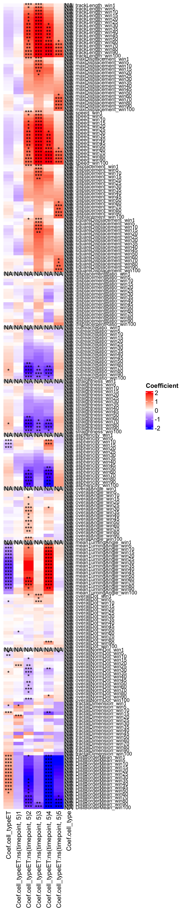
How to talk through the heatmap:
If someone asks “Why not use a simple linear model?”, the answer is:
If someone asks “Why not fit separate tests at each timepoint?”, the answer is:
If someone asks “What does the random effect buy us biologically?”, the answer is:
If someone asks “Why splines?”, the answer is:
colors_samples <- scales::hue_pal()(2)
colors_clusters <- c(
RColorBrewer::brewer.pal(12, name = "Paired"),
pals::glasbey(32)[-4],
RColorBrewer::brewer.pal(9, name = "Set1"),
RColorBrewer::brewer.pal(8, name = "Set2"),
RColorBrewer::brewer.pal(12, name = "Set3"),
RColorBrewer::brewer.pal(9, name = "Pastel1"),
RColorBrewer::brewer.pal(8, name = "Pastel2"),
RColorBrewer::brewer.pal(8, name = "Accent"),
RColorBrewer::brewer.pal(8, name = "Dark2")
)
color_expression <- pals::jet(n = 50)
clustering_table <- analysis_state$collapsed_duplicates$clustering_table
categorical_columns <- names(clustering_table)[1:4]
feature_columns <- names(clustering_table)[5:ncol(clustering_table)]
seurat_meta <- clustering_table[, categorical_columns, drop = FALSE]
seurat_meta$node_id <- as.numeric(as.character(seurat_meta$node_id))
seurat_meta$timepoint <- as.numeric(as.character(seurat_meta$timepoint))
seurat_meta <- merge(seurat_meta, analysis_state$duplicate_resolution$corrected_tracks, all.x = TRUE, all.y = FALSE)
tracking_matrix <- t(as.matrix(clustering_table[, feature_columns, drop = FALSE]))
colnames(tracking_matrix) <- rownames(clustering_table)
SO <- load_or_create_rds(
file.path(paths$cache_dir, "seurat_pca.rds"),
function() {
object <- suppressWarnings(
CreateSeuratObject(
counts = tracking_matrix,
assay = "IM",
meta.data = seurat_meta,
project = "Tracking"
)
)
DefaultAssay(object) <- "IM"
VariableFeatures(object) <- rownames(object[["IM"]])
object |>
ScaleData(verbose = FALSE) |>
RunPCA(verbose = FALSE)
}
)Review note:
std_pc <- Stdev(SO, reduction = "pca")
elbow_point <- estimate_elbow_point(std_pc)
pcas <- seq_len(elbow_point)
ggplot(data.frame(PC = seq_along(std_pc), STD = std_pc), aes(x = PC, y = STD)) +
geom_point() +
geom_vline(xintercept = elbow_point, colour = "red") +
ggtitle(paste("Elbow point:", elbow_point)) +
theme_bw()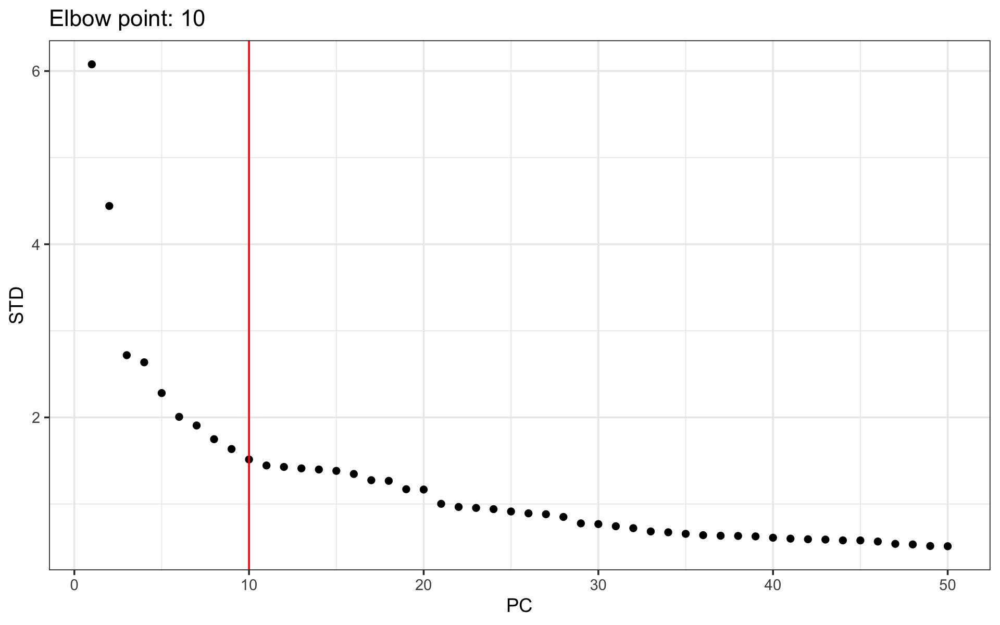
How to describe this:
use_assay <- "IM"
resolutions <- c(0.1, 0.2, 0.5, 0.75)
clustering_names <- paste0(use_assay, "_snn_res.", resolutions)
SO <- load_or_create_rds(
file.path(paths$cache_dir, "seurat_clusters.rds"),
function() {
clustered <- FindNeighbors(SO, dims = pcas, reduction = "pca")
clustered <- FindClusters(clustered, resolution = resolutions, verbose = FALSE)
for (cluster_name in clustering_names) {
clustered[[cluster_name]] <- as.factor(
paste0("C", stringr::str_pad(clustered[[cluster_name]][, 1], 2, pad = "0"))
)
}
clustered
}
)
cluster_counts <- SO@meta.data[, clustering_names, drop = FALSE] |>
tidyr::pivot_longer(cols = dplyr::everything(), names_to = "resolution", values_to = "cluster") |>
dplyr::count(resolution, cluster, name = "n_cells")
knitr::kable(cluster_counts, caption = "Cluster counts across tested resolutions")| resolution | cluster | n_cells |
|---|---|---|
| IM_snn_res.0.1 | C00 | 9381 |
| IM_snn_res.0.1 | C01 | 5929 |
| IM_snn_res.0.1 | C02 | 329 |
| IM_snn_res.0.2 | C00 | 6067 |
| IM_snn_res.0.2 | C01 | 4772 |
| IM_snn_res.0.2 | C02 | 4161 |
| IM_snn_res.0.2 | C03 | 639 |
| IM_snn_res.0.5 | C00 | 3260 |
| IM_snn_res.0.5 | C01 | 2513 |
| IM_snn_res.0.5 | C02 | 1974 |
| IM_snn_res.0.5 | C03 | 1843 |
| IM_snn_res.0.5 | C04 | 1665 |
| IM_snn_res.0.5 | C05 | 1334 |
| IM_snn_res.0.5 | C06 | 1258 |
| IM_snn_res.0.5 | C07 | 816 |
| IM_snn_res.0.5 | C08 | 449 |
| IM_snn_res.0.5 | C09 | 343 |
| IM_snn_res.0.5 | C10 | 184 |
| IM_snn_res.0.75 | C00 | 2062 |
| IM_snn_res.0.75 | C01 | 1662 |
| IM_snn_res.0.75 | C02 | 1409 |
| IM_snn_res.0.75 | C03 | 1399 |
| IM_snn_res.0.75 | C04 | 1206 |
| IM_snn_res.0.75 | C05 | 1190 |
| IM_snn_res.0.75 | C06 | 1142 |
| IM_snn_res.0.75 | C07 | 1122 |
| IM_snn_res.0.75 | C08 | 878 |
| IM_snn_res.0.75 | C09 | 745 |
| IM_snn_res.0.75 | C10 | 719 |
| IM_snn_res.0.75 | C11 | 646 |
| IM_snn_res.0.75 | C12 | 632 |
| IM_snn_res.0.75 | C13 | 622 |
| IM_snn_res.0.75 | C14 | 205 |
Why multiple resolutions are shown:
selected_resolution <- 0.5
resolution_name <- paste0(use_assay, "_snn_res.", selected_resolution)
SO <- SetIdent(SO, value = resolution_name)
DefaultAssay(SO) <- use_assay
selected_perplexity <- 200
selected_neighbors <- 50
selected_min_distance <- 0.3
SO <- load_or_create_rds(
file.path(paths$cache_dir, "seurat_embeddings_final.rds"),
function() {
object <- SO
object <- RunTSNE(
object,
assay = use_assay,
dims = pcas,
seed.use = 123456,
perplexity = selected_perplexity,
check_duplicates = FALSE,
reduction.name = "tSNE.Final",
reduction.key = "tSNE_",
verbose = FALSE
)
object <- RunUMAP(
object,
dims = pcas,
seed.use = 123456,
n.neighbors = selected_neighbors,
min.dist = selected_min_distance,
reduction.name = "UMAP.Final",
reduction.key = "UMAP_",
verbose = FALSE
)
object
}
)What to say in the meeting:
200, UMAP neighbors 50, and UMAP
min distance 0.3.SO <- load_or_create_rds(
file.path(paths$cache_dir, "seurat_final.rds"),
function() {
final_object <- SetIdent(SO, value = resolution_name)
final_object$res.Final <- final_object[[resolution_name]][, 1]
SetIdent(final_object, value = "res.Final")
}
)
SO <- add_annotations_to_seurat(SO, analysis_state$node_mapping, ntimepoints = 5)One important refactor detail:
cell_type_detailed from an Excel file on another Windows
path.../data/KM1_tracking.xlsx.track_name-based fallback so the notebook remains
runnable.DimPlot(
SO,
reduction = "tSNE.Final",
group.by = "cell_type",
cols = colors_samples,
shuffle = TRUE
) +
DimPlot(
SO,
reduction = "tSNE.Final",
group.by = "res.Final",
cols = colors_clusters,
shuffle = TRUE
)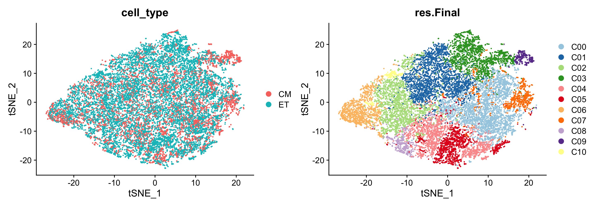
DimPlot(
SO,
reduction = "UMAP.Final",
group.by = "cell_type",
cols = colors_samples,
shuffle = TRUE
) +
DimPlot(
SO,
reduction = "UMAP.Final",
group.by = "res.Final",
cols = colors_clusters,
shuffle = TRUE
)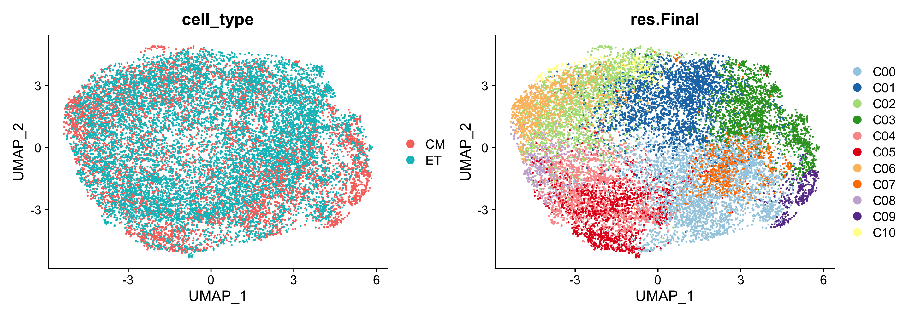
FeaturePlot(
SO,
reduction = "UMAP.Final",
features = c("node_id2", "ntimepoint"),
combine = TRUE
) &
scale_colour_gradientn(colors = color_expression, na.value = "grey90")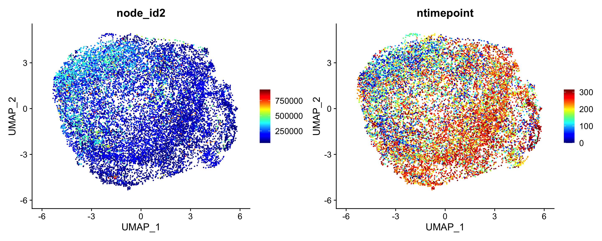
selected_features <- c(
"trackLength_win1",
"maxDisplacement_win20",
"straightness_win20",
"asphericity_win20",
"DistBorderMean_win20",
"overallAngle_win20"
)
selected_features <- gsub("_", "-", selected_features, fixed = TRUE)
FeaturePlot(
SO,
reduction = "UMAP.Final",
features = selected_features[selected_features %in% VariableFeatures(SO)],
combine = TRUE
) &
scale_colour_gradientn(colors = color_expression, na.value = "grey90")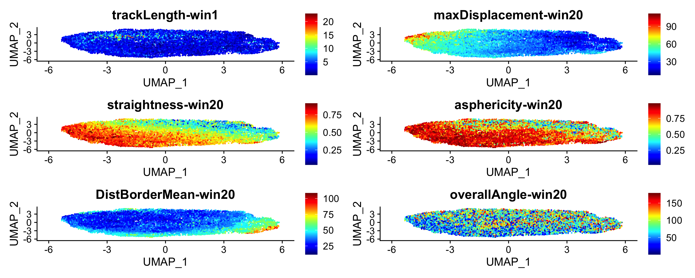
DimPlot(
SO,
reduction = "UMAP.Final",
group.by = "cell_type_detailed",
cols = RColorBrewer::brewer.pal(8, "Set1"),
shuffle = TRUE
) +
DimPlot(
SO,
reduction = "UMAP.Final",
group.by = "Embryo",
cols = RColorBrewer::brewer.pal(8, "Set2"),
shuffle = TRUE
)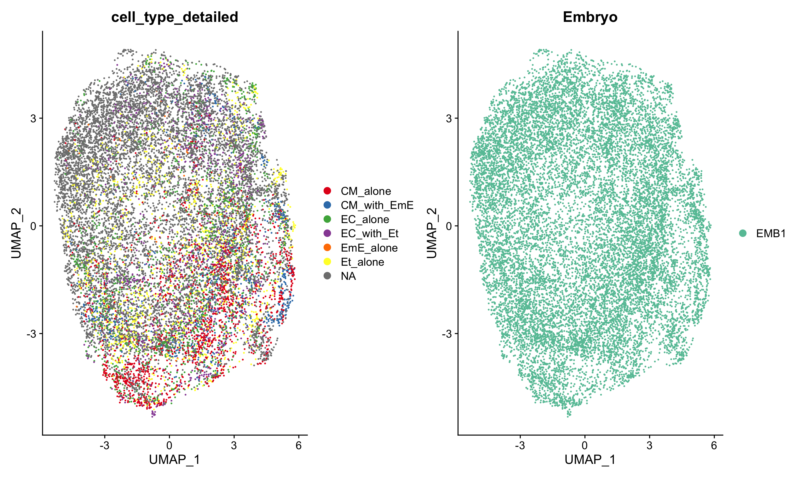
reference_checks <- dplyr::bind_rows(
cbind(
artifact = "clean_wide_nodups",
compare_with_reference(
analysis_state$collapsed_duplicates$clustering_table,
paths$legacy_clean_wide
)
),
cbind(
artifact = "longitudinal_stats",
compare_with_reference(
analysis_state$model_results,
paths$legacy_stats
)
)
)
knitr::kable(reference_checks, caption = "Structural comparison against legacy reference files")| artifact | reference_exists | same_nrow | same_ncol | same_columns |
|---|---|---|---|---|
| clean_wide_nodups | TRUE | TRUE | TRUE | TRUE |
| longitudinal_stats | TRUE | TRUE | TRUE | TRUE |
How to discuss this section:
data/.output/behaviors_v16 are the right place to do row-wise
numeric comparisons.generated_files <- data.frame(
file = sort(list.files(paths$output_root, recursive = TRUE))
)
knitr::kable(generated_files, caption = "Files generated by this analysis")| file |
|---|
| cache/duplicate_resolution.rds |
| cache/node_id_mapping.rds |
| cache/seurat_clusters.rds |
| cache/seurat_embeddings_final.rds |
| cache/seurat_final.rds |
| cache/seurat_pca.rds |
| cache/track_list_all.rds |
| cache/track_list_corrected.rds |
| KM1_tracking_extended_withDists.csv_alltracks_alloriginal_node_id.csv |
| KM1_tracking_extended_withDists.csv_final_table_timepoints_TOT_wide_clean_nodups.csv |
| KM1_tracking_extended_withDists.csv_final_table_timepoints_TOT_wide.csv |
| plots/unnamed-chunk-11-1.png |
| plots/unnamed-chunk-13-1.png |
| plots/unnamed-chunk-14-1.png |
| plots/unnamed-chunk-15-1.png |
| plots/unnamed-chunk-16-1.png |
| plots/unnamed-chunk-17-1.png |
| plots/unnamed-chunk-18-1.png |
| plots/unnamed-chunk-19-1.png |
| plots/unnamed-chunk-20-1.png |
| plots/unnamed-chunk-21-1.png |
| plots/unnamed-chunk-22-1.png |
| plots/unnamed-chunk-23-1.png |
| plots/unnamed-chunk-24-1.png |
| plots/unnamed-chunk-25-1.png |
| plots/unnamed-chunk-26-1.png |
| plots/unnamed-chunk-27-1.png |
| plots/unnamed-chunk-28-1.png |
| plots/unnamed-chunk-29-1.png |
| plots/unnamed-chunk-30-1.png |
| plots/unnamed-chunk-31-1.png |
| plots/unnamed-chunk-5-1.png |
| plots/unnamed-chunk-5-2.png |
| plots/unnamed-chunk-7-1.png |
| plots/unnamed-chunk-7-2.png |
| plots/unnamed-chunk-8-1.png |
| plots/unnamed-chunk-8-10.png |
| plots/unnamed-chunk-8-11.png |
| plots/unnamed-chunk-8-12.png |
| plots/unnamed-chunk-8-13.png |
| plots/unnamed-chunk-8-14.png |
| plots/unnamed-chunk-8-15.png |
| plots/unnamed-chunk-8-2.png |
| plots/unnamed-chunk-8-3.png |
| plots/unnamed-chunk-8-4.png |
| plots/unnamed-chunk-8-5.png |
| plots/unnamed-chunk-8-6.png |
| plots/unnamed-chunk-8-7.png |
| plots/unnamed-chunk-8-8.png |
| plots/unnamed-chunk-8-9.png |
| stat_lmer_ns5.csv |
sessionInfo()R version 4.5.2 (2025-10-31)
Platform: aarch64-apple-darwin20
Running under: macOS Sequoia 15.7.3
Matrix products: default
BLAS: /System/Library/Frameworks/Accelerate.framework/Versions/A/Frameworks/vecLib.framework/Versions/A/libBLAS.dylib
LAPACK: /Library/Frameworks/R.framework/Versions/4.5-arm64/Resources/lib/libRlapack.dylib; LAPACK version 3.12.1
locale:
[1] en_US.UTF-8/en_US.UTF-8/en_US.UTF-8/C/en_US.UTF-8/en_US.UTF-8
time zone: Europe/Paris
tzcode source: internal
attached base packages:
[1] splines grid stats graphics grDevices utils datasets
[8] methods base
other attached packages:
[1] zoo_1.8-15 tidyr_1.3.2 tibble_3.3.1
[4] stringr_1.6.0 Seurat_5.4.0 SeuratObject_5.3.0
[7] sp_2.2-1 scales_1.4.0 readxl_1.4.5
[10] RColorBrewer_1.1-3 pracma_2.4.6 plyr_1.8.9
[13] patchwork_1.3.2 pals_1.10 lmerTest_3.2-1
[16] lme4_2.0-1 Matrix_1.7-4 kableExtra_1.4.0
[19] gtools_3.9.5 gridExtra_2.3 ggplot2_4.0.2
[22] fractaldim_0.8-5 abind_1.4-8 dplyr_1.2.0
[25] DataExplorer_0.9.0 ComplexHeatmap_2.26.1 circlize_0.4.17
[28] celltrackR_1.2.2
loaded via a namespace (and not attached):
[1] RcppAnnoy_0.0.23 later_1.4.8 cellranger_1.1.0
[4] polyclip_1.10-7 fastDummies_1.7.5 lifecycle_1.0.5
[7] Rdpack_2.6.6 doParallel_1.0.17 globals_0.19.1
[10] lattice_0.22-7 MASS_7.3-65 magrittr_2.0.4
[13] plotly_4.12.0 sass_0.4.10 rmarkdown_2.30
[16] jquerylib_0.1.4 yaml_2.3.12 httpuv_1.6.16
[19] otel_0.2.0 sctransform_0.4.3 spam_2.11-3
[22] spatstat.sparse_3.1-0 reticulate_1.45.0 cowplot_1.2.0
[25] mapproj_1.2.12 pbapply_1.7-4 minqa_1.2.8
[28] maps_3.4.3 Rtsne_0.17 purrr_1.2.1
[31] BiocGenerics_0.56.0 IRanges_2.44.0 S4Vectors_0.48.0
[34] data.tree_1.2.0 ggrepel_0.9.7 irlba_2.3.7
[37] listenv_0.10.1 spatstat.utils_3.2-2 goftest_1.2-3
[40] RSpectra_0.16-2 spatstat.random_3.4-4 fitdistrplus_1.2-6
[43] parallelly_1.46.1 svglite_2.2.2 codetools_0.2-20
[46] xml2_1.5.2 tidyselect_1.2.1 shape_1.4.6.1
[49] farver_2.1.2 base64enc_0.1-6 matrixStats_1.5.0
[52] stats4_4.5.2 spatstat.explore_3.7-0 jsonlite_2.0.0
[55] GetoptLong_1.1.0 progressr_0.18.0 ggridges_0.5.7
[58] survival_3.8-3 iterators_1.0.14 systemfonts_1.3.2
[61] foreach_1.5.2 tools_4.5.2 ica_1.0-3
[64] Rcpp_1.1.1 glue_1.8.0 xfun_0.56
[67] withr_3.0.2 numDeriv_2016.8-1.1 fastmap_1.2.0
[70] boot_1.3-32 digest_0.6.39 R6_2.6.1
[73] mime_0.13 textshaping_1.0.5 colorspace_2.1-2
[76] networkD3_0.4.1 scattermore_1.2 tensor_1.5.1
[79] dichromat_2.0-0.1 spatstat.data_3.1-9 generics_0.1.4
[82] data.table_1.18.2.1 httr_1.4.8 htmlwidgets_1.6.4
[85] uwot_0.2.4 pkgconfig_2.0.3 gtable_0.3.6
[88] lmtest_0.9-40 S7_0.2.1 htmltools_0.5.9
[91] dotCall64_1.2 clue_0.3-67 png_0.1-8
[94] spatstat.univar_3.1-6 reformulas_0.4.4 knitr_1.51
[97] rstudioapi_0.18.0 reshape2_1.4.5 rjson_0.2.23
[100] nlme_3.1-168 nloptr_2.2.1 cachem_1.1.0
[103] GlobalOptions_0.1.3 KernSmooth_2.23-26 parallel_4.5.2
[106] miniUI_0.1.2 pillar_1.11.1 vctrs_0.7.1
[109] RANN_2.6.2 promises_1.5.0 xtable_1.8-8
[112] cluster_2.1.8.1 evaluate_1.0.5 cli_3.6.5
[115] compiler_4.5.2 rlang_1.1.7 crayon_1.5.3
[118] future.apply_1.20.2 labeling_0.4.3 stringi_1.8.7
[121] viridisLite_0.4.3 deldir_2.0-4 lazyeval_0.2.2
[124] spatstat.geom_3.7-0 RcppHNSW_0.6.0 future_1.69.0
[127] shiny_1.13.0 rbibutils_2.4.1 ROCR_1.0-12
[130] igraph_2.2.2 bslib_0.10.0